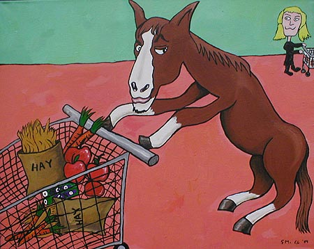
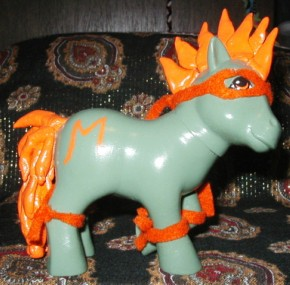
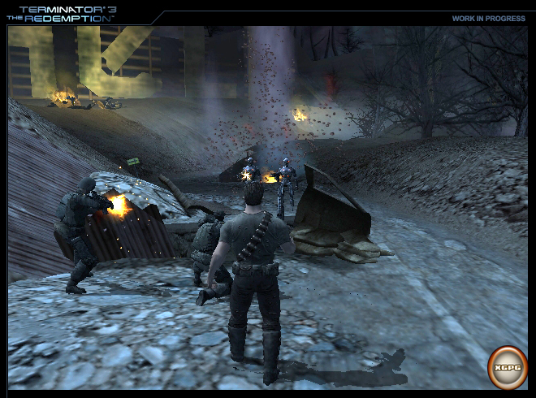
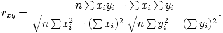

http://numa.notdot.net/map/18203 = my map, its my first map so dont put me down too much
i got it eventually ---> go to map to see demo =)
(puzzle if i get dedication please) another one like this would be great
(puzzle if i get dedication please) another one like this would be great
i would like to do this, and could i have section 4 on map 1 if at all possible
in order from left to right, going along the top, it is:
AND
EX-OR
NOR
EX-NOR
NAND
OR
is this is wrong, please tell me
AND
EX-OR
NOR
EX-NOR
NAND
OR
is this is wrong, please tell me
ill be a judge for you
http://numa.notdot.net/map/28994 my entry 'The Adventure'
you also spelt 'did' wrong, its not d!d
i will be a judge or backup judge for you
when rating a map, do i pm the rating to you?
borealis, have you got the first map to pass on to me, or is the guy before you not done
i already said this on the map, put ive made a map like this already, you're not the first and its not original
i would just like to say that chasethebase is trying to join the contest half way through. he added to solarions map, which you can see here http://numa.notdot.net/map/29979
i gave him a link to come here
i gave him a link to come here
its not there?
please, PLEASE put spaces after you punctuation
ok, i didn't know he was dyslexic. i've only just read his sig. sorry mp
this is pretty cool
American Idiot
this is my entry. its a tribute to green day, and i guess this could go in the following categories:
1:Best Overall
4:Best N Art
10:Best effort
11:Best Ressemblance To Logo
but i doubt i will get any
American Idiot
this is my entry. its a tribute to green day, and i guess this could go in the following categories:
1:Best Overall
4:Best N Art
10:Best effort
11:Best Ressemblance To Logo
but i doubt i will get any
i actually think that this is a really good idea
i had already made that but decided to enter it for this contest, so you cant say everyone uses green day when there is only one entry
dammit for nobody else having posted a map. good point though
it still hasnt reached me
this isn't a question to ask to get out, but I wanna know if I can join?
and my first question is... where do we keep the shotguns?
and my first question is... where do we keep the shotguns?
im worse than all of you. im stuck on 9-2
ignore what I just put, I finally completed column 1
kamikaze3000 - race
Professor, as ado mentioned MAYonnaise and daddaluma mentioned MAY, am I right to think that we are looking for a word that contains the letters MAY?
I have a couple of ideas, but I'll only mention one right now. I think that there should be a switch, where if you touch it, all enemies freeze for 5 seconds, but N can still move. this gives you a chance to get past really hard parts of levels. I cant really show pictures of this, because im no good with animations
another one of mine http://numa.notdot.net/map/36769
I have with me my Mayfly collection. They are very beautiful indeed. This Mayfly is yellow. I found it last May in a river near Mayfair in London.
If I'm right, Billy will be returning today.
any chance of making a cool one for me.... but i don't want it to say 'kamikaze3000', i only want it to say 'kamikaze'
thanks
thanks
Funeral for his Enemy my first entry - expect more
Street Climbing My second entry
I have with me my Mayfly collection. They are very beautiful indeed. This Mayfly is yellow. I found it last May in a river near Mayfair in London.
as i said before:
they are framed in a maple case. it was very expensive.
Sir, Rincewind didn't listen to your comment about him being banished for the next 3 posts. There were only two posts. Also, maple syrup tastes nice, especially on pancakes.
It was made from the finest Sugar Maple in Southern Canada. Coincidentally, the Sugar Maple tree is also used to make Maple Syrup, and this is one of 4 Maple trees that syrup can be made from.
Daddaluma, is that a HD TV you have brought with you. If it is, would i be able to take it apart and see how it works?
yeh. that is an amazing sig you made for me. thanks
If I'm not allowed to take apart the HD TV, may I play Final Fantasy XII on the Japanese PlayStation 2?
Sir, am I correct in thinking that Billy is the key to getting out alive?
urm, mine never got rated
.....and we're dead.......
unless you need to bribe with a certain chocolate.
Professor, since you give in to bribes so easily, how about a KITKAT and a TWIX in exchange for letting me go?
Professor, since you give in to bribes so easily, how about a KITKAT and a TWIX in exchange for letting me go?
May I leave if I give you a bribe of Dark Chocolate Delight?
I'll leave now. Im guessing it had to be Dark Chocolate Delight, not just Chocolate? And does this mean i win?
yeah that would be mean
you were the first one to say 'may...chocolate...?
i think it had to be dark chocolate delight
i think it had to be dark chocolate delight
wow, how cool. i ressurected seome dead guys
wouldn't they then try to kill me?
9_4_0_0, i really liked that map of yours and gave it 4.5 to make up for the rating it had.
rocket thumped, i gave yours 4.5 too, as the flow was very nice, not lost once throughout the level
would anyone mind rating two of my maps
Craziness Endured and Freebird
they got pushed off newest page really quickly and no-ones given them a second look
rocket thumped, i gave yours 4.5 too, as the flow was very nice, not lost once throughout the level
would anyone mind rating two of my maps
Craziness Endured and Freebird
they got pushed off newest page really quickly and no-ones given them a second look
would i be able to do the map for japan and tokyo? my numa username is kamikaze3000 too
im in http://numa.notdot.net/map/27836 Silver pillars 2
^Banned for being a better map maker than me
Granted, but the ice melts and you fall to a horrible death.
I wish i didn't have a broken hand
I wish i didn't have a broken hand
count me in
signature image seems too stretched out, but the colour is good. Silent witness is also hard to read as it is white too.
8.9/10
8.9/10
awesome. KING MAESTRO - legend. 9/10
CagedSparrow has a 0th of 89.925. If you watch the demo his run is actually 75.225, and this would be nowhere near a high score. Can anyone tell me why this has happened?
i just realised that the dud highscore thread was there - sorry for posting this thread
ill judge if u want (not much of a map maker but ill judge)
thats good but kinda random
i would like to see part 2. i wanna see what else fits inside him... lol
wow, that is a mighty elephant
i also have another really random animation, you should check this out too
basically mark, you download pivot animator, and make an animation, and this saves it automatically as the .piv extension. you may need pivot animator to play it, not sure though
yeh, that one was fun to make, and with the horse, i basically extended the idea of the one where he went into the wall, but i made them both a couple of months ago.
mark, i dont expect everyone to download pivot just to watch it. if you dont have it, its just hard luck - your missing out.
i have flash as well, but pivot is so much easier to use.
just a note mebabyme, i wouldnt suggest double posting, you can get warnings for it
just a note mebabyme, i wouldnt suggest double posting, you can get warnings for it
i see u like smileys too 

@gangsta-skorp: i never actually checked that before. o well. i was wrong again
@gangsta-skorp: i never actually checked that before. o well. i was wrong again
^sounds like has a name of an alien
8/10
the quote is awesome, the image writing is hard to read
the quote is awesome, the image writing is hard to read
^most likely to receive a darwin award for dieing in some 'unfortunate' way
^Banned for still being a better map maker than me
^is a 'gangsta'
^most likely to be shot in a gang war
^most likely to be earning lots of money
(freakykiwi made the sig, it looked cool spelt kamakaze, so i didnt complain)
(freakykiwi made the sig, it looked cool spelt kamakaze, so i didnt complain)
i mostly listen to rock, punk and alternative.
foo fighters, blink182, green day, angels and airwaves, sum 41
they are the bands im listening to most these days
foo fighters, blink182, green day, angels and airwaves, sum 41
they are the bands im listening to most these days
^most likely to be incorrect about me being violent
Will soon kill himself for the sake of Japan
that just cracked me up
i dunno how you use that frappr website, but i looked at it and i live about 45 minutes from sweep
^Most likely to jump out of a plane with a bin bag, thinking it would hold you up
^Banned for use of incorrect grammar in your 'siggy'
(hehehehe.... gulp)
(hehehehe.... gulp)
Granted, but then 88 sat on 7 and made him into a 1
I wish that my Foo Fighters tickets would come
I wish that my Foo Fighters tickets would come
ADHD = Alienated Druggies Hate Dogs
A.N.I.C (Anna Nicole-Smith is a f###ing stupid C#nt - This is a Sum 41 song name so noone gets offended by it)
A.N.I.C (Anna Nicole-Smith is a f###ing stupid C#nt - This is a Sum 41 song name so noone gets offended by it)
Combine Problem
apparently i was helping my little sister with homework
apparently i was helping my little sister with homework
Ive finished voting - heres my votes:
Trusttheninja by trustmeimaninja:
Tileset: 17/35 I liked the use of the tiles to make the name, but it was not very attractive in some parts
Object Application: 11/20 Mines were clustered in the middle, and hidden thwumps and trap doors are not a good idea.
Originality: 12/25 Standard Action Map, very similar to most these days. Doesnt stand out much.
Difficulty Balancer: 14/20 This was fairly simple, not too had, making it more enjoyable.
Total: 54/100 Average action map tileset could have been better.
McP3000s Self Signature:
Tileset: 18/35 Not very attractive, and very messy
Object Application: 17/20 Placement of gold and door switches was nice, with enemies making them harder to reach.
Originality: 17/25 Unusual to see a map entirely out of circles.
Difficulty Balancer: 14/20 I found this quite hard, as the guass turrets were positioned very well, but it would be too hard for some beginners.
Total: 66 /100 Enjoyable map, but tileset brought it down a lot
McP3000s Uprising
Tileset: 24/35 This was unused in most of the gameplay, but it was very attractive
Object Application: 17/20 The objects were placed consistently, and made the level attractive, and also created a sense of difficulty, as you had to avoid the mines
Originality: 14/25 Looks very much like a typical metanet-created level, and although this makes it enjoyable, it is not original
Difficulty Balancer: 14/20 This was fairly hard, but still enjoyable
Total: 69/100 Better than your first, but could have been a bit easier
This is my home by xdude_rox
Tileset: 29/35 The use of your name included in the gameplay added an enjoyable element
Object Application: 17/20 Constant throughout, and the mines made the map more pleasing
Originality: 17/25 Very good action map. Although it is a lot like most action maps these days, it was executed very well
Difficulty Balancer: 13/20 In some places this map just seemed too complex, especially after having got the exit switch, and returning to the door.
Total: 76/100 Great tileset, great gameplay, but just too complex
Cheeses Seize by cheese_god
Tileset: 32/35 The tileset is great, but its a shame it didnt contribute to gameplat
Object Application: 19/20 I dont think that you could have placed the gold any better
Originality: 20/25 Ive seen too many minejumpers as of late, and in my opinion, they are just too hard, but this was done very well
Difficulty Balancer: 12/20 It would have been ok without the rocket, as all you need is patience, but the rocket means that you have to rush, making mistakes, inevitably killed yourself.
Total: 83/100 I like very much
Freik by Freik
Tileset: 29/35 Very bold and stands out lots
Object Application: 19/20 I very much liked the idea of having to run along under the mines, and collect all the gold before the thwump started moving back again
Originality: 18/25 Standard Action Map. Similar to other entries, but used some ideas which others do not contain
Difficulty Balancer: 18/20 Excellent balancing between easy and hard. Cant complain about this
Total: 84 /100 An overall very good map
Jmans Hanger by Gangsta-skorp
Tileset: 26/35 Very basic, but integrated into gameplay
Object Application: 16/20 I very much liked the idea of having to jump through the bounce blocks, and they were used very well
Originality: 18/25 Another map in which you refrain from touching the floor
Difficulty Balancer: 18/20 Enjoyable and simple in some parts, yet addictive
Total: 78/100 Not much more to say
MP with and E by MysteryPower
Tileset: 29/35 The tileset stood out and made the map look attractive
Object Application: 7/20 The gold was virtually pointless, making the map look more unattractive
Originality: 14/25 Looks like a typical mine-jumper, plays like a typical mine-jumper
Difficulty Balancer: 10/20 Too hard to complete, too many mines to avoid, too many guasses to avoid.
Total: 60 /100 Average submission
Palemoon sig 1 by Palemoon
Tileset: 32/35 Very nice inverted style tileset
Object Application: 14/20 Most mines werent needed, as you could easily avoid them
Originality: 16/25 Another mine jumper with other enemies, in this case just one
Difficulty Balancer: 18/20 Simple yet effective
Total: 80/100 Great map
Nemetacyst
Tileset: 34/35 What can I complain about
Object Application: 18/20 Mines used very effectively throughout the map
Originality: 20/25 Mine jumper, but one of best Ive seen so far
Difficulty Balancer: 16/20 I personally find it too difficult, however this would be very enjoyable for more experienced N players
Total: 88/100 Thumbs up
I thought by use computers by palemoon
Tileset: 31/35 This was excellent, and helped the map to work like it did
Object Application: 17/20 Mines and gold used effectively
Originality: 20/25 I very much liked to way you created a map whereby if you went passed the one ways it was gameover
Difficulty Balancer: 16/20 The rocket was very difficult to avoid at the start but was balanced very well throughout the rest of the map
Total: 84/100 Nice map overall
Tortilla Chips and Yahoozy Guacamole
Tileset: 28/35 Very effective but a shame that you couldnt integrate your name into the gameplat
Object Application: 15/20 Some of the lasers were unneeded as well as the mines next to the laser drones
Originality: 22/25 One of the first maps where youve had to squeeze through parts in this contest
Difficulty Balancer: 16/20 It was balanced perfectly with the exception of passing out of the middle into the final section
Total: 81/100 One of favourite maps so far
Zugbop by Zugbop
Tileset: 34/35 This was very nice indeed
Object Application: 18/20 The use of mines on the name was very effective, along with the mines under the bounce blocks
Originality: 19/25 Another avoid touching the floor maps, but executed very well
Difficulty Balancer: 16/20 Balanced very well, but in some parts of the map, it was very simple
Total: 87 /100 I very much like this
Lightning Rod by the Adster
Tileset: 24/35 Very boring and plain tileset, with nothing standing out
Object Application: 14/20 Some of the drones seemed very pointless; they could be avoided with ease. Trap doors blocking switches are not a good ides
Originality: 17/25 Very similar to many other maps
Difficulty Balancer: 14/20 Balanced well for some parts, although reaching the switch in the left section was very hard.
Total: 69/100 Could have been better
Why dont we levitate with electro-thingies by Evil_
Tileset: 32/35 The main area in which the gameplay occurred was standard, although the rest of it was unique.
Object Application: 14/20 A rocket was not the right type of enemy to be using for this map. It made for hard gameplay
Originality: 22/25 Excellent use of the Floor Guard moving on the doors
Difficulty Balancer: 16/20 Balanced well, until you try to constantly dodge the rocket.
Total: 84/100 Uber
Nowhere to Hide by x-
Tileset: 24/35 Very basic, and although it is your user name, you could have added other elements to it
Object Application: 17/20 Very well done. Everything positioned perfectly, and the name is correct, nowhere to hide.
Originality: 22/25 Have seen no others like this yet
Difficulty Balancer: 19/20 Very well balanced, with no argument
Total: 82/100 A very good map
Cheese by Cheese_god
Tileset: 27/35 Basic, with nothing standing out in particular
Object Application: 18/20 Gold placed very well, along with enemies
Originality: 17/25 Unusual yet satisfying
Difficulty Balancer: 17/20 Not too difficult, not too hard
Total: 79/100 Not as good as your first
Trustmeimaninja
Tileset: 15/35 Still not high quality, and most letters are unclear
Object Application: 11/20 Objects placed in places, although hidden thwumps are bad
Originality: 8/25 Too similar to your first, and very much like standard action maps
Difficulty Balancer: 7/20 Balanced poorly in some places, and too simple
Total: 41/100 Not as good as your first
Abra Kadabra by xdude_rox
Tileset: 27/35 I liked the design of the middle although the rest was very plain
Object Application: 17/20 Excellent, although McP3000 stated that there was to be no code editing other than NaNed drones
Originality: 19/25 Standard Action map
Difficulty Balancer: 16/20 Easy at the start, fast at the end, not constant
Total: 79/100 Fairly good map
Ngaged rocks by Ngaged
Tileset: 30/35 Symmetrical I like
Object Application: 18/20 Objects placed well and constantly.
Originality: 17/25 A bit samey
Difficulty Balancer: 16/20 Very simple to finish quickly, but fairly difficult to get all gold.
Total: 81/100 Nice
Jellyfish by Nemetacyst
Tileset: 34/35 That is a friggin awesome tileset
Object Application: 18/20 Mines used perfectly to make a very fun map
Originality: 19/25 Yet another mine jumper, yet this was better than most
Difficulty Balancer: 19/20 This was perfect. I cant complain about it at all
Total: 90/100 The best I have seen so far
Pembies Vine by Pembie
Tileset: 28/35 This was very nice, although the vines themselves were unattractive
Object Application: 15/20 Gold seemed to be randomly placed (yes I do know they were supposed to be grapes), and some doors were not needed.
Originality: 20/25 A Jumper puzzle, yet not a mine jumper
Difficulty Balancer: 16/20 Along with all the rockets and guasses, this map was not very well balanced.
Total: 79 /100 Fairly good
Si-Wi Spike by Silent Witness
Tileset: 30/35 Very attractive
Object Application: 18/20 Didnt use too many mines, but used just the right amount
Originality: 19/25 Another mine jumper, and this was one of the better ones as you were not forced to avoid other enemies
Difficulty Balancer: 17/20 Balanced well, not forced into avoiding enemies all the time
Total: 84/100 Very nice
Stealth Suit by Evil_
Tileset: 29/35 Very jaggedy but attractive
Object Application: 16/20 Mines used well, although being chased by a drone while avoiding mines is not fun
Originality: 17/25 Yet another mine jumper Im getting bored of these.
Difficulty Balancer: 13/20 In my opinion, it is too hard, but looks very good
Total: 75/100 Fairly Nice
Pembies death trap by Pembie
Tileset: 26/35 Too plain and not very attractive
Object Application: 15/20 Mines and gold used well. Too man enemies, making life harder for the little guy
Originality: 15/25 Standard Action Map
Difficulty Balancer: 14/20 Too difficult in some places, not well balanced.
Total: 70 /100 Average
UpDown Self Sig
Tileset: 27/35 Not very exciting
Object Application: 19/20 Mines and gold placed very well. Few enemies = good
Originality: 20/25 Havent seen a self sig map made like this yet
Difficulty Balancer: 16/20 Balanced well, but not balanced enough
Total: 82/100 Nicely done
Bio-technics by Mr Mongoose
Tileset: 29/35 I liked the way you created your name, yet the rest was too plain
Object Application: 18/20 Objects placed superbly, and not too many either
Originality: 22/25 I liked the flow of the top part
Difficulty Balancer: 18/20 Balanced well: top was harder, bottom easier
Total: 87/100 Excellent map
First it Giveth by Mr Mongoose
Tileset: 32/35 Even better than your first
Object Application: 15/20 Too many mines and gold, too much going on with rockets
Originality: 18/25 Too similar to first
Difficulty Balancer: 15/20 Couldve been slightly easier
Total: 80/100 Wouldve thought this would be higher
Zey_ by Zey_
Tileset: 30/35 Excellent tileset for a third map
Object Application: 17/20 Used very well. One ways brings looks of map down
Originality: 17/25 Jumper puzzle!!! Gonna explode if I get any more of these
Difficulty Balancer: 18/20 Not too hard, not too difficult
Total: 82/100 Uber
Mosh: A Self-dedication by Moshpit2010
Tileset: 24/35 Very plain and boring
Object Application: 15/20 Some mines, and enemies, especially the floor guard and laser drone, are useless
Originality: 17/25 Standard Action Map
Difficulty Balancer: 14/20 Very active, and in my opinion needs to be balanced more towards calmness
Total: 70/100 Average
Shok. By shockwave
Tileset: 27/35 Very repetitive
Object Application: 20/20 Excellent
Originality: 24/25 Havent seen anything like this
Difficulty Balancer: 19/20 Perfect
Total: 90/100 Tileset brought you down
Swirly by Zey_
Tileset: 33/35 Im being hypnotised
Object Application: 17/20 This was great, although there could have been more mines to make it more difficult
Originality: 19/25 A mine jumper again but different?
Difficulty Balancer: 15/20 Was balanced so as to make it too easy
Total: 84/100 Nice try
Priority Mail by Topolord
Tileset: 34/35 The way you made your name was awesome
Object Application: 14/20 Mines made map look ugly, and drones were very irritating
Originality: 23/25 Its original, but looks like it just took ideas from other maps
Difficulty Balancer: 19/20 Difficulty balanced perfectly
Total: 90/100 Wow
Trusttheninja by trustmeimaninja:
Tileset: 17/35 I liked the use of the tiles to make the name, but it was not very attractive in some parts
Object Application: 11/20 Mines were clustered in the middle, and hidden thwumps and trap doors are not a good idea.
Originality: 12/25 Standard Action Map, very similar to most these days. Doesnt stand out much.
Difficulty Balancer: 14/20 This was fairly simple, not too had, making it more enjoyable.
Total: 54/100 Average action map tileset could have been better.
McP3000s Self Signature:
Tileset: 18/35 Not very attractive, and very messy
Object Application: 17/20 Placement of gold and door switches was nice, with enemies making them harder to reach.
Originality: 17/25 Unusual to see a map entirely out of circles.
Difficulty Balancer: 14/20 I found this quite hard, as the guass turrets were positioned very well, but it would be too hard for some beginners.
Total: 66 /100 Enjoyable map, but tileset brought it down a lot
McP3000s Uprising
Tileset: 24/35 This was unused in most of the gameplay, but it was very attractive
Object Application: 17/20 The objects were placed consistently, and made the level attractive, and also created a sense of difficulty, as you had to avoid the mines
Originality: 14/25 Looks very much like a typical metanet-created level, and although this makes it enjoyable, it is not original
Difficulty Balancer: 14/20 This was fairly hard, but still enjoyable
Total: 69/100 Better than your first, but could have been a bit easier
This is my home by xdude_rox
Tileset: 29/35 The use of your name included in the gameplay added an enjoyable element
Object Application: 17/20 Constant throughout, and the mines made the map more pleasing
Originality: 17/25 Very good action map. Although it is a lot like most action maps these days, it was executed very well
Difficulty Balancer: 13/20 In some places this map just seemed too complex, especially after having got the exit switch, and returning to the door.
Total: 76/100 Great tileset, great gameplay, but just too complex
Cheeses Seize by cheese_god
Tileset: 32/35 The tileset is great, but its a shame it didnt contribute to gameplat
Object Application: 19/20 I dont think that you could have placed the gold any better
Originality: 20/25 Ive seen too many minejumpers as of late, and in my opinion, they are just too hard, but this was done very well
Difficulty Balancer: 12/20 It would have been ok without the rocket, as all you need is patience, but the rocket means that you have to rush, making mistakes, inevitably killed yourself.
Total: 83/100 I like very much
Freik by Freik
Tileset: 29/35 Very bold and stands out lots
Object Application: 19/20 I very much liked the idea of having to run along under the mines, and collect all the gold before the thwump started moving back again
Originality: 18/25 Standard Action Map. Similar to other entries, but used some ideas which others do not contain
Difficulty Balancer: 18/20 Excellent balancing between easy and hard. Cant complain about this
Total: 84 /100 An overall very good map
Jmans Hanger by Gangsta-skorp
Tileset: 26/35 Very basic, but integrated into gameplay
Object Application: 16/20 I very much liked the idea of having to jump through the bounce blocks, and they were used very well
Originality: 18/25 Another map in which you refrain from touching the floor
Difficulty Balancer: 18/20 Enjoyable and simple in some parts, yet addictive
Total: 78/100 Not much more to say
MP with and E by MysteryPower
Tileset: 29/35 The tileset stood out and made the map look attractive
Object Application: 7/20 The gold was virtually pointless, making the map look more unattractive
Originality: 14/25 Looks like a typical mine-jumper, plays like a typical mine-jumper
Difficulty Balancer: 10/20 Too hard to complete, too many mines to avoid, too many guasses to avoid.
Total: 60 /100 Average submission
Palemoon sig 1 by Palemoon
Tileset: 32/35 Very nice inverted style tileset
Object Application: 14/20 Most mines werent needed, as you could easily avoid them
Originality: 16/25 Another mine jumper with other enemies, in this case just one
Difficulty Balancer: 18/20 Simple yet effective
Total: 80/100 Great map
Nemetacyst
Tileset: 34/35 What can I complain about
Object Application: 18/20 Mines used very effectively throughout the map
Originality: 20/25 Mine jumper, but one of best Ive seen so far
Difficulty Balancer: 16/20 I personally find it too difficult, however this would be very enjoyable for more experienced N players
Total: 88/100 Thumbs up
I thought by use computers by palemoon
Tileset: 31/35 This was excellent, and helped the map to work like it did
Object Application: 17/20 Mines and gold used effectively
Originality: 20/25 I very much liked to way you created a map whereby if you went passed the one ways it was gameover
Difficulty Balancer: 16/20 The rocket was very difficult to avoid at the start but was balanced very well throughout the rest of the map
Total: 84/100 Nice map overall
Tortilla Chips and Yahoozy Guacamole
Tileset: 28/35 Very effective but a shame that you couldnt integrate your name into the gameplat
Object Application: 15/20 Some of the lasers were unneeded as well as the mines next to the laser drones
Originality: 22/25 One of the first maps where youve had to squeeze through parts in this contest
Difficulty Balancer: 16/20 It was balanced perfectly with the exception of passing out of the middle into the final section
Total: 81/100 One of favourite maps so far
Zugbop by Zugbop
Tileset: 34/35 This was very nice indeed
Object Application: 18/20 The use of mines on the name was very effective, along with the mines under the bounce blocks
Originality: 19/25 Another avoid touching the floor maps, but executed very well
Difficulty Balancer: 16/20 Balanced very well, but in some parts of the map, it was very simple
Total: 87 /100 I very much like this
Lightning Rod by the Adster
Tileset: 24/35 Very boring and plain tileset, with nothing standing out
Object Application: 14/20 Some of the drones seemed very pointless; they could be avoided with ease. Trap doors blocking switches are not a good ides
Originality: 17/25 Very similar to many other maps
Difficulty Balancer: 14/20 Balanced well for some parts, although reaching the switch in the left section was very hard.
Total: 69/100 Could have been better
Why dont we levitate with electro-thingies by Evil_
Tileset: 32/35 The main area in which the gameplay occurred was standard, although the rest of it was unique.
Object Application: 14/20 A rocket was not the right type of enemy to be using for this map. It made for hard gameplay
Originality: 22/25 Excellent use of the Floor Guard moving on the doors
Difficulty Balancer: 16/20 Balanced well, until you try to constantly dodge the rocket.
Total: 84/100 Uber
Nowhere to Hide by x-
Tileset: 24/35 Very basic, and although it is your user name, you could have added other elements to it
Object Application: 17/20 Very well done. Everything positioned perfectly, and the name is correct, nowhere to hide.
Originality: 22/25 Have seen no others like this yet
Difficulty Balancer: 19/20 Very well balanced, with no argument
Total: 82/100 A very good map
Cheese by Cheese_god
Tileset: 27/35 Basic, with nothing standing out in particular
Object Application: 18/20 Gold placed very well, along with enemies
Originality: 17/25 Unusual yet satisfying
Difficulty Balancer: 17/20 Not too difficult, not too hard
Total: 79/100 Not as good as your first
Trustmeimaninja
Tileset: 15/35 Still not high quality, and most letters are unclear
Object Application: 11/20 Objects placed in places, although hidden thwumps are bad
Originality: 8/25 Too similar to your first, and very much like standard action maps
Difficulty Balancer: 7/20 Balanced poorly in some places, and too simple
Total: 41/100 Not as good as your first
Abra Kadabra by xdude_rox
Tileset: 27/35 I liked the design of the middle although the rest was very plain
Object Application: 17/20 Excellent, although McP3000 stated that there was to be no code editing other than NaNed drones
Originality: 19/25 Standard Action map
Difficulty Balancer: 16/20 Easy at the start, fast at the end, not constant
Total: 79/100 Fairly good map
Ngaged rocks by Ngaged
Tileset: 30/35 Symmetrical I like
Object Application: 18/20 Objects placed well and constantly.
Originality: 17/25 A bit samey
Difficulty Balancer: 16/20 Very simple to finish quickly, but fairly difficult to get all gold.
Total: 81/100 Nice
Jellyfish by Nemetacyst
Tileset: 34/35 That is a friggin awesome tileset
Object Application: 18/20 Mines used perfectly to make a very fun map
Originality: 19/25 Yet another mine jumper, yet this was better than most
Difficulty Balancer: 19/20 This was perfect. I cant complain about it at all
Total: 90/100 The best I have seen so far
Pembies Vine by Pembie
Tileset: 28/35 This was very nice, although the vines themselves were unattractive
Object Application: 15/20 Gold seemed to be randomly placed (yes I do know they were supposed to be grapes), and some doors were not needed.
Originality: 20/25 A Jumper puzzle, yet not a mine jumper
Difficulty Balancer: 16/20 Along with all the rockets and guasses, this map was not very well balanced.
Total: 79 /100 Fairly good
Si-Wi Spike by Silent Witness
Tileset: 30/35 Very attractive
Object Application: 18/20 Didnt use too many mines, but used just the right amount
Originality: 19/25 Another mine jumper, and this was one of the better ones as you were not forced to avoid other enemies
Difficulty Balancer: 17/20 Balanced well, not forced into avoiding enemies all the time
Total: 84/100 Very nice
Stealth Suit by Evil_
Tileset: 29/35 Very jaggedy but attractive
Object Application: 16/20 Mines used well, although being chased by a drone while avoiding mines is not fun
Originality: 17/25 Yet another mine jumper Im getting bored of these.
Difficulty Balancer: 13/20 In my opinion, it is too hard, but looks very good
Total: 75/100 Fairly Nice
Pembies death trap by Pembie
Tileset: 26/35 Too plain and not very attractive
Object Application: 15/20 Mines and gold used well. Too man enemies, making life harder for the little guy
Originality: 15/25 Standard Action Map
Difficulty Balancer: 14/20 Too difficult in some places, not well balanced.
Total: 70 /100 Average
UpDown Self Sig
Tileset: 27/35 Not very exciting
Object Application: 19/20 Mines and gold placed very well. Few enemies = good
Originality: 20/25 Havent seen a self sig map made like this yet
Difficulty Balancer: 16/20 Balanced well, but not balanced enough
Total: 82/100 Nicely done
Bio-technics by Mr Mongoose
Tileset: 29/35 I liked the way you created your name, yet the rest was too plain
Object Application: 18/20 Objects placed superbly, and not too many either
Originality: 22/25 I liked the flow of the top part
Difficulty Balancer: 18/20 Balanced well: top was harder, bottom easier
Total: 87/100 Excellent map
First it Giveth by Mr Mongoose
Tileset: 32/35 Even better than your first
Object Application: 15/20 Too many mines and gold, too much going on with rockets
Originality: 18/25 Too similar to first
Difficulty Balancer: 15/20 Couldve been slightly easier
Total: 80/100 Wouldve thought this would be higher
Zey_ by Zey_
Tileset: 30/35 Excellent tileset for a third map
Object Application: 17/20 Used very well. One ways brings looks of map down
Originality: 17/25 Jumper puzzle!!! Gonna explode if I get any more of these
Difficulty Balancer: 18/20 Not too hard, not too difficult
Total: 82/100 Uber
Mosh: A Self-dedication by Moshpit2010
Tileset: 24/35 Very plain and boring
Object Application: 15/20 Some mines, and enemies, especially the floor guard and laser drone, are useless
Originality: 17/25 Standard Action Map
Difficulty Balancer: 14/20 Very active, and in my opinion needs to be balanced more towards calmness
Total: 70/100 Average
Shok. By shockwave
Tileset: 27/35 Very repetitive
Object Application: 20/20 Excellent
Originality: 24/25 Havent seen anything like this
Difficulty Balancer: 19/20 Perfect
Total: 90/100 Tileset brought you down
Swirly by Zey_
Tileset: 33/35 Im being hypnotised
Object Application: 17/20 This was great, although there could have been more mines to make it more difficult
Originality: 19/25 A mine jumper again but different?
Difficulty Balancer: 15/20 Was balanced so as to make it too easy
Total: 84/100 Nice try
Priority Mail by Topolord
Tileset: 34/35 The way you made your name was awesome
Object Application: 14/20 Mines made map look ugly, and drones were very irritating
Originality: 23/25 Its original, but looks like it just took ideas from other maps
Difficulty Balancer: 19/20 Difficulty balanced perfectly
Total: 90/100 Wow
Granted (I tell you they are the most awesome band ever), but then the gun on the front cover of the first foo fighters album shoots you.
I wish my GCSEs would finish
I wish my GCSEs would finish
yeah, thats all but one of the ones that were found in your first post which showed all of them.
One of the links was bust so i couldnt be bothered to find that map
One of the links was bust so i couldnt be bothered to find that map
didnt spend too much time on it
Granted, but then i dropped it in water and it expanded again.
I wish McP3000 would make me a ded that he promised (bribes...)
I wish McP3000 would make me a ded that he promised (bribes...)
^Is a member
ive voted and commented on missions 2 and 4
any chance of getting some of mine rated?
http://numa.notdot.net/map/42645
http://numa.notdot.net/map/41471
http://numa.notdot.net/map/41453
any chance of getting some of mine rated?
http://numa.notdot.net/map/42645
http://numa.notdot.net/map/41471
http://numa.notdot.net/map/41453
SK Tribute by SiWi
Tileset 29/35 - very nice pattern but nto very attractive
Object Application 15/20 - The drones were hardly needed along with most of the gold
Originality 17/25 - Too much like many mine jumpers ive seen
Difficulty Balancer 19/20 - What more can i say
Total 80/100- Good map overall
Tileset 29/35 - very nice pattern but nto very attractive
Object Application 15/20 - The drones were hardly needed along with most of the gold
Originality 17/25 - Too much like many mine jumpers ive seen
Difficulty Balancer 19/20 - What more can i say
Total 80/100- Good map overall
****/10 (hehehehe)
im joking, i dont know what to give
im joking, i dont know what to give
noooooo, i just got my best run ever on this map, and i was tied with 19th - it would have been my first highscore
EDIT: WOOHOHOOHOHOH i just got 173.800
First ever high score YAY
EDIT: WOOHOHOOHOHOH i just got 173.800
First ever high score YAY
i guesss you must have posted while i was editing - - read my previous post
EDIT: i just watched the demo and realised i could've done it so much faster- made so many mistakes
EDIT1: wahay im 15th now
EDIT: i just watched the demo and realised i could've done it so much faster- made so many mistakes
EDIT1: wahay im 15th now
wahay im in 8th position now with 175.250
ive been trying to get my high score on that map for the last 2 hours
yep, like me. i'd keep it to yourself next time
phew... still 8th for me
for me...
1)blink-182
2)foo fighters - im seeing them in june in hyde park
3)angels and airwaves - these guys too
just so everyone know, you've all spelt lynard skynard wrong - its actually lynyrd skynyrd, and freebird live is the most amazing song ever
1)blink-182
2)foo fighters - im seeing them in june in hyde park
3)angels and airwaves - these guys too
just so everyone know, you've all spelt lynard skynard wrong - its actually lynyrd skynyrd, and freebird live is the most amazing song ever
tell us how many dedications you've got a post links to prove it
i have 8 dedications i think, and here are the links
major_sonic
masqeurain5
notae
yahoozy_Guacamole
airtiger
UpDown
jugglingenius
McP3000
i have 8 dedications i think, and here are the links
major_sonic
masqeurain5
notae
yahoozy_Guacamole
airtiger
UpDown
jugglingenius
McP3000
*psst* what it is?
im slightly emo, and i caught my wrist on a fence, and everyone thought i cut myself - it was funny
44444 is mine, im gonna make some uber map for it
...so you didn't die then? damn =)
what happened after that? - you climb back up? someone helped you?
on a more positive note, i only broke my hand (not my leg or arm ) last week
) last week
what happened after that? - you climb back up? someone helped you?
on a more positive note, i only broke my hand (not my leg or arm
) last week73H 1337357... hehehehe
really cool, made me a great dedication, and makes loads of uber maps
really cool, made me a great dedication, and makes loads of uber maps
you've probably already realised this, but i reckon you can improve your run even further L3X
when you land, shown by the green line below, you stutter, and then jump.
it is possible, which is what i do most of the time (then mess up on the rest of the run) to land and jump straight away, (shown by the red line) while getting all gold, making your time even quicker.
this should improve your run.
im only saying this because there's no way its possible for to me to everything you do

when you land, shown by the green line below, you stutter, and then jump.
it is possible, which is what i do most of the time (then mess up on the rest of the run) to land and jump straight away, (shown by the red line) while getting all gold, making your time even quicker.
this should improve your run.
im only saying this because there's no way its possible for to me to everything you do
ill try to solve it, but im not very good at riddles. im only on phase 18 of webriddler and level 52 of notpr0n
that was a great run. nice one L3X
5. My payslip at the end of every month
4. Learn to drive (January 07)
3. Finish GCSEs (june 06)
2. blink-182 get back together (?)
1. Foo fighters in hyde park (june 06)- its gonna be awesome - foo fighters, motorhead, qotsa, and angels and airwaves - my new favourite band
4. Learn to drive (January 07)
3. Finish GCSEs (june 06)
2. blink-182 get back together (?)
1. Foo fighters in hyde park (june 06)- its gonna be awesome - foo fighters, motorhead, qotsa, and angels and airwaves - my new favourite band
I am thinking of starting a series of maps, created by various members, similar to The Epic. These maps will not be joined horizontally, by will be joined vertically.
The first map would be N on Earth, and the series would feature him going deeper and deeper underground into the depths of the Earth.
Before i plan this out fully, i need to know if anybody would be interested in this, and if so, please give your opinion here.
http://metanet.2.forumer.com/index.php?act=ST&f=10&t=9942 here you go sign up here
The first map would be N on Earth, and the series would feature him going deeper and deeper underground into the depths of the Earth.
Before i plan this out fully, i need to know if anybody would be interested in this, and if so, please give your opinion here.
http://metanet.2.forumer.com/index.php?act=ST&f=10&t=9942 here you go sign up here
an example of a bot-posted thread - - http://metanet.2.forumer.com/index.php?showtopic=9813
jsut to make sure, id better back up all of my maps
You scored as agnosticism.
You are an agnostic. Though it is generally taken that agnostics neither believe nor disbelieve in God, it is possible to be a theist or atheist in addition to an agnostic. Agnostics don't believe it is possible to prove the existence of God (nor lack thereof). Agnosticism is a philosophy that God's existence cannot be proven. Some say it is possible to be agnostic and follow a religion; however, one cannot be a devout believer if he or she does not truly believe.
agnosticism 88%
Satanism 75% (Could be true - i have a book called the Necronomicon - about black magic and stuff)
atheism 67%
Christianity 58%
Islam 54%
Hinduism 54%
Buddhism 42%
Paganism 38%
Judaism 38%
You are an agnostic. Though it is generally taken that agnostics neither believe nor disbelieve in God, it is possible to be a theist or atheist in addition to an agnostic. Agnostics don't believe it is possible to prove the existence of God (nor lack thereof). Agnosticism is a philosophy that God's existence cannot be proven. Some say it is possible to be agnostic and follow a religion; however, one cannot be a devout believer if he or she does not truly believe.
agnosticism 88%
Satanism 75% (Could be true - i have a book called the Necronomicon - about black magic and stuff)
atheism 67%
Christianity 58%
Islam 54%
Hinduism 54%
Buddhism 42%
Paganism 38%
Judaism 38%
with the exception of me... hehe all maps rated in 3 hours - i was amazed too
ok - im gonna start this off. at least some people seem interested, and hopefully more will become interested
nice map topolord. ive nearly finished on the map that would start it off, so if there was any chance that you could make the edges filled it, that would be an uber map. as this would probably go under the one im making
A series of user created maps to create a sequence a maps starting from ground level of earth and descending thorugh the depths of the earth
Part 1 - The Descent - kamikaze3000
Part 2 - The Cavern - Topolord
Part 3 - In To Deep - SMTID
Part 4 - Highway to Hell - Rocket_Thumped
Part 5 - City of the Mole Men - McP3000
Part 6 - Mole Patrol - Mr_Mongoose
Part 7 - The Abandoned Mines - Gangsta_Skorp
Part 8 - Hidden Treasures of the Deep - Cheese
Part 9 - Crystal Caverns - Nemetacyst
Pat 10 - The Dark Land of the Mysterious Mole Men - VV33
Part 11 - Dual UnSanity - kamikaze3000
Part 12 - Buried - Topolord
Part 13 - Nesting Grounds - Korbachev
Part 14 - Frozen Residence - Tempus_Fugit
Part 15 - Legend of the Cursed Reefs - McP3000
Part 16 - Crumbling - Mr_Mongoose
Part 17 - The Mining Facility - lord_day
Part 18 - Cave of Spirits - Cheese
Part 19 - Delirium - rocket_thumped
Part 20 - The Hell Bands - VV33
Part 21 - The Paranormal Rift - Nemetacyst
Part 22 - Magma Flows - Topolord
Part 23 - Boulder Jumble - Tempus_Fugit
Part 24 - The Highly Reactive Core - Korbachev
Part 25 - The Secret Laboratory of Dr. Mol-Star - McP3000
Part 26 - Doc Against the Clock - Mr_Mongoose
Part 27 - Through the Spore - lord_day
Part 28 - The Glorius Journey Through Malfunction - Caero
Part 29 - Dr. Mole Star - Rocket_Thumped
Part 30 - The Core - VV33
Part 1 - The Descent - kamikaze3000
Part 2 - The Cavern - Topolord
Part 3 - In To Deep - SMTID
Part 4 - Highway to Hell - Rocket_Thumped
Part 5 - City of the Mole Men - McP3000
Part 6 - Mole Patrol - Mr_Mongoose
Part 7 - The Abandoned Mines - Gangsta_Skorp
Part 8 - Hidden Treasures of the Deep - Cheese
Part 9 - Crystal Caverns - Nemetacyst
Pat 10 - The Dark Land of the Mysterious Mole Men - VV33
Part 11 - Dual UnSanity - kamikaze3000
Part 12 - Buried - Topolord
Part 13 - Nesting Grounds - Korbachev
Part 14 - Frozen Residence - Tempus_Fugit
Part 15 - Legend of the Cursed Reefs - McP3000
Part 16 - Crumbling - Mr_Mongoose
Part 17 - The Mining Facility - lord_day
Part 18 - Cave of Spirits - Cheese
Part 19 - Delirium - rocket_thumped
Part 20 - The Hell Bands - VV33
Part 21 - The Paranormal Rift - Nemetacyst
Part 22 - Magma Flows - Topolord
Part 23 - Boulder Jumble - Tempus_Fugit
Part 24 - The Highly Reactive Core - Korbachev
Part 25 - The Secret Laboratory of Dr. Mol-Star - McP3000
Part 26 - Doc Against the Clock - Mr_Mongoose
Part 27 - Through the Spore - lord_day
Part 28 - The Glorius Journey Through Malfunction - Caero
Part 29 - Dr. Mole Star - Rocket_Thumped
Part 30 - The Core - VV33
I'm emo but i dont cut myself.... now are you guys gunna stop going on about emos already
I'll gladly do this - like a vertical Epic.Actually, it is a vertical epic; there is nothing new map-wise...

that was the idea of this series, and mcp, i like your idea again
its broken again shivan
unfortunately it wont count. the contest closed may 7th - a bit late really
its been approved, although you didnt include the bottom 2 rows of my map. any chance you could change that? other than that, it is an uber map
Quote(The Daily Llama)
He has a random, non- looping .gif avatar that skips in a huge way. I can totally respect a guy who's like that!
wow. the camel said that about me
1. Find n_v1.4 in 'My Computer'
2. Right click
3. Select 'Delete'
4. Go to Recycle Bin
5. Click Empty Recycle Bin
6. Attempt to Open n_v1.4
7. When attempt fails spam forum for help
8. Email Keron Cyst with threats to take control of the forum
9. Press the round-ish button on the front of your computer
10.Complain to Dell/Apple that your computer is broken
11. Spam their forums
12. Put a bucket over your head
13. Walk down the middle of the road
14. Meet N in heaven
15. You finally get to play N
2. Right click
3. Select 'Delete'
4. Go to Recycle Bin
5. Click Empty Recycle Bin
6. Attempt to Open n_v1.4
7. When attempt fails spam forum for help
8. Email Keron Cyst with threats to take control of the forum
9. Press the round-ish button on the front of your computer
10.Complain to Dell/Apple that your computer is broken
11. Spam their forums
12. Put a bucket over your head
13. Walk down the middle of the road
14. Meet N in heaven
15. You finally get to play N
A spike. Woop 8/10
we will start soon. maybe i'll just leave it at ten authors and we can start now.
i will pm you when it is your turn to create a map
Edit: ive slightly changed your map so that i has the bottom two rows of my map. its only the tiles that have changed, but i also moved the exit switch. this is the map data
i will pm you when it is your turn to create a map
Edit: ive slightly changed your map so that i has the bottom two rows of my map. its only the tiles that have changed, but i also moved the exit switch. this is the map data
Quote: kamikaze3000, May 24, 2006 04:04 pm1111I000FI311111111111111A0000000F11111111111111400GLKA00B1111J11M11111A0>11D000311150E00B1111000>MF00G1111L00GH011B10000000F111111LC1A0B1>JP0000000B11111111K@010>P000000K111111EBJ1A0CL0P00000J111E>11@031001100000031111M0C1141A0J11L000000J11D00111110C1111A00000C11M0B15F1I021111000000B11140000I00>111140000G11111LCM00CD0F11100000B1111111@00J1H0>1E0000311112AB1L00?110?1D0000>1111A02110031M0>1140000JM1D0HK11@>11140111LH0000211111150JE111111I000000>1111A0000211111@000000?111I00310K1111A00000000>1I00G1E0211110000000000I00?11D0?111100000000000G1111140J1110000000000>1115F1A0?111000000000G0>11LC1L0011100000000>1L0J1111E0?11100000000?1A0?111500J111H000000?1M00K111@00C1111DG00000200>11111H31111111L00000003111111111|5^121.51082513324,458.980140331927!10^504,228!12^588,354!12^534,348!12^534,420!12^552,504!12^576,528!12^630,546!12^618,492!12^696,528!12^408,462!12^378,402!12^294,420!12^348,360!12^306,312!12^282,354!12^300,468!12^306,516!12^246,492!12^198,552!12^162,498!12^90,498!12^150,438!12^114,402!12^372,510!12^384,570!9^252,348,0,0,17,22,1,-1,0!9^108,420,0,0,16,22,1,-1,0!0^72,156!0^60,150!0^84,144!0^60,180!0^60,198!0^48,186!0^48,198!0^72,186!0^690,336!0^702,336!0^690,348!0^720,342!0^714,318!0^732,312!0^714,330!0^732,330!0^678,348!0^678,360!0^378,432!0^390,444!0^378,444!0^390,420!0^408,438!0^390,456!0^402,420!0^420,438!0^396,432!0^426,426!0^414,420!0^366,432!0^366,420!0^354,432!0^438,438!12^228,336!12^108,456!1^552,168!1^612,252!1^684,132!9^708,504,0,0,15,22,1,-1,0!12^480,504!10^204,132!0^612,270!0^612,282!0^684,150!0^684,162!0^552,186!0^552,198!0^612,96!0^624,108!0^612,120!0^600,108!11^444,564,612,108
ok - ignore that map data. it is bugged for some reason. dont have a clue why
SMTID, which authors have you never heard of - other than me?
also, zres, as you only have submitted two maps to NUMA, i would like you to make another map to prove that you will be able make maps to as high a quality as rocket_thumped and SMTID
SMTID, which authors have you never heard of - other than me?
also, zres, as you only have submitted two maps to NUMA, i would like you to make another map to prove that you will be able make maps to as high a quality as rocket_thumped and SMTID
... and where does kurt cobain come into this, or did that just make no sense?
wow. i thought i was a nobody.
im not sure whether zres would be alrite doing this series. im sure topolord will be as most of his maps are decent
im not sure whether zres would be alrite doing this series. im sure topolord will be as most of his maps are decent
im gonna pm a few people - see if i can get somebody else
its you and average
my favourite paradox is the bible.
it is so contradictory.
'turn the other cheek' and 'love thy neighbour as yourself'
against
'an eye for an eye' and something to do with 'just war' (maybe thats marxism)
well - the bible contrardicts itself a lot - what is the point in following it
it is so contradictory.
'turn the other cheek' and 'love thy neighbour as yourself'
against
'an eye for an eye' and something to do with 'just war' (maybe thats marxism)
well - the bible contrardicts itself a lot - what is the point in following it
thats why i was confused too, and said something about kurt cobain as that was nirvana related
borealis has a few decent maps that ive seen, but i havent seen many maps of his either.
.... yeh i know. formica's offline at the moment
ive never been much good at maths - what does that mean aju? was that about borealis or the series as a whole?
in that case borealis stays. ive seen rocket_thumpeds maps, and if you think borelis is good, he must be
Topolord, can you change the name of the map to 'Underworld Part 2 - The Cavern', and then provide a link to this thread in the description
zres - the map you provided me with was good but it was very simple and easy to complete. the idea of the series is that it is meant to be a challenge
zres - the map you provided me with was good but it was very simple and easy to complete. the idea of the series is that it is meant to be a challenge
i do that a lot. its not fun, is it?
Made the most amazing N art based on one of my favourite bands who i saw in december and am seeing in june
It can be race, if it is race/action hybrid. i think that would go well.
i have also found an author to replace zres. you should all be pleasantly surprised
i have also found an author to replace zres. you should all be pleasantly surprised
(I'm thinking of a number and you don't know what it is! Hahaha! I'll take my secret to the grave! You'll never discover it! It will haunt you for the rest of your life!)
Is it 3? or maybe 7?
... you included somebody in your list who is here....
but, yeah, i agree with you
but, yeah, i agree with you
Granted, but then everyone else gets way better too
I wish i was a donkey
I wish i was a donkey
Banned for being offline when i posted this
is a newbie not a n00b
...south america - joined to north america
north america - bush is president
bush - similar to a tree
tree- has leaves
leaves - are green
green - is the colour of copper when heated over a flame
copper -
north america - bush is president
bush - similar to a tree
tree- has leaves
leaves - are green
green - is the colour of copper when heated over a flame
copper -
woah. most uber demo ever ever
ive never backed up my .sol - i dunno how and it doesnt bother me either. ive only completed 2 columns in the game
wow that was an awesome demo clux. different way to everyone else
i want to meet dave grohl, but hes not a member so grr.....
i guess it would have to be mcp. ive never met a gun-wielding texan, and mcp seems cool, so its gonna be him
i guess it would have to be mcp. ive never met a gun-wielding texan, and mcp seems cool, so its gonna be him
on this pc my beginner high score is 15 seconds 
on my old pc it was 2 - (two) seconds - WOWOWOW
on my old pc it was 2 - (two) seconds - WOWOWOW
cool, nice one smtid. i'll pm rocket to let him know its his turn
didn't anyone notice yet that TDL is gonna take part?
didn't anyone notice yet that TDL is gonna take part?
what do you mean by saying he was banned for 'incompetence'?
sorry. we're full. if this goes well, might do another when, and you could take part in that.
also, somebody, i think it was -andrew-, sniped part 1 down a lot. it could do with some better ratings. (it went from 4 down to 2.5 with his vote)
also, somebody, i think it was -andrew-, sniped part 1 down a lot. it could do with some better ratings. (it went from 4 down to 2.5 with his vote)
thats exactly what i thought, but i didnt post anything in case i was wrong, and if he is rav4, he's also multiaccounting.
his sig says my maps - http://numa.notdot.net/browse?category=&au...r=desc&count=10
yet he is promoting rav4 and his username is rav4var - im suspicious
his sig says my maps - http://numa.notdot.net/browse?category=&au...r=desc&count=10
yet he is promoting rav4 and his username is rav4var - im suspicious
Granted, but you're taxed 99 cents of it.
I wish that the workmen would stop building behind my house
I wish that the workmen would stop building behind my house
... dam
@mysterypower - they started building there too already
i wish people would stop sniping my maps
@mysterypower - they started building there too already
i wish people would stop sniping my maps
nice map rocket.
mcp, your turn now
mcp, your turn now
i think it was -andrew- because of the comment he left on my map. the other people to comment negatively on the map that i commented on were 99turtle99 and slicesofbread, and since then, all of their maps have been sniped, and negative comments left by -andrew-. who else is suspicious?
nice. mr mongoose, your turn
number 13 - the descent http://numa.notdot.net/map/43768
I never need luck. Ever. Well, maybe a little.
Come to think of it, I need a miracle.
*hopes for miracle*
*no miracle*
*falls on floor clutching head*
*dies*
Come to think of it, I need a miracle.
*hopes for miracle*
*no miracle*
*falls on floor clutching head*
*dies*
nice one keron. i've completed first and second columns.
stuck on 29-3, 32, 40, 50 ,60, 72, 80 and 92. a looonng way to go
stuck on 29-3, 32, 40, 50 ,60, 72, 80 and 92. a looonng way to go
i have my job. not much but its 3.77 and hour. but i am only 16 though. I got 140 last month, and got 850 since november. not bad for part time really.
basically i'll do what tetris said (yeah right)
basically i'll do what tetris said (yeah right)
...pumpkin pie with cinammon. ha. beat that. nothing better. expect maybe lemon meringue pie that isnt written in bright yellow letters and has lots of nice melting meringue with it
nooo, top thrill dragster at cedar point isnt the tallest any more i guess. i live in uk, but i went to cedar point 10 years ago, and it was awesome then. i was 6 so i dont remember much
at the moment, i would say that my map is the worst out of all of them. i should probably edit it later to make it better
you know what would be cool...
if we got nominated for a dronie for map series...
that would be awesome
you know what would be cool...
if we got nominated for a dronie for map series...
that would be awesome
ok, roman numerals it is. the only reason i didnt use them before was because then it would be too similar to the epic.
mongoose, as long as a map gets made, it doesnt matter when
mongoose, as long as a map gets made, it doesnt matter when
... obviously. i shoulda put that in there somewhere
george bush
2
...(no idea)
2
...(no idea)
mascote ponte:
its 1 person, the man
its 1 person, the man
wow. i still havent introduced myself.
my name is mark hoppus and i believe in unicorns [/kidding]
anyways, i live in watford in the uk. im 16. im taking my gcses at the moment and ive completed hardly any of n.
i already have my sites set on making money from programming, although this will take a while for me and my mate to do
my name is mark hoppus and i believe in unicorns [/kidding]
anyways, i live in watford in the uk. im 16. im taking my gcses at the moment and ive completed hardly any of n.
i already have my sites set on making money from programming, although this will take a while for me and my mate to do
1. the survivors are alive- dont bury
2. moses didnt take them it was noah
3. ?
2. moses didnt take them it was noah
3. ?
...and i believe i got the first two first
that would be really cool if we did get nominated. keep it up with the map mongoose. i hope its as good as the rest of your maps
edit: wow. mcp you made an awesome map according to numa. it is currently rated 2nd out of all maps. ~SECOND~. WOWOWOWOw
the only map rated higher is afternoon dragon step4. congratulations mate
edit: wow. mcp you made an awesome map according to numa. it is currently rated 2nd out of all maps. ~SECOND~. WOWOWOWOw
the only map rated higher is afternoon dragon step4. congratulations mate
basically, emo is just a way of describing somebody who listens to a certain type of music. e.g funeral for a friend, afi, ....
for some reason, people just take it to mean people who cut themselves now, which doesnt make any sense
for some reason, people just take it to mean people who cut themselves now, which doesnt make any sense
it takes 7 people 20 days to dig up the field. therefore, it takes on person 140 days to dig up the field. 11 people, makes it so there is and 11th of the time
140 divided by 11 gives 12.72727272727272..... days for 11 people to dig up the field.
140 divided by 11 gives 12.72727272727272..... days for 11 people to dig up the field.
i would remake my first two maps, but they are not worthy of a remake
well in that case:
x=12.72
100x = 1272.72
99x = 1260
x = 1260/99
1260/99 is a number that doesnt have decimals
x=12.72
100x = 1272.72
99x = 1260
x = 1260/99
1260/99 is a number that doesnt have decimals
just so you know, my first mapd on numa got deleted by me a while ago - they were only worth a 1 or 2
i would have the heart to look over a lot of maps - i rated all the maps for the self sig contest in 3 hours
i know your answers are correct, i was just answering TDL's question about the real answer the question 2
hide it somewhere. what they don't know cant hurt them. then when he has shouted at you, you have evidence
"bitesizeNUMA is currently offline, but will be back with you soon.
You heard it here first: version 3 is on its way."
a message from sweep on the bitesize numa page.
wow. a third version of bitesize - how cool
You heard it here first: version 3 is on its way."
a message from sweep on the bitesize numa page.
wow. a third version of bitesize - how cool
guess who just nominated you for a dronie.
this series as absolutely awesome - so i nominated you for best map series
this series as absolutely awesome - so i nominated you for best map series
congratulations to aeil spear for ... er ... being ... 1?
i think somebody made a mistake with their profile
i think somebody made a mistake with their profile
borealis summed up my thoughts of this map. good job
i forgive you - dunno what for though, and yes, it is gangstaskorps map. i just pmd him
im not in the us, im in uk. im doing my gcses and they are so much harder than i thought they would be. i predicted a's and a*'s, but im gonna have trouble getting what is expected of me. and ive still got 16 exams left. agrhargargh
a large pie emporium opened on the outskirts of town and put him out of business?
The New Pie Emporium, 'Mmm, Pies', recently bought land off of a recently deceased dead man. How they managed to buy land of a deceased dead man, i don't know. Anyway, Mmm Pies recently decided that they were not selling enough pies, and decided that they must rid themselves of competitors. Recently, Dylan's Pie Emporium was making lots of money, and so Mmm Pies decided to pick on Dylan.
This bullying kept going on and on, until recently, Dylan disappeared. Dylan's Pie Emporium collapsed and Mmm Pies took control of the area.
It is not known whether Mmm Pies had anything to do with the recent disappearance of Dylan, but it has been heard that a body has been found.
The body was laying in a gutter on the corner of Corner Street, and it was not until later that the body was confirmed to be that of a chicken.
Dylan remained hidden for weeks, and nobody had seen him since.
heh, im not much of an author
This bullying kept going on and on, until recently, Dylan disappeared. Dylan's Pie Emporium collapsed and Mmm Pies took control of the area.
It is not known whether Mmm Pies had anything to do with the recent disappearance of Dylan, but it has been heard that a body has been found.
The body was laying in a gutter on the corner of Corner Street, and it was not until later that the body was confirmed to be that of a chicken.
Dylan remained hidden for weeks, and nobody had seen him since.
heh, im not much of an author
nooo, my story got beaten. nice one trogdor
http://numa.notdot.net/map/43768 the descent
At the moment, I think that N Art covers too much of a range of maps. It covers pictures created and tilesets (which are classfied as art).
I feel that there should be 2 separate categories - one called N Art, for pictures and images, and one called Tilesets, for tilesets, as the name states.
I think that this should be done beause then it allows users to easily identify tilesets that are available to create maps from, rather than searching through N Art until you have found the tileset you want.
Please state your opinions on this, and whether you think that it would be implementable.
edit: i just realised i should have put this in Numa Discussions rather than suggestions - sorry
I feel that there should be 2 separate categories - one called N Art, for pictures and images, and one called Tilesets, for tilesets, as the name states.
I think that this should be done beause then it allows users to easily identify tilesets that are available to create maps from, rather than searching through N Art until you have found the tileset you want.
Please state your opinions on this, and whether you think that it would be implementable.
edit: i just realised i should have put this in Numa Discussions rather than suggestions - sorry
i like the easy way of adding maps from numa - good job
sorry ive been offline the last few days.
jman - that was a great map as a race, but it wasnt too great for an underworld-ish looking map. i would be very grateful if you could do another one
edit: mr_mongoose and jman - both your maps were bitesized - good job
jman - that was a great map as a race, but it wasnt too great for an underworld-ish looking map. i would be very grateful if you could do another one
edit: mr_mongoose and jman - both your maps were bitesized - good job
simple - turn one on. leave it on for ten minutes. turn it off and turn the next one on. go up to the attic. if the light is on, it is the second one. if it is off, feel the light. if it is hot, it is the first one, if not, it is the last one
he was on a bike, an every time he reached the top of the hill, he fell back down again. as the woman would not keep the door open, and the cyclist falls back down the hill and dies, she is blamed for murder
this is a completely random guess- i know its wrong
this is a completely random guess- i know its wrong
... and that required you to post in this thread for what reason?
does anyone find it odd about the number of guests that have been on in the last few minutes?
look at this image if you don't know what i mean

so there were 111 guests online - you're probably asking why i'm bringing this up
the highest amount of users online before this was 75, and most of them were registered users. I have only seen this amount of guests online since guest posting was disabled.
when i looked at last click, there was a very high amount of guests 'logging in'. i didn't get a screen shot of this, but there were many logging in at the same time, and to me, this looked really suspicious
edit: now i do have a screenshot, and there was just 4 pages on last click of guests 'logging in'

what does everyone think of this?
look at this image if you don't know what i mean
so there were 111 guests online - you're probably asking why i'm bringing this up
the highest amount of users online before this was 75, and most of them were registered users. I have only seen this amount of guests online since guest posting was disabled.
when i looked at last click, there was a very high amount of guests 'logging in'. i didn't get a screen shot of this, but there were many logging in at the same time, and to me, this looked really suspicious
edit: now i do have a screenshot, and there was just 4 pages on last click of guests 'logging in'
what does everyone think of this?
im just suspicious, as i didn't think that guests needed to log in...
laters yahoozy and good luck with everything
...what does looks matter anyway - i like people for who they are, not what they look like
...and its happening again - the number of guests has gone up even more, after it went down to about 10
yay - i dont have to meet any of you [/sarcasm]
now im sad
now im sad
he wishes to be removed from this raffle - he does not want his map in the draw (i think)
...brains are for money, aren't they?
what else are they any use for...
what else are they any use for...
....no, my brain doesn't understand - this is going a bit off topic
- is this one letter going to everybody or one piece of paper from everybody?
if it is one letter, it would take a VERY long time to get around to everybody in australia, europe and US.
other than that, im all for it
if it is one letter, it would take a VERY long time to get around to everybody in australia, europe and US.
other than that, im all for it
... i knew that *turns away incospicuously*
by doing that i just proved that brains are not useful for getting money - i guess 7654321 is right
by doing that i just proved that brains are not useful for getting money - i guess 7654321 is right
yeh, thats the word i was after, but i had to use wiktionary to find it - google broke
...but avril lavigne cant actually sing, so maybe it is just her looks, not what she can (or in this case can't) do
... could she take out the two white stone that she put in there.... hehehehe
it was 75 up until today, when there is just a huge group of guest users- it seems unreal that there really are taht many online
i second that....
...we get to make an entire episode? - how many maps do you need?
how long have we got to make them - im in the middle of my gcses at the moment
Understand Yoda can I not
i would join, but im not very well known
im sure i read that it was big contributors to the community or whatnot - unless im mistaken and seeing things again
...ok - i guess i misread it then
im half english half welsh, so if im needed for either country, i'll compete
i wouldn't mind going as highscorer or mapmaker
12) Wolf at the door - radiohead.
24) Freebird - Lynard Skynard
its lynyrd skynyrd and the 15 minute live version of the song is amazingly uber
everyone followed your lead
wow - he made me a ded once - how cool
Who thinks that we should combine Wales and Scotland?
Highscorer1: Brett_Sully
Highscorer2:
Mapmaker1: kamikaze3000
Mapmaker2:
Highscorer1: Brett_Sully
Highscorer2:
Mapmaker1: kamikaze3000
Mapmaker2:
i think you should be able to put it on youtube, but im not sure if that costs
SMTID, i can add you to the wales/scotland team if you want
rofl - thats hilarious mcp - dont see why its in a dollar store for 4.99 though
so far, its me and brett_sully
watford is in england, but im half welsh, half english, and as the england team is full, wales for me
because Nintendo are cool
Why is the world flat?
Why is the world flat?
i like, i like
i cant remember, but did you say it would start in july - because im in the middle of my gcses at the moment so dont have too much time
i cant remember, but did you say it would start in july - because im in the middle of my gcses at the moment so dont have too much time
i think that the highscorers from both teams does all 4 maps, and maybe its the total of this
ive added the link for gangsta's map, and i've pmed borealis for him to make his map. im still waiting....
...i was just in a 2 hours maths exam so im not really thinking straight
....sure - im making one for wales/scotland
o well, i've done a wales/scotland one.
here it is:

edit: that was real hard to do with paint shop pro 5 - it is such a bad program
here it is:
edit: that was real hard to do with paint shop pro 5 - it is such a bad program
your probably better than me
i'm just gonna avoid this argument by interuppting it with a nice picture of N
here we go:

uncle N
here we go:
uncle N
do you click outside of the textbox when loading levels? if not, there's your problem
=( no ones commented on my picture
sweep, the problem with the head was that when i loaded it onto imageshack, it messed it up and took out the line which you can see on the left
edit: nice pic chase, although the laser seems a bit strange, as its not straight all the way, but the is amazing for a hand drawn pic. good job
edit: nice pic chase, although the laser seems a bit strange, as its not straight all the way, but the is amazing for a hand drawn pic. good job
A man, a plan, a casa, a bait, a lag, a malt, an ami, an abr, a bayard, a liang, an apa, a jager, an adder, a gaw, a nut, an oca, a net, a caps, a rail, a karat, an amalaka, an agron, a brev, a kit, a ballet, an eel, a bar, a lama, a dan, a patina, a grama, a tin, a manak, a japer, a pupa, an oka, a lev, a trad, a cab, an ala, a papaya, a loma, a cam, a catalpa, a mon, a kor, a tam, a haloid, a regal, a lub, a war, a peen, a stob, a gad, a spin, a ward, a slag, a toom, a we'd, a pos, a marg, a cedar, a daraf, a wat, a dater, a carapa, a lot, a tennis, a laic, a farer, a dame, a haemin, an agal, a tsar, a misaim, an enate, a halo, a garrot, a gip, a rom, a lca, an elem, a yell, a ganoin, a waver, a boma, a ball, a waxer, a tid, an agr, an app, a y-axis, a lion, a lack, a burg, a motmot, a rata, a vil, a satrap, a mart, a rank, a lex, an annot, a pol, a tael, a drub, a nome, a dale, a batwoman, a mara, a lob, a tarp, a res, a drawer, a rot, a doh, a nib, a saw, a harem, a gater, an imam, a llama, a let, a bel, a hamal, a gasser, a cadi, a ramrod, a saga, a bass, a cad, a ya-ta-ta, a flan, a cig, a malam, an anus, a keep, a cuda, a crum, an alapa, a doc, a nett, a laggen, a loofa, a cola, a roman, a vac, a snug, a mass, an ass, a tarpan, a frt, a neb, a reel, a corp, a yob, an ana, a but, a tpd, a pant, a cate, an alb, a napper, a gum, a knot, a daud, a pipa, a ruse, a call, a haar, a matador, a bot, a mod, a cor, an aug, a dop, a bud, a buran, a sika, a nork, a yoga, a kip, a rood, a tanga, a pap, a loop, a rein, a pat, an anadem, a leman, a brocatel, a says, a jad, a nomad, a tau, a nunatak, a drab, a gob, an amt, an andron, an orc, a maim, a kaiak, a saber, a puca, a rab, a rabal, a kabala, a rem, a canoe, an aid, a water, a minah, a yarak, an okay, a redan, a gala, a liza, a coir, a car, a vav, a hail, a guna, a min, an aroma, a mix, a manikin, a capita, a cap, a tsi, a waw, a spira, a rub, an att, a matsu, a hat, a fan, a taj, a ray, a jar, a lah, a datum, a gayal, a bus, a coss, an alias, a lin, a gata, a cabana, a nail, a nod, a vas, a lam, a recall, a nasal, a bat, an aba, a rec, a nim, a gauss, a baba, an ign, an agura, a gleba, a lune, a pastel, a yew, an inner, an exon, a moor, a mir, a pas, a dir, a canalis, a bason, a beg, a kop, a yam, a fader, a citer, a pan, a lunarian, a mot, an alif, a yes, a jaw, a pay, a salad, a poll, a waggon, an ore, an asp, a tabor, a cariama, a kab, a kabob, a lac, a deb, a mun, a dalasi, a daff, a raki, a halal, a sanies, a cast, a hwan, a cay, a dad, an ogam, a ma'am, a japan, a vakeel, a fac, a duel, a sial, a patin, a magot, a roll, a pain, a rall, a fats, a bap, a cerat, a call-up, an abb, a radiov, a gid, a loot, a god, a tenner, an eta, a gar, a grad, a dap, a dirt, a hair, a parr, an agon, a dual, a nonet, a mural, a soda, a teff, a tal, an omasum, a tug, a vat, a doom, a deil, a str, a dam, a gaff, a camoca, a mud, a flow, a fed, a gpm, a tod, a fcp, a reflet, a hay, a nav, a lulab, a tail, a maniac, an ikan, a maid, a salep, a lass, a pall, a gab, a watt, a bay, a map, a lair, a sax, a mar, a madam, a palet, a ramon, a won, a wet, a fen, a nipa, a dBm, a lai, a bag, a haeres, a bun, a ratton, a tana, a sem, a gtc, a giron, a bros, a navar, a carotin, a jab, a dayan, a lever, a fun, a macoma, an iter, a nies, a dak, a yaw, a sera, a tef, a nek, a xat, a boob, a haler, a cir, a daw, a camass, a topaz, a gator, a taw, a lapser, a mut, a biga, a nag, an atlas, a bad, a doodah, a manas, a puna, a fut, a sima, a gen, a facsim, a liard, a gym, a spot, a sex, a nae, a wap, a zax, a way, a tapis, an ord, a habu, a datura, a mel, a kadi, a qat, a mas, a banana, a cran, a bird, a pus, a drain, a lacer, a valor, a pav, a lad, a wamus, a garg, a tamis, a kaon, a tort, a leg, a baht, a lapin, a ref, a wall, a mac, a samaj, a boar, a sunn, a pappus, an aced, an ann, a manor, a barege, a jai, an alap, an acad, a fakeer, a remit, a get, a toil, a gat, a local, a baff, a wain, an akela, an uta, a slab, a rattan, a lyc, an atoll, a banian, a retem, a dorp, a poort, a vug, a supr, a canon, a far, a fanatic, a dep, a caid, a qaf, a kas, a carfax, a patness, a nabob, a catnip, a minima, a must, a sal, a caracara, a manioc, a til, a lip, a rag, an amir, a hareem, an arcs, a teel, a cram, a yawn, a main, a ban, a rasa, a lud, a ragi, a tapir, a top, a dil, a lat, a razz, a jag, a sass, a jalor, a calix, an asb, an ayre, a nap, a tannin, a garb, a sports, a gem, a reed, an esu, a hap, a raglan, a sis, a baronet, a snit, a madras, a plug, a gula, a ros, a scf, a gelder, a terr, a gag, a fay, a fag, a garret, a redleg, a fcs, a sora, a lug, a gulp, a sard, a matins, a tenor, a basis, an alg, a rap, a hausen, a deer, a meg, a strops, a brag, an inn, a tap, an aery, an abs, an axil, a carol, a jass, a sag, a jazz, a ratal, a lid, a pot, a rip, a taig, a radula, a saran, a bani, a manway, a marc, a leet, a scr, an ameer, a harim, an agar, a pil, a lit, a coin, a maar, a caracal, a satsuma, a minim, a pint, a cabob, an assent, a pax, a fracas, a kaf, a qadi, a caped, a cit, an afar, a fanon, a carpus, a guv, a troop, a prod, a meter, an ain, a ballot, an acyl, an attar, a balsa, a tuna, a lek, an ani, a waff, a bal, a colat, a galiot, a teg, a timer, a reek, a fad, a canap, a lanai, a jaeger, a baron, a mannan, a decan, a supp, a pannus, a raob, a jam, a sac, a mall, a wafer, a nip, a lath, a bagel, a trot, an oak, a sim, a tagrag, a sum, a wad, a lav, a parol, a varec, a laniard, a sup, a drib, an arca, an anabas, a mat, a qaid, a kalema, a rut, a daub, a hadron, a sip, a tay, a wax, a zap, a wae, an axes, a tops, a myg, a drail, a misc, a fanega, a mis, a tufa, an upas, an amah, a doodad, a basalt, a nagana, a gib, a tum, a resp, a law, a tarot, a gaz, a potass, a macaw, a daric, a rel, a haboob, a tax, a ken, a feta, a resaw, a yak, a dasein, a retina, a moc, a manuf, a revel, a nay, a dab, a janitor, a caravan, a sorb, an orig, a ctg, a mesa, a nat, an ottar, a nub, a sere, a hag, a bai, a lambda, a pin, a nef, a tew, a now, a nom, a ratel, a pam, a damar, a max, a sari, a lap, a may, a batt, a wab, a gall, a pass, a lapel, a sadi, a manakin, a cain, a mali, a tab, a lulav, an ayah, a telfer, a pcf, a dot, a mpg, a def, a wolf, a duma, a com, a caff, a gam, a darts, a lied, a mood, a tav, a gut, a mus, a monal, a taffeta, a dos-, a larum, a tenon, a laud, a nog, an arr, a pariah, a trid, a pad, a darg, a raga, a ten, a rennet, a dog, a tool, a dig, a void, a rabban, a pull, a cat, a recap, a bast, a fall, a rani, a pallor, a tog, a manit, a palais, a leud, a caf, a leek, a van, a pajama, a mam, a gonad, a day, a can, a what's, a casein, a salal, a haik, a raff, a dais, a ladanum, a bed, a cal, a bob, a kabaka, a mair, a carob, a taps, an aeron, a nogg, a wallop, a dal, a say', a paw, a jasey, a fil, an atom, an air, an ulan, a paretic, a red, a fam, a yapok, a geb, a nos, a basil, an acarid, a sap, a rim, a room, an oxen, a rennin, a wey, a let's, a paenula, a belga, a rug, an angina, a babassu, a gamin, a cera, a banat, a balas, an all, a ceramal, a sav, a don, a liana, an abaca, a tag, a nil, a sail, an assoc, a sub, a lay, a gamut, a dah, a lar, a jay, a raj, a tan, a fat, a haust, a matt, an abura, a ripsaw, a waist, a paca, a tip, a canikin, a maxima, a mor, an anima, an ugali, a hav, a var, a carioca, a zila, a lagan, a deray, a konak, a rayah, an imaret, a wadi, an aeon, a camera, a lab, a kal, a barabara, a cup, a reb, a sakai, a kami, a macron, an ordn, an atman, a bog, a bard, a kat, an unau, a tad, a monad, a jasy, a salet, a corban, a melamed, an anat, a panier, a pool, a papa, a gnat, a door, a pika, a goy, a krona, a kisan, a rub-a-dub, a pod, a guan, a roc, a dom, a tob, a rod, a tamara, a hall, a caesura, a pip, a duad, a tonk, a mug, a repp, an abl, an aet, a catnap, a dpt, a tuba, a nan, a boy, a proc, a leer, a ben, a trf, an apr, a tass, an assam, a guns, a cav, an amora, a loca, a fool, an egg, a latten, a coda, a pal, an amurca, a duc, a peek, a sun, an amal, a magic, an alfa, a tat, a yad, a cassaba, a gas, a dorm, a raid, a caress, a gal, a mahaleb, a tela, a mallam, a minaret, a gamer, a haw, a sabin, a hod, a tor, a reward, a ser, a prat, a bola, a ram, an amowt, a bael, a daemon, a burd, a leat, a lop, a tonn, an axel, a knar, a tram, a part, a saliva, a tar, a tom-tom, a grub, a kcal, an oil, a six, a yapp, an arg, an adit, a rex, a wallaba, a mob, a rev, a wanion, a galley, a melena, a clamor, a pig, a torr, a gaol, a haet, an enami, a simar, a stalag, an anime, a haem, a darer, a facial, a sinnet, a tola, a par, a caret, a dat, a waf, a radar, a decagram, a sop, a dew, a moot, a gals, a draw, an ips, a dag, a bots, a neep, a raw, a bul, a lager, a diol, a ham, a tarok, a noma, a plat, a camaca, a mola, a yap, a paal, an abac, a dart, a vela, a kona, a pup, a rep, a jak, an amanita, a marga, a nit, a panada, a malar, a baleen, a tell, a batik, a verb, an organa, a kalam, an atar, a kali, a rasp, a catena, a con, a tun, a wag, a redd, an areg, a jaap, an agnail, a dray, a barb, an aim, a natl, a mag, a lati, a baas, a canal, Panama
you gotta love google
ooh! a short one RACECAR
you gotta love google
ooh! a short one RACECAR
ooo. i'd like to be a pink ninja being hung from the top right corner. by being hung i mean with a rope round neck - dieing
i have a similar problem to this sometimes. when i go into boss mode, and then press tab to come out of it, it goes to the main screen and instantly switches back. this sometimes also happens in edit mode. i have to hold home and press \ at the same time to return to the main menu, because it is almost like the object or tile button is being constantly pressed.
im confused as to why this happens - anyone else have the same problem?
im confused as to why this happens - anyone else have the same problem?
mistake - you missed out the 'd' in demands on the first line, second word
cool. this series is turning out to be pretty good
yep me as i said before http://numa.notdot.net/map/27836 silver pillars 2
it was posted before may this year
first go 13/20 - im really good at judging how big the line or circle needs to be!!!
...from one girl? wow.
...and how much did they pay her? [/joke]
...and how much did they pay her? [/joke]
ah man, the calc is going!
at least u'll be back soon.
have a good trip
at least u'll be back soon.
have a good trip
... thats my job now 
*please *
*
hehehe
*please
*hehehe
i wouldnt mind doing maths stuff - apparently im some kinda super genius at maths and im only 16
hmm - im stuck with paint shop pro 5 (its useless)
any chance of more plugins info for this version?
any chance of more plugins info for this version?
nope - that paradox is confusing
Because 7 8 9
When will the world begin
When will the world begin
mine was in the 140's when i was 12. i havent done an iq test for so long that o dont know what it is now. i might do one just to check
am i right in thinking that you become a metanember when you reach 500 posts?
if so, i understand why arachnid is a metanember with less than 500 posts, but enforcer has only 1 post, yes ONE, and is ranked as a metanember. see here: http://metanet.2.forumer.com/index.php?showuser=3192
i'm real confused about this
if so, i understand why arachnid is a metanember with less than 500 posts, but enforcer has only 1 post, yes ONE, and is ranked as a metanember. see here: http://metanet.2.forumer.com/index.php?showuser=3192
i'm real confused about this
ok, thanks. i understand now
... yeh, i knew why arachnid was, just wasnt sure about enforcer
k. havent got my demoes yet
Being clever isn't everything though. Just have friends is a goal in life. Here we have all met this goal. That makes me want to cry..*cries*
making money is another

woo. anything to do with mario is cool. but a thumbs up is all i can afford at the moment
9/10
9/10
en guard!
it would have to be friends- yeah, you're right.
i like earning money though- it can be fun
it would have to be friends- yeah, you're right.
i like earning money though- it can be fun
lol. ok
i like this idea. it lets me know how many hundreds of people finish ahead of me - i've still only completed 2 columns
http://metanet.2.forumer.com/index.php?showtopic=9446
this thread also had other links for making games etc
this thread also had other links for making games etc
ive done 00s and 10s but i keep getting stuck on 29-3. i found the rest hard really, which is why i havent finished them
well i had my english language gcse. its the worst possible exam i could have - but it actually went really well. the fact that i had it on that day would be something do to with paranoia, as i hate english
that must be quite a big store. i work in a real small one, but i dunno how you check point of sale info coz i dont have an auth code yet, im not old enough
oooh! cool. nice job
except, for some reason, it says that i need to download something after i've installed it, and i dont know where to find that
except, for some reason, it says that i need to download something after i've installed it, and i dont know where to find that
gcse? if it was, same as me then. and i got through it fine too
heh! i had 1 on monday, 1 tuesday, 1 wednesday, and 2 today, and i have none tomorrow as well. i still have 11 left though
im taking 12, but i have to sit 23 exams for them - they've gone ok so far
...so where does the KGB come into russia - i thought they were something to do with army
i wouldnt mind doing maths stuff - apparently im some kinda super genius at maths and im only 16maths genius? 16? me to. wierd. you live in the UK right? did you do the olympiad?
yep i live in UK, and yep i did the olympiad. i got 101 on the first one, and then merit in the olympiad, i messed up so much, i hate tests
its me[/sarcasm]
on a more serious note, i would say necromancer. his races are great, yet he hardly receives any recognition.
now go vote here http://numa.notdot.net/browse?author=Necromancer-11-11-92
necromancer is one of my favourite map makers
on a more serious note, i would say necromancer. his races are great, yet he hardly receives any recognition.
now go vote here http://numa.notdot.net/browse?author=Necromancer-11-11-92
necromancer is one of my favourite map makers
i'm on numa quite often so i voted very often
i read this just now while looking on the bbc website- could be a reason for causing liver problem
http://news.bbc.co.uk/1/hi/health/5061258.stm
http://news.bbc.co.uk/1/hi/health/5061258.stm

..ok i hate having pictures taken of me, hence the closed eyes - but it was my BIRTHDAY - wahay (6 months ago)
..it was my birthday, and there were candles on the cake- so smoke
all 5 done
http://numa.notdot.net/map/46349
http://numa.notdot.net/map/46520
http://numa.notdot.net/map/46510
http://numa.notdot.net/map/47310
http://numa.notdot.net/map/43768
i'll upload them as userlevels.txt soon
http://numa.notdot.net/map/46349
http://numa.notdot.net/map/46520
http://numa.notdot.net/map/46510
http://numa.notdot.net/map/47310
http://numa.notdot.net/map/43768
i'll upload them as userlevels.txt soon
try 71-0 rocket - your better at N than me and i got a highscoer on it - so you should be able to
maybe im taking 11 - cant remember
but this is what ive got
IT - 1 exam (done)
Business Studies - 2 exams
Classical Civilisations - 2 exams
Maths - 2 exams (1 done)
English Lit. - 1 exam (done)
English Language - 2 exams (done)
German - 4 exams (done)
Biology - 2 exams (1 done)
Chemistry - 2 exams
Physics - 2 exams
RE - 2 exams (1 done)
11 gcses it is then
but this is what ive got
IT - 1 exam (done)
Business Studies - 2 exams
Classical Civilisations - 2 exams
Maths - 2 exams (1 done)
English Lit. - 1 exam (done)
English Language - 2 exams (done)
German - 4 exams (done)
Biology - 2 exams (1 done)
Chemistry - 2 exams
Physics - 2 exams
RE - 2 exams (1 done)
11 gcses it is then
read a really boring book - like war and peace, that will make you sleep straight away
it doesnt actually say anywhere in the article whether it could affect adults, so it could be, but it most likely isn't. the chances are that i'm wrong, but surely this could happen with any soccer boot?
using his super powers to wield off the camera [/joking]
..ok. i need the .net thing, thats why it didnt work
it should work - thats where i posted mine
...well we only do this amount once, and then a bit less two years later, and thats it
i got lost after you said about 4 years... it was confusing
congratulations on your first high score- i know exaxctly how it feels with 1 high score
1. dont get up to start with
2. its a very big tomato
3. Carthage?
2. its a very big tomato
3. Carthage?
ah man, they were so obvious - im an idiot
it happened on differet days?
cool, i got 118
lol. only 4 people in my school did it. someone got 40, someone got 20, i got 18 and got merit, and someone else got 10. as you can see, i hate tests a lot, which is why i messed up
rocket_thumped has said that he is leaving numa. i was amazed that he said that
noo. another great member gone. what is becoming of numa?
good luck with everything rocket - hope you come back one day
good luck with everything rocket - hope you come back one day
i say you start judging.. good idea
for you http://numa.notdot.net/map/46550
yay mongoose is winning. go underworld part iv
*insert subliminal message here*
*insert subliminal message here*
improbability drive is the only one without a word starting with 'M'
to predators, would it be violet light?
getting a corrupted .sol is really unlucky. i dont understand how it becomes corrupted though?
you made me an awesome avatar. dont leave mate
...and now i have 10 left - i just took maths calculator - A* for me
tomb-stone: "I died" (im in no mood for something clever)
music: "polkamon" by weird al...that'd be cool
i wonder whether he'll get what he wanted. RIP
*my name*
jail loathsome henchman
its so true
jail loathsome henchman
its so true
if you have a cd-rom drive and a dvd-rom drive, you can keep the game in one of them, and use the other for anything else. a mate of mine does that
that looks fun but its too hard for me - i get lost too often
... daria's sister
im surprised no-one else said that yet
i have to say, that is a really awesome idea. it would be hard to implement, but fun to play
we have another one here - http://metanet.2.forumer.com/index.php?showtopic=10520
just wanted to make sure you knew. i guess that as the poster was registered, that the bots are undermining the registration system
just wanted to make sure you knew. i guess that as the poster was registered, that the bots are undermining the registration system
a mate a mine gave me N, which i ignored for a while, then i went on numa, and found here, and considering i've had N nearly a year, i haven't got very far
what did you do to that picture implied qoutient - it looks like you got parts of another picture and stuck them down
i live in england near london. i listened to some blink round my mates house about 5 years ago, thats how i heard them. and yep, they do have world tours, and i did see them before they split up.
speaking of that, im seeing tom's new band, angels and airwaves on saturday. they're supporting foo fighters in hyde park. i have a spare ticket if anyone wants it
@ kamikaze... i never get birthday gifts or partys.....
i live in england near london. i listened to some blink round my mates house about 5 years ago, thats how i heard them. and yep, they do have world tours, and i did see them before they split up.
speaking of that, im seeing tom's new band, angels and airwaves on saturday. they're supporting foo fighters in hyde park. i have a spare ticket if anyone wants it
im definitely in
do you not think that kryx is waiting until his scores get beaten before submitting a faster time? once his score is beaten, he could submit, and then he would have a faster time again
you can go as fast as you need to. kryx doesnt need to go faster to beat first, and when his time gets beaten, he goes faster when required
more poses would be good. i find the current ones too boring
what kryx does at the end of 32-1 is very simple to do. even i can do it. its not hard to kill yourself by jumping too fast, so dont go saying he is cheating just because Knu said that it was possible with cheating. its possible without cheating too
llanfairpwllgwyngyllgogerychwyrndrobyllllantysiliogogogoch
i think thats right, im not sure if i can remember how to spell it, but i can say it
amazingly
edit: i just checked, and it is actually this llanfairpwllgwyngyllgogerychwyrndrobwllllantysiliogogogoch
i only got the w wrong
i think thats right, im not sure if i can remember how to spell it, but i can say it
amazingly
edit: i just checked, and it is actually this llanfairpwllgwyngyllgogerychwyrndrobwllllantysiliogogogoch
i only got the w wrong
nice. what else have you done there?
i lose - i couldnt actually complete the one you posted, so you win
heh. i like the new style 
most of the time my aim is just to finish the level, if i dont get gold, o well.
maybe that explains why i only have 1 top 20th highscore
maybe that explains why i only have 1 top 20th highscore
wow - who in there right mind would make up something that long
even if you run in practice mode you then have access to it - it should work - otherwise im confuzzled
i didn't actually look at the picture before, but that view is so awesome - i wanna go there now
I don't believe in them because I'm a christian. Although there are times when I have my doubts....so you dont believe in exorcism. jesus gettin rid of the 'beings' possessing people. if they don't count as 'ghosts' i don't know what does
nice forum eldrial
there is nothing true about that whatever heartview
now we know why the drive was formatted
... i didn't think you were supposed to tell people - or i am wrong again
...can i ask how you sorted out the order for the people?
how's about we be your editor's, and go through and find any problems with it and you change it. that way, you only need to worry about writing it
yep. we're waiting for borealis for the next map. he should be done soon
he said that he would finish off the map - even though he was going to leave
i'll play. im the hertfordshire under 16 champion - anyone want a game?
go here if you don't believe me http://www.ukchesschallenge.com/MFResults0...esHerts06.shtml
im number 68
go here if you don't believe me http://www.ukchesschallenge.com/MFResults0...esHerts06.shtml
im number 68
wahoo equal 19th - yay for me
that would be real fun, watching exactly what you did in the previous run while trying to beat it
doesnt anyone want to play me?
or is it because of this
or is it because of this
im the hertfordshire under 16 champion
may as well do it through PMs - its easier
blink 182, green day, foo fighters, angels and airwaves (im seeing the last 2 in hyde park tomorrow - most amazing gig ever )
because the music they make is so amazing - it makes me go
because the music they make is so amazing - it makes me go
wahay - you're back (even tho you dont have a clue who i am)
back on topic:
hehe legendary

hehe legendary
yeah - i have pmed him
As of 25th August 2006, i am looking for a new author to replace Gangsta_Skorp (aka Jman2005) to participate in the Underworld Series.
Please reply in this thread if you are interested, and ignore any posts dated before 25the august, as they were from previous recruitment.
Final Decision will be made by me and other Underworld Participants
EDIT: Lord_Day has replaced G_S
Please reply in this thread if you are interested, and ignore any posts dated before 25the august, as they were from previous recruitment.
Final Decision will be made by me and other Underworld Participants
EDIT: Lord_Day has replaced G_S
i think it was a bit pixely becuase the image i used was real bad quality
i didn't actually have anybody in mind to replace them. if you have anyone u can think of, pm them if you want
that level gave me trouble recently too. now im stuck on 29-3
Well done for beating it though
Well done for beating it though
that second one sounds just like my life. i'm working on one now, but it won't be too good.
here's mine. it's not too good, but it shows the confusion of my life at the moment:
Its hard knowing that everything you do in life will end in failure.
Why cant it be simple for once in a while?
Struggling to stay afloat in a world of technology,
And finding the one to be with.
Im sitting in the corner,
Thoughts rushing through my head.
The worlds a blur, whizzing round and round.
Im holding a knife, contemplating what I should do.
Music is the answer to all the questions.
The sound of silence is beyond belief,
Yet the silence of sound is spectacular.
Darkness makes my hope flicker.
here's mine. it's not too good, but it shows the confusion of my life at the moment:
Its hard knowing that everything you do in life will end in failure.
Why cant it be simple for once in a while?
Struggling to stay afloat in a world of technology,
And finding the one to be with.
Im sitting in the corner,
Thoughts rushing through my head.
The worlds a blur, whizzing round and round.
Im holding a knife, contemplating what I should do.
Music is the answer to all the questions.
The sound of silence is beyond belief,
Yet the silence of sound is spectacular.
Darkness makes my hope flicker.
i've seen your maps and they are outstanding. you're in.
all other information on this project will be posted here http://metanet.2.forumer.com/index.php?showtopic=9942&st=0
along with all maps etc.
all other information on this project will be posted here http://metanet.2.forumer.com/index.php?showtopic=9942&st=0
along with all maps etc.
^^ you didn't put why mcp
I am very knowlegdeable about everything to do with N, Numa, and the forums.Other than that, i think it would be a great idea to have cheesegod as a mod. He's awesome.
Unjustified. No wmds found. As they couldn't find any, why don't just leave and go back to america. They're causing the oil price throughout the world to rise.
/offtopi - because of that, my business studies gcse exam was on oil, so im blaming bush if i failed
/offtopi - because of that, my business studies gcse exam was on oil, so im blaming bush if i failed
im in
I would like to correct you again. That mistake of 2 letters in 326 words meant that the percentage wrong was 0.63%. This makes your accuracy 99.37%. You're not as good as you thought
They were very close to civil war during sadam hussein's regime. I guess it would be right to stop the war, as this would also stop asylum seekers travelling to other countries, increasing populations, and causing problems in other countries. (No offence is intended by this)
im seeing the last 2 in hyde park tomorrow - most amazing gig ever...BIZNITCH!
I wanna go...
My fave band at the moment is The Automatic, Welsh people rule! (Don't tell them that)
They be sehr odd but very funky rockers. And Welsh. And have an ambulance...
And sold out their concerts
Albs out on 19th June (UK), I reckon you at least have a listen at Virgin or somewhere...
Heh! Yep. Me n a couple of mates going to the most amazing gig ever. I also saw foo fighters last year - they were amazing.
The Automatic are pretty cool.
...and i'm half welsh
cheesegod is making his map as we speak. borealis has gone now#
EDIT: nemetacyst has said that he is interested
EDIT: nemetacyst has said that he is interested
The Beginning. The Pie Emporium came to its end during the second Gulf War. The Americans shot homing missiles at the Iraqi rebels, and missed... badly. The End
heh! faster
157 frames- took 20 off of u
157 frames- took 20 off of u
nope - its real easy not to do fbf
yep your in. we've got all that we need now
yep - your in. sorry - i've been out since 11am yesterday morning, and its now 12 am today. just went to most amazing gig ever!
...i suggested it, and now i see it is a bad idea http://metanet.2.forumer.com/index.php?showtopic=10179
i dont mind really. i was just doing it for fun.
you won originally qix, so you should decide who gets it
EDIT: come to think of it, 153 frames
you won originally qix, so you should decide who gets it
EDIT: come to think of it, 153 frames
5. My payslip at the end of every month
4. Learn to drive (January 07)
3. Finish GCSEs (june 06)
2. blink-182 get back together (?)
1. Foo fighters in hyde park (june 06)- its gonna be awesome - foo fighters, motorhead, qotsa, and angels and airwaves - my new favourite band
wow. number 5 happens every month
number 3 will happen in 1 week
number 1 happened yesterday - and foo fighters played te your mother down with brian may and roger taylor from queen - WoW!
yeh i agree - i dont think faster than 153 is possible, unless someone can prove it to me
NOOOOO Britney Spears is fat!
(Heh heh)
its true - lookie here http://news.bbc.co.uk/1/hi/entertainment/5090220.stm
just to make pokemaniac's point clear, its 00-0, 00-1, 00-2, 00-3, 00-4 and episode 00
i would like to just specify myself as 'mapmaker' for 'england', as the wales team is going nowhere
this map had 4.5/5 from 8 people
it is definitly not worthy of 4.5, so i believe that there is a case to say that this person could be multiaccounting.
here is an image of it to prove that it was 4.5/5

if you have any other explanations as to why this was 4.5/5, please tell me
*removed link so no more bad publicity for him*
it is definitly not worthy of 4.5, so i believe that there is a case to say that this person could be multiaccounting.
here is an image of it to prove that it was 4.5/5
if you have any other explanations as to why this was 4.5/5, please tell me
*removed link so no more bad publicity for him*
the vote to make it 9th vote was me - just thought i'd add that so people knew
No! This map completely deserved that rating. I for one rated it 5/5 for excellence.
... was that sarcasm? or were you being serious?
nope - i didn't bring down the rating for an unjustified reason. i voted it what i thought it was worth. i gave it a 3/5. i dont see how you can call that sniping
roflolfmaomgwtfbbqhax
..wow - it looks like i have a lot of questions to answer
1. the levels can be with the ninja descending through different levels of the planet or just caves.
2. originally, i was planning to end this one at the core, and if it was successful, do one going out with everythin upside down like you said
3. The last level, i left for formica, because i thought he would be able to make an awesome map for the core, like he normally does. come to that, its his map now, i'd better PM him
4. nice maps cheese and nemetacyst, they lookie T3h awesome
5. VV33 - at the moment, we are full. if anyone drops out, u will be able to join. and if we do another part going from the core back out to the earth, you will be able to join in that
6. Nemetacyst - that text document thing is a good idea. i was also going make a picture link story type thing that formica did for the epic- if that made any sense
1. the levels can be with the ninja descending through different levels of the planet or just caves.
2. originally, i was planning to end this one at the core, and if it was successful, do one going out with everythin upside down like you said
3. The last level, i left for formica, because i thought he would be able to make an awesome map for the core, like he normally does. come to that, its his map now, i'd better PM him
4. nice maps cheese and nemetacyst, they lookie T3h awesome
5. VV33 - at the moment, we are full. if anyone drops out, u will be able to join. and if we do another part going from the core back out to the earth, you will be able to join in that
6. Nemetacyst - that text document thing is a good idea. i was also going make a picture link story type thing that formica did for the epic- if that made any sense
yep wedgie. i saw that there was enough for a second england team - but it didnt look like anyone was gonna join the wales team. being half english, i changed from wales to england to make up the second england team
...and golden eagle has just registered again

paint shop pro 5 - legendary program
heh! anyone like my new sig image - im disappointed now
ooo - that ones mean. it took me a few tries. i'll see if i can find an easy way of doing it for you
EDIT: i just watched my demo of how i did it - and i had so many close calls - i dont think i'll be able to find an 'easy' way. i dont even know how i managed to complete it
EDIT: i just watched my demo of how i did it - and i had so many close calls - i dont think i'll be able to find an 'easy' way. i dont even know how i managed to complete it
can you take me out - this looks too complicated. sorry
soccer
a or b?
a or b?
tallyho and pip pip (hehe me sounds like posh english person)
...wait - i am a posh english person - (im not really posh)
...wait - i am a posh english person -
(im not really posh)ok - i wasnt sure. i guess VV33 is in then
i dont have any 0ths but my highscores page says that i have had more highscores than i've known about http://www.harveycartel.org/metanet/n/data...me=kamikaze3000
the only highscore i thought i had was my only current highscore on 71-0 placed 14th.
im really confused
the only highscore i thought i had was my only current highscore on 71-0 placed 14th.
im really confused
yep. pembie told me about one earlier- i played him and beat him http://www.chesshere.com/
could somebody tell me what highscores i have - i dont want to have to install python just to view high scores
..yeah hopefully. somebody's already reported this to the dud high score thread
ok thanks - i thought it was only that one
someone had done it before i meant - but yeah, u did too
...at that website, click 'Submit a Map' on the left
it could be that your .sol file is corrupted- in that case, you would just have to start again
i was surprised too. i guess that im one of the more active members now too - although i wouldnt class myself as a 'top' author
excellent suggestion - we need something like this
well my ict teacher lost part of my coursework - and made me do it againg. for that being a similar situation to his, i voted 'he's a bastard'.
luckily i still got a's on both my bits of coursework getting 75% i think. but then i had to get 96% in the exam to get A*. - i'll find out what i got on august 24th
luckily i still got a's on both my bits of coursework getting 75% i think. but then i had to get 96% in the exam to get A*. - i'll find out what i got on august 24th
thats automatically on for me, and my mouse is always getting in the way
<kirby> kami: you DO know that the niumbers aren't points, right?
<kirby> *numbers
<kirby> that was a classic misunderstandingin primary school
<kamikaze> what numbers
<kirby> *numbers
<kirby> that was a classic misunderstandingin primary school
<kamikaze> what numbers
yeah he did include them mcp
and nemetacyst, im saying that you are atop author, which is why i said that i wasnt
and nemetacyst, im saying that you are atop author, which is why i said that i wasnt
if you did extract the file, thats the problem
Billy Connelly- "Before you judge man, walk a mile in his shoes. After that. who cares? He's a mile away, and you've got his shoes."
^legend
^legend
... trust me. you are way more of a pro than me
laters yahoozy
i've just taken screenshots of the two maps and put them together, and i have to say, they do join on from one another quite nicely.
oops - i'd had this page open for about 15 minutes - i was on the phone. that post wasnt there before. o well. good to see that your staying though yahoozy
i have to say, that is real funny,
i like people like the one u described ^
/offtopic - yet another tetris - lol
/offtopic - yet another tetris - lol
oops yeah he is. sorry i forgot bout that
i got 240 for my fastest
lasers or guasses - i cant stand chainguns or rockets
cool. you didn't leave after all. i hope you dont mind, but you were taken out of the underworld series because we thought you had gone for good
nice. now for my next map. i'll be done soon
nice mongoose. i was gonna try to do that at some point, but i never did. i think the easy way to get rid of the lines between them would be to copy the original image, remove the lines, and post on imageshack, then do what you did here. thanks for doing this.
nice redo of your map VV. i like more than before
EDIT: i hope this looks alrite


nice redo of your map VV. i like more than before
EDIT: i hope this looks alrite
'curse your enemies forever. let's slit our wrists and burn down something beautiful' no it isn't by plus-44
'i cannot live, i can't breathe unless you do this with me' the adventure by angels and airwaves
'i cannot live, i can't breathe unless you do this with me' the adventure by angels and airwaves
ooo! can i have one?
'license to suffer' and 'kami' somewhere
black/white
sketchy text
picture of emo kid sitting in corner on one side
thanks
'license to suffer' and 'kami' somewhere
black/white
sketchy text
picture of emo kid sitting in corner on one side
thanks
yep. im on my map soon. if this goes really well, we might do another one after. after its finished, im gonna have the imagelist thing and a .txt file of all the maps in a new thread
this is what i've got so far for the next part. obviously the tileset needs some work, but what do you guys think
meh! here's part 11. i think it might need some changing, tell me what you think http://numa.notdot.net/map/48383
meh! here's part 11. i think it might need some changing, tell me what you think http://numa.notdot.net/map/48383
<AzMiLion> N needs a Pac-man drone
<AzMiLion> one that goes WAKKA WAkkA WAKKA WAKKA WAKKA WAKKA wAKKA WAKKA
<AzMiLion> and if he catches N he'll be all like
<AzMiLion> WIEOUWIOEIWIEOUWOEUWOPWOP
<Bigblargh> Oh, god no!
<AzMiLion> sound effects over IRC are not working >__>
<AzMiLion> the sound he makes when he dies ya know
<AzMiLion> one that goes WAKKA WAkkA WAKKA WAKKA WAKKA WAKKA wAKKA WAKKA
<AzMiLion> and if he catches N he'll be all like
<AzMiLion> WIEOUWIOEIWIEOUWOEUWOPWOP
<Bigblargh> Oh, god no!
<AzMiLion> sound effects over IRC are not working >__>
<AzMiLion> the sound he makes when he dies ya know
Ebaum's is getting sued by the father of the author of that cartoon. And Ebaum's is going to lose.
hopefully. that ani is awesome
yay. thanks sob. cool image
get the money ready and place it outside. if you know somebody that lives across the street from u, just ask them nicely if you go stay in their front room that night, and explain why. when someone turns up to take the money, run out at him, and phone someone in your house. that way you can trap him from the front and back and finally find out who it is
the fact that the username is taken or the email address is already in use
how about no more races, unless they fit in really well with the underground theme.
heh! my map looks like a triceratops on the right. it was meant to just be rocks falling from the roof and it turned out a really cool tileset
@nemetacyst, there isnt too much of a problem. i guess cheese could change his slightly if he wanted
heh! my map looks like a triceratops on the right. it was meant to just be rocks falling from the roof and it turned out a really cool tileset
@nemetacyst, there isnt too much of a problem. i guess cheese could change his slightly if he wanted
'im totally addicted to spuds' weird al
'e's a legend
'e's a legend
dont worry mcp - i'm not gonna take you out. shame that your gonna be gone for the whole summer.
but i have a plan. just need to write an article, take the layout of the bbc news website, and make it seem like videogames are good for you. then post an image on a website. then you print that out mcp and show it to your mum, and then you can go on pc again. its a long plan and may take a while, but i'll see what i can do
edit: ignore my plan. just print this off http://news.bbc.co.uk/1/hi/england/notting...ire/4684057.stm
its a REAL article, so no need to write a fake one
but i have a plan. just need to write an article, take the layout of the bbc news website, and make it seem like videogames are good for you. then post an image on a website. then you print that out mcp and show it to your mum, and then you can go on pc again. its a long plan and may take a while, but i'll see what i can do
edit: ignore my plan. just print this off http://news.bbc.co.uk/1/hi/england/notting...ire/4684057.stm
its a REAL article, so no need to write a fake one
ask your brother if he knows who it is. he might know. ...just make sure you dont give him any money.
*i seem to be contradicting myself here a bit*
*i seem to be contradicting myself here a bit*
only 2 columns. but i've completed 51 episodes
heh! it still hasnt passed administrative review
..so, i was playing N on my computer in my room, and a royal mail van pulls up outside. me and my sister both thought they were delivering something to our house, as we were supposed to have some package delivered. in the end it was someone across the road.
anyways, thats not the point. before he actually tried to deliver the package, which in the end he couldn't (there was noone in) he had to try and shut the side door of his van, and it just wouldn't shut. it was like the inside join of the door was broken. he just kept trying and trying to shut the door.
eventually he knocked on some people's doors, to try and find a phone he could use. noone was in, so when we answered, he used our phone. he couldnt remember the number to dial as his phone was dead, so he phoned the wrong number twice.
so far, its 11.34 and he's been here about 30 minutes.
i'll attach a picture soon to show the broken door - which looked like someone had hit it.
i just thought this was really funny
edit: here's the picture, i've circled where its broken
now it's 11.43 and someone's turned up to help. and they both look really confused
here's another picture of them inspecting the damage
noo! they moved all the packages into the other van and left. now we can't laugh at them
anyways, thats not the point. before he actually tried to deliver the package, which in the end he couldn't (there was noone in) he had to try and shut the side door of his van, and it just wouldn't shut. it was like the inside join of the door was broken. he just kept trying and trying to shut the door.
eventually he knocked on some people's doors, to try and find a phone he could use. noone was in, so when we answered, he used our phone. he couldnt remember the number to dial as his phone was dead, so he phoned the wrong number twice.
so far, its 11.34 and he's been here about 30 minutes.
i'll attach a picture soon to show the broken door - which looked like someone had hit it.
i just thought this was really funny
edit: here's the picture, i've circled where its broken
now it's 11.43 and someone's turned up to help. and they both look really confused
here's another picture of them inspecting the damage
noo! they moved all the packages into the other van and left. now we can't laugh at them
yup. as i said already it's awesome
yeah. i guess it isnt funny if you'er only reading it.
cool. i cant wait to see this one
you know whats funny, i tried to install it, and firefox blocked it and said it was dangerous, so i installed anyway
cool. your back. but you dont have that golf ball as your av anymore
..
I'm Zacko (Well, my real name is Zack.) I am 11, almost 12, and just got out of sixth grade. I get straight A's all the time, but never study. Everyone thinks I am the smartest in my school. In my free time, I like to play N, get on the forums, run around outside... And when I can, go on a camping trip! I joined NUMA and the Metanet Forums about a half month ago. I almost have enough posts to be a MetaNut!
you sound just like me. except for the fact the im 16. and my name is michael. but i do get straight a's all the time without studying. and i play n lots
God. points finger at bunsen burner and said bunsend burner vanishes.
Large Rock. Rolls down hill and crushes nonbeliever while said nonbeliever protests that God does not exist
Eventually, the judging had finished
This is a list of the maps in order that they were. The first number by the map is the vote from McP. the second number is the vote from me. the final number is the average.
The Winners are:
First Place:
Priority Mail by Topolord - 91
Second Place:
First it Giveth by Mr Mongoose - 88.5
Third Place:
JellyFish by Nemetacyst - 88
Bio-technics by Mr. Mongoose - 88
Nemetacyst by Nemetacyst - 88
A dedication will be made for Topolord. A sig tag will be made for toplord, mr mongoose and nemetacyst.
Thanks to everyone for participating
Priority Mail by Topolord 92 90 91
First it Giveth by Mr. Mongoose 90 87 88.5
JellyFish by Nemetacyst 86 90 88
Bio-technics by Mr. Mongoose 89 87 88
Nemetacyst by Nemetacyst 88 88 88
Freik By Freik 87 84 85.5
Zugbop by Zugbop 84 87 85.5
Si-Wi Spike by Silent_Witness 86 84 85
Cheese's Seize by Cheese_God 85 83 84
Nowhere to Hide by -x- 86 82 84
I Thought by "Use Computers", you meant "Shoot people In The Face" by Palemoon 83 84 83.5
Shok. by Shockwave 77 90 83.5
Tortilla Chips and Yahoozy Guacomole by Yahoozy_Guacamole 85 81 83
Ngaged Rocks by Ngaged 85 81 83
Why Don't We Levitate with Electro-Thingies? by Evil___ 81 84 82.5
Zey_ by Zey_ 82 82 82
Swirly by Zey_ 77 84 80.5
Palemoon Sig 1 by Palemoon 79 80 79.5
UpDown Self Sig by UpDown 74 82 78
Cheese by Cheese_God 73 79 76
Abra Kadabra by xdude_rox 73 79 76
Pembie's Vine by Pembie 72 79 75.5
This is My Home by xdude_rox 74 76 75
Jman's Hangar by Gangsta_Skorp 71 78 74.5
Stealth Suit: 00-0 by Evil___ 68 75 71.5
Mosh: A Self Dedication by Moshpit2010 71 70 70.5
Lightning Rod by The Adster 70 69 69.5
MP with an E by Mysterypower 61 60 60.5
Pembie's Death Trap by Pembie 42 70 56
TrusttheNinja by Trustmeimaninja 38 54 46
Trustmeimaninja by Trustmeimaninja 36 41 38.5
This is a list of the maps in order that they were. The first number by the map is the vote from McP. the second number is the vote from me. the final number is the average.
The Winners are:
First Place:
Priority Mail by Topolord - 91
Second Place:
First it Giveth by Mr Mongoose - 88.5
Third Place:
JellyFish by Nemetacyst - 88
Bio-technics by Mr. Mongoose - 88
Nemetacyst by Nemetacyst - 88
A dedication will be made for Topolord. A sig tag will be made for toplord, mr mongoose and nemetacyst.
Thanks to everyone for participating
Priority Mail by Topolord 92 90 91
First it Giveth by Mr. Mongoose 90 87 88.5
JellyFish by Nemetacyst 86 90 88
Bio-technics by Mr. Mongoose 89 87 88
Nemetacyst by Nemetacyst 88 88 88
Freik By Freik 87 84 85.5
Zugbop by Zugbop 84 87 85.5
Si-Wi Spike by Silent_Witness 86 84 85
Cheese's Seize by Cheese_God 85 83 84
Nowhere to Hide by -x- 86 82 84
I Thought by "Use Computers", you meant "Shoot people In The Face" by Palemoon 83 84 83.5
Shok. by Shockwave 77 90 83.5
Tortilla Chips and Yahoozy Guacomole by Yahoozy_Guacamole 85 81 83
Ngaged Rocks by Ngaged 85 81 83
Why Don't We Levitate with Electro-Thingies? by Evil___ 81 84 82.5
Zey_ by Zey_ 82 82 82
Swirly by Zey_ 77 84 80.5
Palemoon Sig 1 by Palemoon 79 80 79.5
UpDown Self Sig by UpDown 74 82 78
Cheese by Cheese_God 73 79 76
Abra Kadabra by xdude_rox 73 79 76
Pembie's Vine by Pembie 72 79 75.5
This is My Home by xdude_rox 74 76 75
Jman's Hangar by Gangsta_Skorp 71 78 74.5
Stealth Suit: 00-0 by Evil___ 68 75 71.5
Mosh: A Self Dedication by Moshpit2010 71 70 70.5
Lightning Rod by The Adster 70 69 69.5
MP with an E by Mysterypower 61 60 60.5
Pembie's Death Trap by Pembie 42 70 56
TrusttheNinja by Trustmeimaninja 38 54 46
Trustmeimaninja by Trustmeimaninja 36 41 38.5
i was gonna put the core as number 30. if you guys want to swap the order round so that your doing the core topolod, thats fine. also, real nice map you made there
avast anti-virus is good. i think its free as well
Titanium pyramid sinks- its too heavy
hehehe. now your 19ths will be gone. he can't take mine, as i only have 1 highscore, and thats a 14th, which calc has already beaten
i just had my .sol deleted. dunno how dunno why. that'll teach me to back it up more often. it means that i will have to do the following episodes again:
27, 28, 29
32, 33, 34
40
50, 51, 52, 53
60, 61, 62, 63, 64
72, 73
80
im not asking for sympathy, i just want to make it clear to others that you should back it up more often, or this will happen to you, just like it happened to me
27, 28, 29
32, 33, 34
40
50, 51, 52, 53
60, 61, 62, 63, 64
72, 73
80
im not asking for sympathy, i just want to make it clear to others that you should back it up more often, or this will happen to you, just like it happened to me
yep - exactly what i was planning
yep. i've pmed him. me n mcp are giving him until sunday to have the judgeing done, otherwise it will just be mine and mcp's votes
i got stuck at about 18, and got bored
sorry. i've been working all day yesterday. im not gonna be able to get a demo in time. you can take me out if you want
there's a sig tag for 1st to 3rd, and a ded. for first
hmmm, well 0.111111 = 1/9
0.22222222 = 2/9
0.3333333 = 3/9
using this logic, 0.99999999 = 9/9, which actually equals 1
0.22222222 = 2/9
0.3333333 = 3/9
using this logic, 0.99999999 = 9/9, which actually equals 1
i didn't organise it. mcp3000 did. he asked me to finish it off for me, as he will be gone until the end of the summer. if you want to find out if there is a second, you should pm him.
as GS hasnt bothered doing votes, its just mine and mcp's that count. im finding out the winner now
as GS hasnt bothered doing votes, its just mine and mcp's that count. im finding out the winner now
i'll get nemetacyst to do the sig tags soon
edit: mongoose - you were 2nd and 3rd, not 2nd and 4th
edit: mongoose - you were 2nd and 3rd, not 2nd and 4th
i'll send it. i want to see how much english they understand
k. i'll get to work on it
its SMTID. i pmed him. maybe i should pm him again, it was a while ago
..really? when did this happen?
nemetacyst - if u've got a few in mind you can PM them if you want
i guess thats true. proved wrong again
this was actually made by freakykiwi, so im giving all credit to him

nemetacyst cant do them until thursay i believe
that really would be ironic...
i'll wait to see if nemetacyst can get anybody
i'll wait to see if nemetacyst can get anybody
...now im glad that i can speak german too. not very well, but i can speak it
....british people kicked out natives and settled in america - hence the same language. same with australia too
...Prince Charles - an earwig? he looks like a drunk with big ears.
anyway, no-ones said anything about posh english stereotypes. eg. 'pip pip' and 'tallyho'
anyway, no-ones said anything about posh english stereotypes. eg. 'pip pip' and 'tallyho'
'I made this letter longer than usual as i lack the time to make it short' - Blaise Pascal
hee hee i cheat
just so you know, i havent edited my picture in anyway. that is the box that appeared. im just uber fast
*copy and paste*
*copy and paste*
another one for you guys
should anyone care, this is the entire text that the test is based on
Four score and seven years ago our fathers brought forth on this continent, a new nation, conceived in Liberty, and dedicated to the proposition that all men are created equal. Now we are engaged in a great civil war, testing whether that nation, or any nation so conceived and so dedicated, can long endure. We are met on a great battlefield of that war. We have come to dedicate a portion of that field, as a final resting place for those who here gave their lives that that nation might live. It is altogether fitting and proper that we should do this. But, in a larger sense, we can not dedicate we can not consecrate we can not hallow this ground. The brave men, living and dead, who struggled here, have consecrated it, far above our poor power to add or detract. The world will little note, nor long remember what we say here, but it can never forget what they did here. It is for us the living, rather, to the dedicated here to the unfinished work which they who fought here have thus far so nobly advanced. It is rather for us to be here dedicated to the great task remaining before us that from these honored dead we take increased devotion to that cause for which they gave the last full measure of devotion that we here highly resolve that these dead shall not have died in vain that this nation, under God, shall have a new birth of freedom and that government of the people, by the people, for the people, shall not perish from the earth.
should anyone care, this is the entire text that the test is based on
Four score and seven years ago our fathers brought forth on this continent, a new nation, conceived in Liberty, and dedicated to the proposition that all men are created equal. Now we are engaged in a great civil war, testing whether that nation, or any nation so conceived and so dedicated, can long endure. We are met on a great battlefield of that war. We have come to dedicate a portion of that field, as a final resting place for those who here gave their lives that that nation might live. It is altogether fitting and proper that we should do this. But, in a larger sense, we can not dedicate we can not consecrate we can not hallow this ground. The brave men, living and dead, who struggled here, have consecrated it, far above our poor power to add or detract. The world will little note, nor long remember what we say here, but it can never forget what they did here. It is for us the living, rather, to the dedicated here to the unfinished work which they who fought here have thus far so nobly advanced. It is rather for us to be here dedicated to the great task remaining before us that from these honored dead we take increased devotion to that cause for which they gave the last full measure of devotion that we here highly resolve that these dead shall not have died in vain that this nation, under God, shall have a new birth of freedom and that government of the people, by the people, for the people, shall not perish from the earth.
you clicked the 'general' button. then it only shows subtopis/boards in that category
he already has.

...although it doesnt say in the rules that i cant
..i'll add the letter N in there somewhere
i fully agree that no punishment should be given. it is not your fault, and so the other kid should be punished. im sick of schools going easy on those that should be punished, and making life hell for those who shouldn't. my school is basically the same. I was getting bullied and the school did absolutely nothing to help stop it.
fight for justice mate
fight for justice mate
wow. my brother is more likely to be gay.
I can rarely tell whether an American is saying 'Aaron' or 'Erin'.
i had that problem when watching 24. i only found out when i was reading the TV paper
all you need to do is download an IRC client, e.g. Chatzilla and connect to #N
you dont need a password/username or anything
http://metanet.2.forumer.com/index.php?showtopic=2932
this thread tells everything
you dont need a password/username or anything
http://metanet.2.forumer.com/index.php?showtopic=2932
this thread tells everything
smtid is definitely out. i spoke to him the other day. im gonna Pm korba and yahooozy now
ive done the ded for mongoose http://numa.notdot.net/map/50488
if you type '/me' followed by the message it makes it so it does something like 'kamikaze ,,,,'
if you type the word with * on either side of it e.g. *Enforcer bows* it becomes bold
i think you just double click the persons name to send an irc PM
if you type the word with * on either side of it e.g. *Enforcer bows* it becomes bold
i think you just double click the persons name to send an irc PM
Yes and Yes. that would be excellent.
i cant either. dont worry bout it. now its tempus fugits turn
how fun. i might download that.
/offtopic: only 20 more posts to be a metanember twistkill
/offtopic: only 20 more posts to be a metanember twistkill
hehe. WRECKED
Capt Weasle, if you look back a few pages we've got something like that already, but yours actually has all maps so far, so good job.
dude_rox, it would be really awesome if you did take part. at the moment we are full, but if anyone does drop out, i'll ask you if you want to take their place.
real nice map tempus. good job on that one too
your up now McP
dude_rox, it would be really awesome if you did take part. at the moment we are full, but if anyone does drop out, i'll ask you if you want to take their place.
real nice map tempus. good job on that one too
your up now McP
since france cheated and knocked spain out, i've wanted them to lose. im glad that italy won, but zidane did ruin the game. i had so much respect for him before that, but that just took it all away. france deserved to lose as zidane acted like that
so i got the new super mario bros game on nintendo ds the other day. its great. you jump up and headbut things just like zidane, but thats not the point. you can walljump. you are now able to jump off of the walls to reach higher places. they copied N. Wow
...although this wasnt about zidane, it is about italy, did anyone see the horrendous tackle on the italian player in one of the group stages. it was one on one, and the opponent cam flying in from behind, took out the italian player two-footed, and it was last man. he didn't even get a yellow card for it
materazzi has denied claims that he called zidane a terrorist, although these are the only comments that either of them have made
You can walljump in Mario 64! THEY DID NOT COPY N!
i guess thats why i didnt complete it. now i know that you can do that.
anyways, walljumping is still fun in super mario bros
..so you dont want to go to Harvard or Yale.
im in england, and a teacher at my school said i could easily get into oxford or cambridge when i apply
im in england, and a teacher at my school said i could easily get into oxford or cambridge when i apply
i fink dis wood b reelly kool 2 lurn
you know what i found funny, materazzis side of the story
when materazzi was pinching zidane, zidane said that materazzi could have the shirt at the end of the game, hence the laughing. then materazzi said that he would much prefer the shirt off of zidane's wife, so zidane headbuts him.
that is the story printed in the daily express (english newspaper for any of you non-brits)
when materazzi was pinching zidane, zidane said that materazzi could have the shirt at the end of the game, hence the laughing. then materazzi said that he would much prefer the shirt off of zidane's wife, so zidane headbuts him.
that is the story printed in the daily express (english newspaper for any of you non-brits)
wow. real nice map McP.
mongoose: its your turn now
mongoose: its your turn now
imo pirlo was the player of the tournament. he played fantastic in every single game.
i had so much respect for henry and zidane before the world cup. against spain, henry dived, claiming puyol hit him in the face. although puyol did hurt henry before that i lost all respect that i ahd for henry.
with zidane, this was much worse. he physically hurt materazzi. he headbutted him. as with most people, i had not heard of materazzi before the world cup. i had respect for him too, as he had scored a great goal earlier in the tournament. this incident made me lose respect for both of them. zidane for headbutting materazzi, and materazzi for inciting zidane so much as to make him headbut him.
i really do not want to see anything like this in football again. its getting as bad as the number of diving incidents.
(i guess in the end i will keep seeing stuff like this as i do support leeds.
dont laugh)
with zidane, this was much worse. he physically hurt materazzi. he headbutted him. as with most people, i had not heard of materazzi before the world cup. i had respect for him too, as he had scored a great goal earlier in the tournament. this incident made me lose respect for both of them. zidane for headbutting materazzi, and materazzi for inciting zidane so much as to make him headbut him.
i really do not want to see anything like this in football again. its getting as bad as the number of diving incidents.
(i guess in the end i will keep seeing stuff like this as i do support leeds.
dont laugh)
As an Arsenal supporter, Henry is a player I know really well. He is generally a great sportman and general person, and is usually a model sportman. What he did against Spain was despicable. I have a feeling he wouldn't have done it if it wasn't for his history with the Spanish - firstly against Puyol, who got away with a lot in the Champions League Final and secondly with the Spanish manager, who tried to inspire his Spanish side to beat France by calling Henry "black shit".
The fact that it was revenge doesn't condone what Henry did, in the same way that Zidane's offense was despicable no matter what, but I can understand the motives for revenge, and that's why I still feel that Henry is an honest sportsman, and I will believe so unless he dives or playacts again.
i guess i forgot about that. YaY. barca beat arsenal. WooP.
but yeah. i agree with that. i always saw henry as a very fair player and a good role model. his motive probably was revenge, and it worked as they scored from the free kick.
Hahaha. I don't even mean in my own instance, either. It's just a matter of, say, take Twistkill, for example. He's not even on the top rated authors list... Heck, I don't think he's on the rated list whatsoever, but of the maps that he's made, he's made some pretty decent ones, and been a contribution to the community. We get so wrapped up in this metaphysical popularity contest that we fail to see what's important, and that's the fact that we're a community, and we're all here because we love the same game, and because most of us love to make maps for said game.
So, I don't care if I'm rated a 0.0 average or a 5.0 average, so long as I keep pumping out maps that people love and play, and so long as I have a map that impacted someone along the line, then I've done my part.
[/rant]
that is so askin for someone to give you a 0.
imo, i cant stand snipers. no reason for it. i just cant stand them
dont you think you're gonna drag me all the way back from my holiday in france (now's when i need a laptop).
it was bots before. i created a thread about it somewhere. i'll find the link now
EDIT: http://metanet.2.forumer.com/index.php?showtopic=10240 here ye go. this was the thread i created when the highest was 123, only 3 hours before it became 131. the mass flood of bots stayed on for about 5 or 6 hours in the end
it was bots before. i created a thread about it somewhere. i'll find the link now
EDIT: http://metanet.2.forumer.com/index.php?showtopic=10240 here ye go. this was the thread i created when the highest was 123, only 3 hours before it became 131. the mass flood of bots stayed on for about 5 or 6 hours in the end
cool. im really looking forward to the newer version of N and of TNG
wow. these maps are awesome. good job aju
this is a first person shooter that can be downloaded here. http://produkkt.abraxas-medien.de/kkrieger
it is only 96kb, and it is only a beta version, but most of this runs off of the graphics card. it is real fun and reminiscent of half-life.
as this is only the beta version, dont expect much more than about an hour of gameplay, and thats at the most.
i bet you're all wondering how the game is only 96kb. who cares really. its fun
it is only 96kb, and it is only a beta version, but most of this runs off of the graphics card. it is real fun and reminiscent of half-life.
as this is only the beta version, dont expect much more than about an hour of gameplay, and thats at the most.
i bet you're all wondering how the game is only 96kb. who cares really. its fun
which maps are yours? you seem to have given no link, and i cant be bothered to search on numa
blizz tell more. the more people there are to help, the more likely success will be
i had to ride to work today
I was talking to some girls today about rapespace....i mean myspace, and they said they become addicted to it...its like there's something always new for them to do.
Stupid girls, nothing on the internet can be addicting...except for inch tall ninjas.
...who steal gold and hoard it in their pocketses.
myspace is pointless. its yet another way for paedophiles to prey on people
the beta version came out 2 years ago. they probably forgot about it as there havent been any updates
also, the italian and germans coaches resignes. italian because the time was right, and german, because they did badly
here http://news.bbc.co.uk/sport1/hi/football/w...aly/5165406.stm and here http://news.bbc.co.uk/sport1/hi/football/w...any/5171242.stm
here http://news.bbc.co.uk/sport1/hi/football/w...aly/5165406.stm and here http://news.bbc.co.uk/sport1/hi/football/w...any/5171242.stm
you know what i found funny, materazzis side of the story
when materazzi was pinching zidane, zidane said that materazzi could have the shirt at the end of the game, hence the laughing. then materazzi said that he would much prefer the shirt off of zidane's wife, so zidane headbuts him.
that is the story printed in the daily express (english newspaper for any of you non-brits)
blizz i already posted this ^. its materazzis side of the story
im stuck on this too, but you can reach it if you run and jump from the top left or right.
i just read this article, and i found it very interesting. people are now able to control things through thought. this is real telekinesis, not the fake stuff that Uri Geller does.
what does everyone think of this new technology and the ability to control by thought?
what does everyone think of this new technology and the ability to control by thought?
it would be really simple to play games with. you just think about having an inch perfect run in N, and voila, it happens. it would really ruin the highscores though
i've got an awesome name. its even an oxymoron. Saintan. i dont want anyone else using it please
wouldnt that also block any real users using that extension though?
wouldnt this just encourage people to make newer sigs though, to try and outdo krusch?
kirby and rincewind SW are 15 now
Granted, but the snake hiding in your pocket kills you.
I wish that i get straight A*'s in my GCSEs
I wish that i get straight A*'s in my GCSEs
...and a very funny spoof too
...i know that, but surely your reactions would be quicker as you only have to think about it. you normally have to think, and then send a message to move your hands, etc. now you only need to think that you want to press left, and it will be much quicker
they wouldnt be as they would probably add additional keys to play, hence not implemented
i have to admit, although the graphics are poor, it is an alrite game. i would've said that it isnt mini, as it is much bigger than N.
regeneration is sometimes a problem as the seeker drones always seem to appear there.
i like the way you implemented the use of seeker drones as they stop following you after a while, and they dont have to go straight.
you should make it so you have to restart the level after you die, as you can deliberately blow up the mines and respawn so taht they are not in your way the next time
regeneration is sometimes a problem as the seeker drones always seem to appear there.
i like the way you implemented the use of seeker drones as they stop following you after a while, and they dont have to go straight.
you should make it so you have to restart the level after you die, as you can deliberately blow up the mines and respawn so taht they are not in your way the next time
...same as what iangb said.
/offtopic: who was it? please?
/offtopic: who was it? please?
changed it to fit in with rules

... i guess thats just how we think then. but yeah, a huge improvement for disabled people
it sort of is. i mean saint and satan mixed.
i have a rough idea of a level for it though
i have a rough idea of a level for it though
wow. that is awesomely awesome and cool at the same time. its so true though
...and now is theadsters birthday. 15 beats coming your way
3D, multiplayer, warfare, and ideas which add more keys to play will not be implemented, NO EXCEPTIONS. Please do not suggest them.
3D, multiplayer, warfare, and ideas which add more keys to play will not be implemented, NO EXCEPTIONS. Please do not suggest them.
this would add extra keys
this would add extra keys
you asked that same question here http://metanet.2.forumer.com/index.php?showtopic=11241 and the answer is the same too
I would very much like to help considering the amount of free time i currently have
Yaar. I be a pirat' und'r name Pegs. I be r'ally strong pers'n
..so it would be like and 1/8th tile instead of 1/4?
i did call it 27 hours before him, so shouldnt i get it
i call 71-0, as i said on IRC. not gonna be too difficult hopefully
if noobs see that their poor maps have been rated badly, they will be able to see who voted so low, and exact revenge on them by sniping, and the circle of snipers continues
rockets are pretty creative
i have lots of friends from school going to israel. i'm scared for them, as if this escalates even further, their lives will be in danger
a monkey wrench.... i mean... er... a... cow wrench....er....a wrench?
end of ze world is hilarious. 'wtf mate'
one problem. what if it was a totally new innovation that did cut seconds off of the time. it would be rejected, even though it would be a perfectly legitimate highscore
In addition, Episode Highscores are nowhere near set, and I could go carve 15 seconds off of an episode highscore, if I really felt the need.
...thats exactly what i meant...err.....yes!......that was it.
a new innovation on each level could mean that you do take off lots of time, meaning that the algorithm would bew useless for episode highscores
I'm looking towards a World War III scenario, not too far off.
unfortunately, i agree. it looks like there are going to be major conflicts between many allied nations. i dont have any evidence for this, so dont argue. just go along with it. smile and nod.
look at episode 52. sammage has got 398 for that episode in 0th position. in 1st is jiggerjaw with 378. sammage had got 20 seconds on jiggerjaw. is that proof enough
...dont look at me. im no highscorer. my only highscore is on 71-0, and im in 14th. i'll ask JF to do that for you
Yaar. I be 'avin' 'ard boots 'n' throwin' knives. Yaaaaar. They be stayin' in ma pocket.
...nooo. now we all lose. freakykiwi hath entered
we start with swords
Sails set, Cap'n. Yaaar. Naw we be settun' sail.
Pegs wants a fight. Yaar. Com' o'er 'ere 'n' give me a cuddle, Cuddles!
tomorrow YAY. midnight at -8 GMT. Noo! thats 8am here. and i wont be in until 2.45. dam dam dam dam dam.
*shuts head in door*
*shuts head in door*
i should've guessed it from this
krusch posted it in aju's P42 maps
Quote,_ |\'. ,_ \ \ \ )\`. \|_,|-'`'-'| \ \'.-. ;-' | | | `'--._ / \ | / `-. | \_,/\_/`-._/\_.-;'-._ / __ \/ \/ \_, =\ /-.\ \__/ |_, | \o_/ / /\ \ | \_/ ;_ / / \ \/ ;__'--._./_/ _;-` / `"-._( )-; | _ _;-' \ \ (C,/ / \ '.__.;-' EDARAP YNOP
krusch posted it in aju's P42 maps
wow this was funny

and finally... my fat chic... pony, in a chicken costume
teenage mutant ninja pony

...its krusch messing around for the pony parade, so everyone votes high
i honestly believed that SMTID was a normal member, yet i see that he isn't follwing the rules. wow!
/offtopic,
that killed me
/offtopic,
Oh, and Sweep would like to apologise for talking in the third person.
that killed me
a friend introduced me too it. this was the legal 1.4 downloaded version
yay. a pony unicorn. or is its hair crazy?
no-one got my sig yet. *GULP*
no-one got my sig yet. *GULP*
.... i didnt want to be in it anyway so ner.
*runs in corner crying*
*runs in corner crying*
...why does IRC have the topic title as a link to pony parade and then august 1st then?
...i have to say, even with that blanked out word, i found that very offensive. try watching demoes of other people doing the levels.
yay for the uber cool pony parade, and the teenage mutant ninja ponies. thats what i want to be when i grow up
toy pony yay

boooo!!! get off the stage.... urrr....... i mean.......urr......happy birthday, to you and pony tetris. Is BT making new tetrises again?
if there is a pony resistance image, i wanna edit it - it will burn
we gotta find some images and get teh blizz to change banners
google made it famous. yay
like my avvy?
like my avvy?
Viva La Microwave... i ...your.... mean .... Ponies.
we need a tag that says viva la ponies, although i cant do that
we need a tag that says viva la ponies, although i cant do that
nice banner mongy
all you need is to search pony on google, kirbs
all you need is to search pony on google, kirbs
one of my forgotten http://numa.notdot.net/map/46510
even
i've just got a PM from mongoose. dont worry, the map is being done. he has just been sidetracked, and the map will be submitted soon
im always seeing kirby. although that could just be on IRC a lot. he seems like the type of guy who likes eating ice cream. hehehe.
awesome map. who's up next?
majorly rofling
majorly rofling
Yaaaaaaaaaar!
Jumps across to the next ship. Kicks Crow's Nest Pole. Crow's Nest Pole falls and kills some anti-pirate murderers.
Jumps across to the next ship. Kicks Crow's Nest Pole. Crow's Nest Pole falls and kills some anti-pirate murderers.
how about, join the pony parade, and if pony parade win, you should be allowed your forum back
i use the 'tap as fast as yoju possibly can' technique. i have to say, its very effective
im sure that google will have some answers on what to do. it always does
am i the only one in the 26-50 category. i've made about 35 i think
...im saying join the parade, because then you are against keron and when you beat him, you have earnt the right to have your forum back
wow!. thanks ben. i didn't realise i was helpful some of the time.
i find that McP3000 is really helpful. he points out things that you should know about a map that you have just made, and gives good constructive criticism
i find that McP3000 is really helpful. he points out things that you should know about a map that you have just made, and gives good constructive criticism
yay! thanks ctb. i guess being the U16 hertfordshire champion paid off
...never thought about that. i guess it would work
have fun in cottage land, SoB.
im leaving on 27th july for 2 weeks. i should be back on monday 14th august. holiday in france. oooh yeah!
there isn't much to be done. ratings don't matter too much. it isn't a true reflection of your ability to make maps. you will earn respect from other members over time, and it is that that matters most to me.
How about ghost enemies/objects to interact with the ghost ninja?That would causs to much lagg. Some people would certainly be able to use it, but not everyone.
mare and raigan, cant remember which of them said it, said that in the newer versions of flash player, even on their slowest computer, N played at a very high speed. surely with the newer flash player, the lag would not be a problem
just pointiing something out, technically every movement you make is either a muscle tightening or relaxing, so ya we all use the muscle tightening technic tongue.gif ...
i just thought of something... if you were to remap say the a,s,d, and f keys to your jump button you could just push all of your fingers on your left hand down at an angle and hit all four of those keys in sequence one immediately after another... that could lead to some fast chimney jumping... course thats what you all could be talking about and im just stupid...
edit: and whats with this o rly thing? i still have no idea...
i like the idea, although i thought that you could only configure jump as a single key. all you need is a key board with 4 shift buttons, and you would be able to do that. hehehe
^Woof
just found it.
yes, we forgot to mention: the newer flash players (8,9) are great, N runs without dips at max frame rate even on our slowest computer!
sadly, the new garbage collector has revealed that there is a HUGE bug in the editor/menu code... but, that's fixable.
also: over 90% of the time spent on each frame of N is waiting for the flashplayer to draw the screen.. this means that speeding up code execution doesn't have as much of an impact as speeding up the rendering (which player8 did).
i would very much like to play, although i cannot get halo to work online. any chance of some help?
i liked your first map. it was really entertaining
'Your son will die' is fairly simple, although it made it very enjoyable. cool map
krusch/aju. i liked both of their maps
i like the idea. expect a map soon
the only people that benefit from communism are the leaders. they can take whatever they want, as long as the rest of the people are equal
tbh, i would only want levels selected by M&R in' nv_1.whatever'
the readme noramlly has such useful information, including this
*muahaha. we got another one.*
anyways. it is a really addictive game, yes. and there isn't much you can do about it
anyways. it is a really addictive game, yes. and there isn't much you can do about it
any chance of explaining that more clearly. i didn't really understand it
real fun. got to 6 on junkbot and got bored
trog. is yours red reamer/kashkin?
many of us have. i think its for those who obviously dont know it
...watch highscores maybe. i had trouble with this level too
i like this idea, although, i am no expert, but i think it would be slightly harder to implement than some think, and would slow the game down
yes and no. i have my doubts, but sometimes i believe. other times, there is too much going wrong to be able to believe that he exists
you could ban for lets say 100 years, and that would be as bad as a ban, so we may as well call it a ban to make it easier
I was looking at Laserific here http://numa.notdot.net/map/14107 and the saw the comment by VOODOO2. i dont know who it was aimed at, but it was abusing somebody for saying that kinza had made a bad map.
anyways, i looked at kinza's maps and they were pretty poor. It was at the end of VOODOO2's post that i became suspicious. 'I'm also Kinza'
It looks like a multiaccounter, but i cant be sure. i dont know if anyone has spotted this before either.
anyways, i looked at kinza's maps and they were pretty poor. It was at the end of VOODOO2's post that i became suspicious. 'I'm also Kinza'
It looks like a multiaccounter, but i cant be sure. i dont know if anyone has spotted this before either.
question: i'm not sure whether this has been suggested and shot down already, but how about 'Community Member of the Year' for most helpful, polite, member who has given a lot to the community?
pretty cool. looks very good
with all my deleted maps, i've probably made around 50
i think i used legiax's way, as i found it easier
system restore. usually brings it back to before it was deleted, as it is classed as a system file
...well in that case, i guess it doesn't matter too much
ok. i wasn't too sure whether it was or not. thanks for clearing that up
I'm really getting confused with this.
Pegs jumps overboard and drowns
Buh-bye
Pegs jumps overboard and drowns
Buh-bye
/back on tpic
colinb: did you figure out is that works yet? if not, it may be because of your keyboard, but then i dont know what to do
colinb: did you figure out is that works yet? if not, it may be because of your keyboard, but then i dont know what to do
...although its no-where similar to communism because of the pay differences between everyone
...wouldn't it be just as easy to use a moving thwump? they move, and you can only land on certain sides, so surely you've already got something similar
...are you anywhere near done yet. i go on holiday next week, and it would be nice to get onto the next person by then
real sorry, but i havent been able to get this done, and i'm going on holiday next week. sorry
10 or 11. owed 3 more
didn't anyone notice from my last post that i dont want to to this anymore. sorry but this is really confusing
i've got mario kart, but i didnt think that you needed any codes for it. am mistaken?
Artist: Sugarcult
Track: Back to California
Translation: The US will always have to fly home to California empty handed
Will men ever land on Mars?
Track: Back to California
Translation: The US will always have to fly home to California empty handed
Will men ever land on Mars?
I was seriously listening to that track
Artist: Sum 41
Track: My Direction
Translation: Are we going my direction or your direction? (Obviously it was zidane's direction)
Question: When will the next US president be assassinated
Artist: Sum 41
Track: My Direction
Translation: Are we going my direction or your direction? (Obviously it was zidane's direction)
Question: When will the next US president be assassinated
Artist: QotSA
Track: In My Head
Translation: Only in my head, im afraid.
Question: How long will this take?
Track: In My Head
Translation: Only in my head, im afraid.
Question: How long will this take?
yeah, it was getting very annoying and boring. i'm glad its nearly back to normal at the moment.
Artist: blink-182
Track: Toast and Bananas
Translation: Only if they taste of toast and bananas
Why will Global Warming stop?
Track: Toast and Bananas
Translation: Only if they taste of toast and bananas
Why will Global Warming stop?
mongoose, you forgot this one. http://numa.notdot.net/map/50488
i think you might need someone to edit that poll. i choose all options in that case
Artist: blink-182
Track: Romeo and Rebecca
Translation: A love story?
Why has there been lots of violence recently?
Track: Romeo and Rebecca
Translation: A love story?
Why has there been lots of violence recently?
Artist: Foo fighters
Track: Free Me
Translation: Apparently so.
Will my holiday be awesome?
Track: Free Me
Translation: Apparently so.
Will my holiday be awesome?
very interesting story. i guess that you were the "good" role model in the end. we need more people like you in the world
Artist: Yellowcard
Track: Twenty Three
Translation: Only in 23 years, my friend
Question: What is the meaning of life?
Track: Twenty Three
Translation: Only in 23 years, my friend
Question: What is the meaning of life?
im on holiday for 2 weeks. if someone could just make sure that this keeps moving then i would appreciate it lots. that would mean just pming people to get them to do their maps etc
awesome. now to cover up all that nonsense thats on the walls of my town
i have nothing against homosexuals, not that i am one though. my boss is gay, and i have nothing against him. although sometimes he can be rather strange. *shudders*
16 nearly 17. and yeah, i meant my part time job boss
dam. never actually finished my pack. and was away for 2 weeks. got back yesterday. o well. always next time
....now to inconspicuously make more and make maniac complete them
he does not need to leave because of poorly rated maps. surely if you know that your maps have been appreciated, it does not matter
Anyways, I've seen many different versions of that. Someone even reported to have seen President Reagan's head on a tree after he died.
President Reagan died? When did that happen? Why didn't someone tell me about this?
The Toast ones are better
if you lose your .sol, system restore should bring it back
yes it was sarcasm, although i didnt actually know when he died, but did know that he had died.
A saw a cow in the clouds once. it was eating grass
A saw a cow in the clouds once. it was eating grass
well.... urm.... i... err... i have a pet magnet named reggie
i will feel free to try and fail horribly. i'm never gonna be able to do a highscore run like you.
unlucky on that 1 frame.
unlucky on that 1 frame.
yup. add me. always up for a challenge
sorry guys. i totally forgot about this after my holiday. mongoose has asked to be skipped, so that would make it gangsta_skorp. i'll pm him right now
Gets a Paper with a negative sign drawn on it
*inserts chocolate*
*inserts chocolate*
receive a limited edition 1931 coca-cola bottle. empty of course
*inserts finger*
*inserts finger*
full userlevels.txt when finished. the one mcp submitted is good for now. thanks mate
i like it. worthy of at least a 4 (maybe 4.5) imo
i like this series. challenges like these are good to keep you busy
i had a feeling that he had gone somewhere. i'll give him a few days to relpy, then skip to the next person
i like. i like. free ice cream for mongoose
maybe i will just skip him now. he hasnt posted since end of july. i'll skip him now, but if he becomes active again, he can make his third map - or what it would have been
*Bump* Please read the first post. this has been editted, and this double post is required.
Quote<spoo> empire strikes back > the shining
<spoo> bad parenting got a new meaning when dad cuts off your f###ing arm.
<spoo> star wars was the pinnacle of culture. Luke Skywalker had nothing going for him
<spoo> his dad practically ruled the universe...
<spoo> he had no job prospects with a degree in buddhist ideology
<spoo> which is more or less why he dropped out of college
<spoo> the university of degobah?
<spoo> where's that?
<spoo> and then there's the whole inadvertedly falling in love with your sister?
<spoo> come on
<spoo> empire strikes back had so many innuendoes
<spoo> but I stick with my original premise: empire strikes back gave bad parenting a new meaning.
<spoo> child abuse has NO meaning in a galaxy far far away.
<spoo> and that is my dissertation of star wars.
hilarious. heheh
took out all the other speach in between these lines
is not evil
yep. you are definitely in. thanks
Lord_Day is taking GS's place
good to see that you're still hanging on in there.
KAIKIMAZE drone. not that i know what one is. Just Red and Yellow and drone shaped and is like 'kaikimaze' on N
nice. cheese is up and has been PMed
i know that, but his forum account is still 'cheese;
most levelpacks include a line of data at the beginning 'userdata='
something like that ^. you need to remove this line of data between the two levelpacks, and your problem should be solved.
something like that ^. you need to remove this line of data between the two levelpacks, and your problem should be solved.
wowzorz. it looks awesome in both thumbnail and full screenusing fbf, you could jump every 50 frames, for example, as atilla said. pretty good idea though
not particularly good at drawing straight lines, but shows the basic layout of the run
Wow. awesome map cheese. sorry to hear that you won't be making any more maps.
real good run anyways, no matter whether it was a practice or not
^fun and addicting. i would submit
numbah 1 is a warthog http://www.macsoftgames.com/products/halo/...alo_warthog.jpg
numbah 2 is a banshee http://www.xbox365.com/gdb/images/EpyFAkZV...alo_banshee.jpg
numbah 3 is a drop ship
numbah 2 is a banshee http://www.xbox365.com/gdb/images/EpyFAkZV...alo_banshee.jpg
numbah 3 is a drop ship
I didn't think multiplayer was going to be implemented
sammage, that run could be even better if you got a cleaner jump over the thwump at the top. awesome run
Very fun. good to see 'no two ways about it' included. very challening level.
edit: done everything up to 5-2 but gets a little difficult after that
edit: done everything up to 5-2 but gets a little difficult after that
ooh! yay. i would like a blue ninja being hanging from some rope in the top right hand corner, surrounded by a rocky formation.
thank you
thank you
could the base just be a load of rocks surrounding N.
thanks so much. i missed out on the last one when you left
thanks so much. i missed out on the last one when you left
gets cookie crumbs
*inserts zombie*
*inserts zombie*
flat earth people are ridiculous. how long is this flat earth anyway?
yes. PMed him yesterday. if no reply by sunday, i will find someone else, or skip him altogether
i wouldn't mind helping out with something like this. sounds fun. don't be too worried about saying no to me. i'm probably not as good as other mapmakers.
Revelations My entry
complain to whoever is in charge. surely they realise that something is wrong when everybody gets a 0 for a homework that was (or in this case wasn't) set.
normally, someone with more authority should be able to sort the situation out for you.
we had a teacher who just could not teach. a number of people in my class wrote to the head to complain, and 'miraculously' he realised how to teach the next lesson.
normally, someone with more authority should be able to sort the situation out for you.
we had a teacher who just could not teach. a number of people in my class wrote to the head to complain, and 'miraculously' he realised how to teach the next lesson.
ooh! firey. 9/10
although i havent actually player this game, it does look very fun
Nintendo DS. i don't understand why people are voting for the Wii when it hasn't come out yet and they do not know what it is really like
yes they are justified. they have proof that iran may be producing nuclear weapons, and so need to stop them
we're discussing the letter A. It is important being a vowel and the first letter of the alphabet. it deserves a whole topic to itself, just like the letter Z, being the last letter of the alphabet
sign me up, kapp'n
and if the tileset on my map was that good according to brttrx and topolord, how come i only got 7?
sorry. guess i didn't make it clear enough in my previous post in this thread about a month ago. not actually going to be able to do the judging as dont have enough time.
sorry guys
sorry guys
blink-182
1. Feeling This
2. Easy Target
3. Always
4. What's My Age Again?
5. Stay Together For the Kids
6. Rock Show
7. Down
8. I Miss You
9. Man Overboard
10. Carousel
*Encore*
11. All The Small Things
12. Dammit
1. Feeling This
2. Easy Target
3. Always
4. What's My Age Again?
5. Stay Together For the Kids
6. Rock Show
7. Down
8. I Miss You
9. Man Overboard
10. Carousel
*Encore*
11. All The Small Things
12. Dammit
urm... keron, you see the 2 above the mine you blew up. that should helped you not blow up on that bit
to be honest, i dont particularly like it. it is fairly plain.
wow. thats just really unfortunate. i would have wanted to see the project as a whole
i worship you zapkt
i rate, although not as much as i used to.
someday, i will rate every single map on numa [/sarcasm]
someday, i will rate every single map on numa [/sarcasm]
rofl.
i prefer the RAAAAAAAAAAAAAAAAAAAC though
i prefer the RAAAAAAAAAAAAAAAAAAAC though
i loved that and will miss him and his shows. embarrasing for him to be killed by a stingray of all things rather than a croc or a snake.
unless he's messing with us and plans to make a very surprise return and make us all surprised 
i would say im slightly emo, not as in cutting myself though. i dont see the need for that
Zap Drone- 20
Seeker Drone- 20
Laser Drone- 21
Chain Gun Drone- 23
Thwump- 24
Mine- 19
Gauss Turret- 19
Floor Guard- 17
Rockets- 21
Gold- 20
Bounce Block- 22
Trap Door- 20
Locked Door- 19
Exit Door- 20
One Way Platform- 20
Launch Pad- 21
hurt floor guard twice
Seeker Drone- 20
Laser Drone- 21
Chain Gun Drone- 23
Thwump- 24
Mine- 19
Gauss Turret- 19
Floor Guard- 17
Rockets- 21
Gold- 20
Bounce Block- 22
Trap Door- 20
Locked Door- 19
Exit Door- 20
One Way Platform- 20
Launch Pad- 21
hurt floor guard twice
this is a screenshot of the main page. you can actually see the topic title of the bash 'n' thrash section. i didn't think this was supposed to show, and am confused. is this an exception, am i the only one to see this, and should we be concerned by this?
I would say 'no'. A friend of mine who i work with was in a relationship. His girlfriend was going off to university, and so she decided that a long distance relationship would not work, so she ended the relationship. they were great together, obviously showing what a long distance relationship can do to really good friends.
my friend now hates her and is extremely upset.
my friend now hates her and is extremely upset.
nice setlist adster. you're going to see lostprophets too? cool
it should actually block any of them because its password protected
It's when the password has been removed. I noticed I never have to put in the pass to get ini have the password remembered, but most of the time, it only says 'Access restriced' not the topic title
edit: thanks twistkill - can i have a lock now?
yes, although i didn't like the room with the exit switch in. it created confusion in a very good level. the tileset was good too.
thats one thing i missed. goodbye mate 
its true that his time would be up soon, but it was so unlikely that he would be killed by a stingray. he usually only went after crocs and very posionous snakes, which although he got bitten by, he lived. they didn't have any anti-venom things left that they could use if he got bitten.
twould be because you selected remember password?
awesome viedo. shame about the song though
that is a YES. yay. rocket is back. your up mate. good luck
any chance you could skip me too. just started back at school and got a ton of work already.
it does for firefox - i think. it does that for me too
I'm really no good at choosing a decent order, but when i saw them, they played Easy Target after Feeling This. Dammit is the perfect song to finish though.
cool. real fun
^15-16
hmm. i'm confused. it says i'm against amlt, but is he not in it and replaced by mongoose?
we meet at last my master
we meet at last my master
^13-14
same. 13-14.
...i may act like a 13 year old, but im nearly 17
oh... and ^14?
I've been christianed as a protestant (church of england - i think) but i dont have any real beliefs. i haven't followed the religion for a long time but still agree with most of the points made about christianity here.
yeh i agree that its obscene, but i have nothing against BOBO. there's no way he should be banned - have you seen how many other obscene maps there are?
hey, hello, good morning and good night.
if you need anything from anyone here, dont be afraid to ask
if you need anything from anyone here, dont be afraid to ask
lower sixth(year 12) - what is that in terms of grades?
i go to an all-boys school, but the some people from the girls school are in my IT and psychology classes. (my only other classes are economics and further maths). i suck so much at talking to girls and im really shy. im never gonna have a chance with any of them
i go to an all-boys school, but the some people from the girls school are in my IT and psychology classes. (my only other classes are economics and further maths). i suck so much at talking to girls and im really shy. im never gonna have a chance with any of them
^16 - 132
cool. well done again
Obby. please dont be sarcastic in a thread as serious as this. it's clear that there are problems and we need to help greenpencil sort them out, not make them seem worse.
greenpencil. speak to anybody. it doesn't matter who it is, as long as you tell somebody. anyone at school, a neighbour, police.
i know that your family do not seem to care, but if you tell them about this, they should change the way they treat you. they should realise that the way they are treating you is making it worse for both them and you.
greenpencil. speak to anybody. it doesn't matter who it is, as long as you tell somebody. anyone at school, a neighbour, police.
i know that your family do not seem to care, but if you tell them about this, they should change the way they treat you. they should realise that the way they are treating you is making it worse for both them and you.
ooh! sorry about the mix up guys. VV33, i like that map of yours. if you want, you are free to resubmit it as underworld. if not, you are free to make another if you wish. as nemetacyst didn't like the tiles that he would have to use, i will swap you back again.
i feel slightly unnoticed as very few of maps get rated these days, not that ratings mean anything. i feel noticed on the forums though
15 posts = 15?
i've PMed nemetacyst so i'll wait for hiim to reply
unfortunately i dont have someone to love. i can only wish
The levels which people have created, which depend on drone paths - they get affected. it would completely ruin those levels.
Most of these stories could have been complete lies, and made up to make people go 'eeeeek' and be scared of god so that they worshipped him.
what?
it's only a theory.
stop looking at me like that

what?
it's only a theory.
stop looking at me like that
Well, it's not like we're changing the physics. We're just adding a new type of switch. Old levels not containing this switch would be completely unchanged.
i guess i forgot about that.
awesome map nemi. i'll just wait for VV33 to submit.
that does make it your turn topolord. follow on from nemetacyst's. i took myself out of spot 21 because of the mistake, so then nemi could make another map.
i'll update the first post with maps soon
that does make it your turn topolord. follow on from nemetacyst's. i took myself out of spot 21 because of the mistake, so then nemi could make another map.
i'll update the first post with maps soon
its obviously 36.....urm.... i mean 42
i think we can all agree that my maps juts rockzorz [/sarcasm]
doesnt matter too much about non-cavyness of some levels. we're using our imagination and create what we what. therefore, you are both right
(600th post - woot)
doesnt matter too much about non-cavyness of some levels. we're using our imagination and create what we what. therefore, you are both right
(600th post - woot)
yay! more uber maps soon. yay!
at amlt:
2x-11=y
therefore:
x(2x-11)- (2x-11)(2x-11)=12
2x - 11x -(4x - 121 - 22x - 22x) = 12
2x - 11x -4x + 121 + 44x = 12
-2x + 33x +109 = 0
2x - 33x - 109 = 0
not sure if that will help yet (havent finished)
2x-11=y
therefore:
x(2x-11)- (2x-11)(2x-11)=12
2x - 11x -(4x - 121 - 22x - 22x) = 12
2x - 11x -4x + 121 + 44x = 12
-2x + 33x +109 = 0
2x - 33x - 109 = 0
not sure if that will help yet (havent finished)
i very much like your map. the simplicity is enjoyable, yet the challenge of all gold is fun
ooh! a pin! topolord should be done within the next few days
I got very annoyed at the rating giving to me by someone on this map. It was rated down because the description was not read in my opinion.
What are all your views on map descriptions?
What are all your views on map descriptions?
hehe! one of those 'i love that song' was me.
tempus fugit is still around. he says to expect the level in the next few days.
i have an account but have never bitesized my own maps. i want someone else to bitesize them because they believe them to be worthy, rather than me bitesizing them because i want them bitesized.
you people do realize that NUMA-NUMA (or something like that) is a song, right?
yes, i did know. its a slightly random song though, but i do have a numa account
i would consider myself rank 3
On 35-1, if you notice the jump circled below, watch the demo. There is a very odd shuffle of the ninja, which i do not believe would be able to be completed when playing N normally. Is this another example of using a program to slow N down?
Very odd! i never knew that before.
Jezzball ftw.
that and pinball
that and pinball
thank you ever so much for revealing the secret to me. it made my day extremely wonderful and now i dont even have to complete the game for myself to find them out. i love you [/sarcasm]
.exe
i execute when required

i execute when required
wow! a working hand grenade. how did he get that thing through customs?
looks like a russian-esque background. so sniper elite?
i have to admit, the affiliates do take up a lot of space. hope you werent thinking of taking away the links of sites related to N, as they are very useful.
good luck with ....stuff
/offtopic: woot. kablizzy is no longer Pfpa..something3
/offtopic: woot. kablizzy is no longer Pfpa..something3
sorry. school interfered again. we'll be moving again soon
hm... jennifer ellison
...any idea what happened then?
nope. it means that korba has been pmed.
N is going to be on consoles. N is going to have multiplayer.
need i say more
i have finally updated the first post. nice map korba. and good luck with yours mcp
surely it would take no trouble to remove all from the quote with the exception of the previous post, or other post that is wanted
i'd agree with part 6. it's not dieing out, just moving rather slowly at the moment. thats partly down to me though.
shame to see you go. now twistkill will rule over the noobs
i've sent mongoose a PM but no reply yet.
seems so. i think we can all agree that i won thanks to my aweome tileset
wow! that thing looks.... awesome. i want me one
personalised jewellery. that way it means more to them
Cattle!
...but then you'd have to buy a cattle prod too
who said you weren't
where am i?
where am i?
...say what?
who is he?
who is he?
oooh! me likey.
mongoose is up
mongoose is up
has anyone actually seen the footage of the apparent 'plane crash' into the pentagon on the same day. the footage clearly shows that it was a missile, hence the sounds of a fighter plane going overhead. yes, the american government may have planned this
dont worry. i've already thought this through, and sorted it out. once the 30 maps have been made, it will be released as a .txt in the mappack section. there will be links to all maps, and the 30 map images joined as one. anything else that should be included?
...what i mean, is that how could a huge aeroplane cause a hole not more than a couple of metres wide and disappear altogether?
me cant get on it either :'(
dont get too drunk. it isn't good for the head. happy 23rd
..editting maps and the story. anything else?
got my invite. 7 of spades please
EDIT: in an earlier post, it said that mcp had 7 spades. im not sure whether you were using that as an example or if he was having it. if he is, i'll have 2 of hearts.
EDIT: in an earlier post, it said that mcp had 7 spades. im not sure whether you were using that as an example or if he was having it. if he is, i'll have 2 of hearts.
rofl for me

didnt see that coming, did ya?
didnt see that coming, did ya?
RR's and borealis's both look awesome
i would vote monster raving loony party, but there is no representative in my area. liberal democrats otherwise
...you go to forest school? wow! i played a match against them and won single handedly
i wish arec baarwin upon geese.
i urrr.... mean geese upon alec baldwin
i wish arec baarwin upon geese.
i urrr.... mean geese upon alec baldwin
no warning notes. no warns. and thats in 10 months i've been here
how can you possibly mispell papar... urr.... paper?
i walked into a lamppost earlier today. i had just got off the train and wasnt looking where i was going.
also, 10 years ago, at niagara falls, i got my head stuck in between some railings overlooking the horeshoe falls. i was only 6, so you can imagine my reaction
i walked into a lamppost earlier today. i had just got off the train and wasnt looking where i was going.
also, 10 years ago, at niagara falls, i got my head stuck in between some railings overlooking the horeshoe falls. i was only 6, so you can imagine my reaction
for my map against mr_mongoose http://numa.notdot.net/map/61436
you'll have to trust me that it was made in 10 minutes, becuase its impossible for me to get on at the same time as him, with him being in australia and me in england.
you'll have to trust me that it was made in 10 minutes, becuase its impossible for me to get on at the same time as him, with him being in australia and me in england.
A few questions:
1. What's with the black eights being off limits?
2. Is the point to make a map shaped like the face of the card? Like, for a three of hearts, do we shape the tileset like a column of three hearts?
3. Are we going to be assigned certain map types? You seemed to have a very specific ratio of action to puzzle to survival, etc. in the beginning post.
i know im not running it, but i think i know the answers.
1. this is for race/dda (maybe)
2. it says in the first post that it doesnt need to be.
3. i think cards are randomly drawn by shark and assigned to a map type.
2-something-something
havent bothered to finish expert ever
havent bothered to finish expert ever
...you can only wish!
If i had a million dollars...
If i had a million dollars...
cool. bio-fortress and crag tileset are by far the best of them
there isn't too much of a change, but it still has a brilliant effect.
)650th post(
)650th post(
sweet. thanks rt. now i can finish this and other things in time.
hehehe. that was just random. nice sunglasses.
A few questions:
Regarding the suspensions: are they temporary or permanent?
If temporary, does the length depend on the incident for which the member is warned?
If a very minor offence is committed, would a 20% warn still apply to this?
Regarding the suspensions: are they temporary or permanent?
If temporary, does the length depend on the incident for which the member is warned?
If a very minor offence is committed, would a 20% warn still apply to this?
A permanent suspension is a ban.
i know that, but saying permanent suspension is nicer than saying 'banned'
I can officially say i do not suck then. i have one highscore, and its a 17th, but i cant attempt to beat it as im too lazy to try and compelte most of the game again. Now i have only 1 episode completed. (90)
i agree that drinking isn't necessary.
someone from my school was at a houseparty, and downed a bottle of vodka, and then collapsed. had to go to hospital. this was on friday, and it was as i was going out to a pub that one of my mates told me this.
a school dance without alcohol is just boring though.
someone from my school was at a houseparty, and downed a bottle of vodka, and then collapsed. had to go to hospital. this was on friday, and it was as i was going out to a pub that one of my mates told me this.
a school dance without alcohol is just boring though.
kamikaze3000
krazy and mostly immature kids at zoo eating 300 0110 0010 0100
krazy and mostly immature kids at zoo eating 300 0110 0010 0100
i pmed mongoose yesterday as well. if mongoose cant make one, it'll be me. i messed up with nemetacyst, so gave up my turn for him.
wow. just wow. design 2 and 3 of that website are just outstanding
im not the most popular of people at my school, but everyone knows me and respects me (im amazing apparently) and so no-one has anything against me. never been in a proper fight, but last year, some guy try to push me over, so tripped him as he walked past. he ripped his thumb nail off on a wall. even his friends said that he shouldn't have tried to do anything to me.
anyway - clean for me
anyway - clean for me
happy b-day moshpit2010
QFE
heh!
yep. happy birthday mate. 6 is a good age
^most likely to mmmmm mmm mmmm mmmm.
yeah! happy first birthday.
actually, that was me just being too lazy to check the first page to see how old he really was
...and the fishies didnt come?
/backontopic: i don't go to dances etc very often, but i'm going to someone's houseparty next month. its basically the same, as without alcohol, its boring
/backontopic: i don't go to dances etc very often, but i'm going to someone's houseparty next month. its basically the same, as without alcohol, its boring
Oh no he didn't! (Say it like a black person)
...should i see this as being racist or not?
would eat ears first
"...and the Lord said 'Let there be good maps and bad maps', and so there was..."
1 4r3 1337357 |-|4C| r 1|| 3^3r
r 1|| 3^3r
r 1|| 3^3r^agrees with CF.
if you register, they charge you via your phone bill. once you have bought items, money is charged to your phone bill, and you have a huge phone bill at the end of the month. i know a couple of people caught out by this.
...and i personally dislike habbo hotel anyway
if you register, they charge you via your phone bill. once you have bought items, money is charged to your phone bill, and you have a huge phone bill at the end of the month. i know a couple of people caught out by this.
...and i personally dislike habbo hotel anyway
71-0 is fun. no enemies to kill you.
How can you accidentally click X? I'd love explanations, because that's really beyond me....going to click minimise and your mouse jerks?
edit: 666!! sign of the devil
i'ev had a set for a few years now, but im no good with them
sorry. had lots of work in the last week. will get done now
pretty cool run. i can never beat the thwump at the start
wow! just wow! that run was mesmerizing
So now, I'm basically convinced that if I talk to a random person on the street that he will be a moron.
most of the time, that is true. most people you see walking down the street will be morons.
What I was referring to, of course, was that I'd rather bypass the whole getting-to-know-people bit and skip straight to the bit where I'm alone in a room with some bimbo I met on the dance floor.
agrees.
heaven - clouds and everyone wearing togas for some reason. and large buffets, with philadelphia cheese everywhere.
teletubbies can be no good representation of heaven.
it cost time and money for the bbc.
therefore, teletubbies = time x money
apparently, time is money, so time = money
teletubbies = money x money
teletubbies = money
money is the root of all evil
therefore, teletubbies = (root evil)****
teletubbies = evil
they are evil and therefore can be no good representation of heaven.
teletubbies can be no good representation of heaven.
it cost time and money for the bbc.
therefore, teletubbies = time x money
apparently, time is money, so time = money
teletubbies = money x money
teletubbies = money
money is the root of all evil
therefore, teletubbies = (root evil)****
teletubbies = evil
they are evil and therefore can be no good representation of heaven.
welcome back. enjoy your stay, again.
use this idea for mine last year

wow. a long post. and i managed to read it
sounded like a pretty fun night overall
sounded like a pretty fun night overall
isnt 'ethnocentric' to do with concentrating on one group or culture. its a word i use in psychology
i'll PM him again, and give him until this time tomorrow. if not, i will make a map
Virus Virus:
Automatically alt-f4s when a program is opened.
Automatically alt-f4s when a program is opened.
don't care if this isn't mine, it deserves to be shown http://numa.notdot.net/map/33874
number 4 for both avvy and sig.
n_v1.5 will have more metanet levels, obviously, and maybe more userlevels ( im not too sure)
also: click 'My Controls' and then 'Avatar Settings'. Paste this link into your avatar URL http://img58.imageshack.us/img58/5727/mtznewgb0.jpg
also: click 'My Controls' and then 'Avatar Settings'. Paste this link into your avatar URL http://img58.imageshack.us/img58/5727/mtznewgb0.jpg
kamikaze acknowledges PM and will have map completed soon
"It's Loike teh awesome!!!" my favourite quote from you ever.
Unfortunately, this isn't so awesome. It's gonna be real quiet without you and obby arguing all the time but we'll still all miss.
Helping with the self-signature contest was really fun, and i look forward to you returning, and hopefully starting another at some time.
Don't go too crazy over life, but Good Luck.
Unfortunately, this isn't so awesome. It's gonna be real quiet without you and obby arguing all the time
but we'll still all miss. Helping with the self-signature contest was really fun, and i look forward to you returning, and hopefully starting another at some time.
Don't go too crazy over life, but Good Luck.
if you open two copies of N at once, the .sol does become corrupted. i learnt the hard way twice, and it ruined me. i cant be bothered to go through all again putting in so much effort for something that just disappears again.
wow. congratulations on the nomination. looking forward to seeing robotology when its finished.
voted too
voted too
Finished now. Dont need any more help
Question 1
Suggest one benefit and one danger in each of the following applications of computers.
a) The screening of patients before they see a doctor
b) *not needed*
c) The use of computer systems to suggest the sentence to be served by a convicted criminal.
Question 2
Briefly describe two social impacts and two organisational impacts commonly identified as a result of introducing computerised systems into business organisations.
Question 1
Suggest one benefit and one danger in each of the following applications of computers.
a) The screening of patients before they see a doctor
b) *not needed*
c) The use of computer systems to suggest the sentence to be served by a convicted criminal.
Question 2
Briefly describe two social impacts and two organisational impacts commonly identified as a result of introducing computerised systems into business organisations.
finished about 1 month ago http://metanet.2.forumer.com/index.php?showtopic=12483
10?
372. you're an elf. a very young elf at that too
eventually finished. thanks for the help ZZ and LF. you were the only ones to reply
*requests lock*
*requests lock*
i really dislike that colour scheme. its too bland. the text doesnt stand out clearly
6. he's a fruit he is + r
zeppelin. would have voted all of the above, but dont really like beatles
kamikaze adds another 2 votes with his spare email addresses and takes N up to 3rd in the overall rankings past Prey
i contributed to the 131, but there were on odd amount of guests on at one point in that time (1 anonymous member, 11 members, 111 guest just before the 131)
Sorry sorry sorry sorry sorry sorry sorry sorry sorry sorry sorry sorry.....
I really was planning to vote for N, but then I noticed Cave Story was there as well and, well...
sorry...
you can vote again with the same email address, but only your last vote will count, meaning that you can change it to N if you want to
watford i.e. chav central in england
pretty close to amlt and apache
pretty close to amlt and apache
i dont really like dragonforce, but that solo is just Crazeiiii! my favourite solo is the guitar battle in freebird by lynyrd skynyrd
where i live is notorious for this too. watford (west watford in particular) is the area where all terraced houses are, and most of the immigrants live here.
a majority of the overcrowding in thsi country is because the government laws on immigration are very lax. they should be changed so that the country doesnt turn into a huge concrete block
a majority of the overcrowding in thsi country is because the government laws on immigration are very lax. they should be changed so that the country doesnt turn into a huge concrete block
So 65% of people became so irrational they went all the way up to 450 volts, a fatal "dosage", while everyone went to 350 volts.
...incorrecto
65% did go to 450 volts (that was 26 out of 40 people)
everyone went to 300 volts. (all 40)
5 stopped at 300
4 stopped at 315
2 at 330
1 at 345
1 at 360
1 at 375
also, www.holah.karoo.net has very good reports on a lot of psychological studies, including milgram's. (i use this site for my psychology a level work)
Oh, and hey! You might find this to be even more disturbing than the Milgram experiments: http://en.wikipedia.org/wiki/Stanford_prison_experiment
I watched a film about this called "Das Experiment". Very creepy stuff. It's hard to tell how much of the actual event was staged. The controls and conditions of the experiment were shoddy and the person conducting it may have had ulterior motives and may have paid certain members to act in certain ways.
im studying that one now too. its creepy. the guards became so sadistic just because they were given the position of power, and the prisoners became emotionally depressed because all their basic rights were taken away.
very unethical though
flumpalicious
awesome man. good job
awesome man. good job
steelers just shredded kansas. i only saw up to half time, but even then kansas had no chance of coming back.
kirbs is still here, and still pink
first time i saw it, i cried. i think the street climbing sketch is funny.
'how not to be seen' is good too.
'how not to be seen' is good too.
...so who added the 'no death threats'?
you cant have the indy 500 without indiana.
*votes washington*
nah
indiana really
*votes washington*
nah
indiana really
its killing my eyes. too much time in front of the screen.
also, i now see all pictures with a potential to turn them into a tileset. its weird
also, i now see all pictures with a potential to turn them into a tileset. its weird
eek! school is getting too much right now. please remove me from this and give my slot to someone else. i cant cope with everything thats going on
By the way, the fast is going nicely. Although I had to liberate myself from a J.C. Penny's when they started playing "Owner of a Lonely Heart", as it would have violated two of the rules.
you're worried that you were going to violate two of the rules? doesn't that violate a rule in itself?
highscorer for me. i can get pretty awesome runs some of the time
^banned for being supremely greater than everyone else and then openly stating it in his signature
very odd condition. i want to meet someone who has this and find out how they cope
ive pmed mongoose (again). no reply as of yet
those comics are great RR
ouch. i've got sept. thats gonna be tough
they were awesome. keep it up man
i dont have any reject maps. once i've completed them, i either submit them to numa or delete them altogether for hating them.
i got to about 30 and then gave up
surely a 15" monitor wouldnt make you run it in full screen. my old computer was 15" monitor and very slow, but it worked fine.
my parents are a mix of authorative and permissive, but they can be very harsh sometimes.
havent read this thread before now. have fun being T&I mod kashkin
acts like a very mature 36 year old
had WA and worms forts - real fun
3-d is so much different to 2-d though, but still fun
3-d is so much different to 2-d though, but still fun
try this one --> http://numa.notdot.net/map/57989
pretty cool sigs. may i ask what they relate to?
enjoy your stay. any problems, official master of helping people (twistkill) will help
enjoy your stay. any problems, official master of helping people (twistkill) will help
that happened to my brother. he bought lotrbfme2 off of amazon, but the activation code had already been used online. we just emailed EA, said what the problem was, and they sent a new code.
the sigs are to do with the link underneath them
hehe! oops
didnt see that. guess i should've looked before asking.
^played a few of those ones before, but enjoyed most of them
didnt you realise the bee had gone in it?
happy b-day twilight lair!!!
happy birthday mate
deja- i know that my map was sort of a mini already, but thats the challenge of it
funky. blitzkreig bop and paperback writer had nice flows to then. i also got an amazingly fluky first try demo on police siren. (see attachment) good job
if you say that you bought it off ebay or amazon, they are more likely to give you the code, as as the buyer, the seller should have given you account information
that first one is hilariously annoying suki. i want a punch line
edit: and so was the second
edit: and so was the second
a political joke:
TRADITIONAL CAPITALISM:
You have two cows.
You sell one and buy a bull.
Your herd multiplies, and the economy grows.
You sell them and retire on the income.
AN AMERICAN CORPORATION:
You have two cows.
You sell one, and force the other to produce the milk of four cows.
You are surprised when the cow drops dead.
ENRON VENTURE CAPITALISM:
You have two cows.
You sell three of them to your publicly listed company, using letters of credit opened by your brother-in-law at the bank, then execute a debt/equity swap with an associated general offer so that you get all four cows back, with a tax exemption for five cows. The milk rights of the six cows are transferred via an intermediary to a Cayman Island company secretly owned by the majority shareholder who sells, the rights to all seven cows back to your listed company. The annual report says the company owns eight cows, with an option on one more. Sell one cow to buy a new president of the United States, leaving you with nine cows. No balance sheet provided with the release. The public buys your bull.
A CATHOLIC CORPORATION
You have two cows.
You sell one and buy a bull.
Your herd multiplies, so you move the bull to another parish.
A FRENCH CORPORATION:
You have two cows.
You go on strike because you want three cows.
A JAPANESE CORPORATION:
You have two cows.
You redesign them so they are one-tenth the size of an ordinary cow and produce twenty times the milk. You then create clever cow cartoon images called Cowkimon and market them world-wide.
A GERMAN CORPORATION:
You have two cows.
You reengineer them so they live for 100 years, eat once a month, and milk themselves.
A BRITISH CORPORATION:
You have two cows.
Both are mad.
AN ITALIAN CORPORATION:
You have two cows, but you don't know where they are.
You break for lunch.
A RUSSIAN CORPORATION:
You have two cows.
You count them and learn you have five cows.
You count them again and learn you have 42 cows.
You count them again and learn you have 12 cows.
You stop counting cows and open another bottle of vodka.
A SWISS CORPORATION:
You have 5000 cows, none of which belong to you.
You charge others for storing them.
A HINDU CORPORATION:
You have two cows.
You worship them.
A CHINESE CORPORATION:
You have two cows.
You have 300 people milking them.
You claim full employment, high bovine productivity, and arrest the newsman who reported the numbers.
A NORFOLK CORPORATION:
You have two cows.
That one on the left is kinda cute...
... but the other one is your sister.
TRADITIONAL CAPITALISM:
You have two cows.
You sell one and buy a bull.
Your herd multiplies, and the economy grows.
You sell them and retire on the income.
AN AMERICAN CORPORATION:
You have two cows.
You sell one, and force the other to produce the milk of four cows.
You are surprised when the cow drops dead.
ENRON VENTURE CAPITALISM:
You have two cows.
You sell three of them to your publicly listed company, using letters of credit opened by your brother-in-law at the bank, then execute a debt/equity swap with an associated general offer so that you get all four cows back, with a tax exemption for five cows. The milk rights of the six cows are transferred via an intermediary to a Cayman Island company secretly owned by the majority shareholder who sells, the rights to all seven cows back to your listed company. The annual report says the company owns eight cows, with an option on one more. Sell one cow to buy a new president of the United States, leaving you with nine cows. No balance sheet provided with the release. The public buys your bull.
A CATHOLIC CORPORATION
You have two cows.
You sell one and buy a bull.
Your herd multiplies, so you move the bull to another parish.
A FRENCH CORPORATION:
You have two cows.
You go on strike because you want three cows.
A JAPANESE CORPORATION:
You have two cows.
You redesign them so they are one-tenth the size of an ordinary cow and produce twenty times the milk. You then create clever cow cartoon images called Cowkimon and market them world-wide.
A GERMAN CORPORATION:
You have two cows.
You reengineer them so they live for 100 years, eat once a month, and milk themselves.
A BRITISH CORPORATION:
You have two cows.
Both are mad.
AN ITALIAN CORPORATION:
You have two cows, but you don't know where they are.
You break for lunch.
A RUSSIAN CORPORATION:
You have two cows.
You count them and learn you have five cows.
You count them again and learn you have 42 cows.
You count them again and learn you have 12 cows.
You stop counting cows and open another bottle of vodka.
A SWISS CORPORATION:
You have 5000 cows, none of which belong to you.
You charge others for storing them.
A HINDU CORPORATION:
You have two cows.
You worship them.
A CHINESE CORPORATION:
You have two cows.
You have 300 people milking them.
You claim full employment, high bovine productivity, and arrest the newsman who reported the numbers.
A NORFOLK CORPORATION:
You have two cows.
That one on the left is kinda cute...
... but the other one is your sister.
happy birthday to tribal
is it really hot during the night too?
Zap Drone- 20
Seeker Drone- 3
Laser Drone- 22
Chaingun Drone- 24
Thwump- 25
Mine- 0
Gauss Turret- 16
Floor Guard- 26
Rockets- 20
Gold- 24
Bounce Block- 27
Trap Door- 22
Locked Door- 19
Exit Door- 36
One Way Platform- 18
Launch Pad- 22
Seeker Drone- 3
Laser Drone- 22
Chaingun Drone- 24
Thwump- 25
Mine- 0
Gauss Turret- 16
Floor Guard- 26
Rockets- 20
Gold- 24
Bounce Block- 27
Trap Door- 22
Locked Door- 19
Exit Door- 36
One Way Platform- 18
Launch Pad- 22
thats why i cant be bothered to go through and try to completed most episodes again, having lost my .sol
i heard similar ones, but iangb's answer is what i would say
should hopefully be done by the end of today or tomorrow
masquerain5 was, and im sure nemetacyst was at one point
I'm not sure whether this has been seen before, but i couldn't see a topic for it. Knowing my luck, it will have already been spotted.
The oneway platforms that you place using 'd' are one pixel too far to the right.
In both x and y below, the oneways are too far to the right. Is this being fixed in 1.5?
The oneway platforms that you place using 'd' are one pixel too far to the right.
In both x and y below, the oneways are too far to the right. Is this being fixed in 1.5?
To have only one block touching, the other cant be touching the table. So block A couldn't leave the table because block B would be in air. Block B couldn't leave the air because block A is still on the table. You see? So what do you think? It's not impossible to change, but its impossible to change with one block on the table and on in the air.
with this, you do both at the same time in order for it to work.
i vote for all of them. therefore, other
a norwegian guy......or was he swedish?
why?
why?
But if you move both at the same time, there will either be 2 blocks in the air or two on the table. It would be impossible to have one off and the other on. The timing would have to be down past .000000000000000000000000000000000001 second. In fact, my point is is that the zeros would be infinite, for a perfect transition. You see?
so theoretically it is possible. in reality, not
this topic was bound to bring up arguments on who is new or not... there should be a poll on who the best mapmaker is that hasnt beaten n1.4
problem with that is a lot of people cant be bothered to beat the game. like me.
it should be if your numa member number is greater than <insert chosen number here>
this game looks very familiar, but also very enjoyable
this joke is hilarious. there are different versions of this one again.
A man walks into a bar and asks the bartender, "If I show you a really good trick, will you give me a free drink?" The bartender considers it, then agrees. The man reaches into his pocket and pulls out a tiny rat. He reaches into his other pocket and pulls out a tiny piano. The rat stretches, cracks his knuckles, and proceeds to play the blues.
After the man finished his drink, he asked the bartender, "If I show you an even better trick, will you give me free drinks for the rest of the evening?" The bartender agrees, thinking that no trick could possibly be better than the first. The man reaches into his pocket and pulls out a tiny rat. He reaches into his other pocket and pulls out a tiny piano. The rat stretches, cracks his knuckles, and proceeds to play the blues. The man reaches into another pocket and pulls out a small bullfrog, who begins to sing along with the rat's music.
While the man is enjoying his beverages, a stranger confronts him and offers him $100,000.00 for the bullfrog. "Sorry," the man replies, "he's not for sale." The stranger increases the offer to $250,000.00 cash up front. "No," he insists, "he's not for sale." The stranger again increases the offer, this time to $500,000.00 cash. The man finally agrees, and turns the frog over to the stranger in exchange for the money.
"Are you insane?" the bartender demanded. "That frog could have been worth millions to you, and you let him go for a mere $500,000!" "Don't worry about it." the man answered. "The frog was really nothing special. You see, the rat's a ventriloquist."
A man walks into a bar and asks the bartender, "If I show you a really good trick, will you give me a free drink?" The bartender considers it, then agrees. The man reaches into his pocket and pulls out a tiny rat. He reaches into his other pocket and pulls out a tiny piano. The rat stretches, cracks his knuckles, and proceeds to play the blues.
After the man finished his drink, he asked the bartender, "If I show you an even better trick, will you give me free drinks for the rest of the evening?" The bartender agrees, thinking that no trick could possibly be better than the first. The man reaches into his pocket and pulls out a tiny rat. He reaches into his other pocket and pulls out a tiny piano. The rat stretches, cracks his knuckles, and proceeds to play the blues. The man reaches into another pocket and pulls out a small bullfrog, who begins to sing along with the rat's music.
While the man is enjoying his beverages, a stranger confronts him and offers him $100,000.00 for the bullfrog. "Sorry," the man replies, "he's not for sale." The stranger increases the offer to $250,000.00 cash up front. "No," he insists, "he's not for sale." The stranger again increases the offer, this time to $500,000.00 cash. The man finally agrees, and turns the frog over to the stranger in exchange for the money.
"Are you insane?" the bartender demanded. "That frog could have been worth millions to you, and you let him go for a mere $500,000!" "Don't worry about it." the man answered. "The frog was really nothing special. You see, the rat's a ventriloquist."
i didnt notice that you were gone, as you were on irc a fair bit
a scared newbie
mine is awful. considering that i havnt completed the game yet
this looks like a very well planned contest. i may enter at a later date
if you could get me a 'delete' button INSIDE the user level thingy in the game it would be awesome!
that would actually be a very good idea. not sure whether its been suggested before though
that deadline is a very long time away. are you sure that you're not giving everyone too long, as the chances are you may get a very large number of participants in 2 and a half months
well im nowhere near being on the list, as im member 2000 (roughly)
i know it doesnt change the gameplay (hopefully) but i think it just looks better if they were aligned
i still dont see it in that demo...
ultima - - - happy birthday - - - ultima
there you go ZZ. now it will translate it http://sites.gizoogle.com/index2.php?url=h...owtopic%3D13366
'Captain Beyond'
wahay. awesome. fun. yay.
very nice. map number 29 now. rt's turn
happy birthday sweep, and borealis yesterday
just downloaded, having had firefox 1.5. the new look of the menu bar is cool, and spell check is funky too
circles! noin!!!
what about submitting demoes? wont you have to submit this in the same box, and you would only be allowed to submit this once, as you can only vote once.
5/10 too bright. ...and cartoony 
7.8/10
7/10 ooh!
i know tomorrow is the 31st, but im not quite finished. as you will stop accepting on 31st, is it ok for me to submit tomorrow?
ooh! a level! nice one mate.
it is an american thing. as it is celebration of american independance from the brits, i dont understand why brits do celebrate it. we wanted to keep ruling that country 
10/10. looked up to me when you were a n00b. now you're just awesome
8/10. relatively unknown to me
this sounds like the type of maps im good at. im in
007?
8zorz. w00t!
10/10. an awesome image maker, an awesome map maker, and a great guy
ToBeHonestWithYouThisThreadIsVeryAnnoyingSTOPIMeanWhyCanAPOSTROPHEtPeopleUseCorrectGrammerAndPunctuationSTOPItAPOSTROPHEsVeryAnnoyingSTOP
...awesome race maker. really loved his maps.
everything i could find that he'd linked to on the forums
http://numa.notdot.net/map/44713/fullimg.png
http://numa.notdot.net/map/44425/fullimg.png
http://numa.notdot.net/map/39393/fullimg.png
http://numa.notdot.net/map/39220/fullimg.png
http://numa.notdot.net/map/37390/fullimg.png
http://numa.notdot.net/map/36468/fullimg.png
http://numa.notdot.net/map/37005/fullimg.png
http://numa.notdot.net/map/36264/fullimg.png
http://numa.notdot.net/map/35221/fullimg.png
http://numa.notdot.net/map/31788/fullimg.png
http://numa.notdot.net/map/30753/fullimg.png
http://numa.notdot.net/map/29254/fullimg.png
http://numa.notdot.net/map/28125/fullimg.png
http://numa.notdot.net/map/27829/fullimg.png
http://numa.notdot.net/map/27712/fullimg.png
http://numa.notdot.net/map/20403/fullimg.png
http://numa.notdot.net/map/18367/fullimg.png
http://numa.notdot.net/map/18191/fullimg.png
everything i could find that he'd linked to on the forums
http://numa.notdot.net/map/44713/fullimg.png
http://numa.notdot.net/map/44425/fullimg.png
http://numa.notdot.net/map/39393/fullimg.png
http://numa.notdot.net/map/39220/fullimg.png
http://numa.notdot.net/map/37390/fullimg.png
http://numa.notdot.net/map/36468/fullimg.png
http://numa.notdot.net/map/37005/fullimg.png
http://numa.notdot.net/map/36264/fullimg.png
http://numa.notdot.net/map/35221/fullimg.png
http://numa.notdot.net/map/31788/fullimg.png
http://numa.notdot.net/map/30753/fullimg.png
http://numa.notdot.net/map/29254/fullimg.png
http://numa.notdot.net/map/28125/fullimg.png
http://numa.notdot.net/map/27829/fullimg.png
http://numa.notdot.net/map/27712/fullimg.png
http://numa.notdot.net/map/20403/fullimg.png
http://numa.notdot.net/map/18367/fullimg.png
http://numa.notdot.net/map/18191/fullimg.png
neyn
awesome new sig. 10/10. SQUARED!
i live about an hour from wedgie's uni. about 45 minutes from sweep. about 30 minutes from lord day, and about 20 minutes from theadster
this is the first time i've made a sig in photoshop, and i think it turned out pretty cool
Getting back on topic...I think Iknow what it really is.
Dreamspace!
but scythe33 and kablizzy dont have dreamspace in their sigs?
10ed
10/10 for the last two
8/10
Lol I had thought of something similar along those lines!Hmmm... I dunno what that is. Maybe a bleeding penguin? Or tomatoes smashed all over a black and white wall?this is the first time i've made a sig in photoshop, and i think it turned out pretty coolThat is quite cool. What is it supposed to be?
-A brutal chess match
-A dead Zebra
its not really anything. I was just experimenting with some brushes as ive never used photoshop for a sig before. then turned it into a stamp. then i copied and pasted as a new layer, rotated that layer, and turned black.
turned out real funky
A denial.I'LL DENY YOU!!!1!>
..only the ponies can do that!
things have changed a lot in the year, but it seems to get better and better
..and me too
Yay, we can be been-here-for-a-year-and-both-have-references-to-dreamspace-in-our-sig buddies!
..and me too
Don't listen to him. He's Suki.
...thats spiker isnt it?
try dagdad tuning. you get an awesome sound from it, and its very basic to play too. (the tuning is the hard part though)
This is to commemerate the fallen of WWI, WWII, and the Cold Wars.
We Salute You
I know this is a day early, but at our school, we celebrated it today.
Tommorrow is Rememberance Day/Vetran's Day. Don't forget to wear your Poppy.
Anyways, if you have any pictures, feel free to post.
agreedI'm in organic chemistry. I miss regular chemistry, like last year! I miss naming compounds and quantum mechanics! Oh well. Junior year sucks. Well no, not sucks. Its just harder. And geometry was easy. Proofs were easy. Just know the theorems. It got harder near the end, but overall, it was easy. Currently, I'm in algebra 2. Oh well. And IP classes. Oh well again. Senior year should be easier though.
further maths for me. cant stand mechanics.
http://guitar.about.com/library/bltuningdadgad.htm that should help
Righto. 8/10.
9. nothing more to say
i'll be a drone
(Doug,Bright Purple,Nun-chucks,Intellectual type loves long walks seeks young female)
(Doug,Bright Purple,Nun-chucks,Intellectual type loves long walks seeks young female)
i tried to download it but it was taking too long. it looks really cool and i want to play it
4-4.5. average = 4. i have an unrated 5 - you'll never find it though
good luck with that. post count doesnt accumulate here
also - i find that smoking part of your sig disrespectful to some people, and also could be emotional. any chance of changing it?
also - i find that smoking part of your sig disrespectful to some people, and also could be emotional. any chance of changing it?
i became a member a year ago today. and that was just to post a map for the first simplicity contest. i had no idea that the hacks were going on, and to be honest, there is nothing that any of us could have done.
800th post after 1 year. pretty cool milestone
800th post after 1 year. pretty cool milestone
stylish. 8.
...you dont think thats a joke?
mare raigan kablizzy
just read all this http://n.wikia.com/wiki/Chonnymon
i know
but im not telling
but im not telling
'Dreamspace. It's Coming'
is that enough info?
is that enough info?
i was merely giving you more information on it
...so what is dreamspace then i_forget?
not that i know of
i've got a something-something kurt cobain replica. looking to get this
i want to be a car
...dam me and my noob ways not noticing this. it always felt like there was a part of you here.
try dagdad tuning. you get an awesome sound from it, and its very basic to play too. (the tuning is the hard part though)Alternatively, good tunings to try are Drop D (low E tuned down to a D) and Double Drop D (both high and low Es tuned down to Ds).
drop d tuning is funky. you can only play part of kashmir (led zep) with that though, but incubus use it a lot too
the only one i particularly like is 'two cloud hands'. its funky. the rest are... different
i dont highscore so no. but i listen to as much punk as i can get when mapmaking
"It's honestly not my fault you walked into that drone."
..tell them you've contacted a solicitor. it's your hackysack and they're not allowed to take it from you
Quote[21:51] --> jeca (~jecaTMN@private-268D223F.cust.bredbandsbolaget.se) has joined #N
[21:51] <Vike91> hi jeecaa
[21:51] <kamikaze> jeca!
[21:52] <Vike91>
[21:52] <jeca> heeeeeyyyy
[21:52] <Vike91> You know my map Sound effect & super speed?
[21:52] <jeca> Just logged on to tell you I wont be here for some time
[21:52] <--| jeca has left #N
hehe. the only funny bit is the second last line
other = tl. just because.
really? how cool.
...and only 20 are legacy elite
...and only 20 are legacy elite
in that case - 'tony hawk's project 8'?

have fun
Looks like Terminator 3: Rise of the Machines.
close but no
i'll just give it to cerberus. its gonna be too hard to get. it was terminator 3 : redemption

i would do this, but that means starting at 3 am for me in the UK, and im starting work at 9. i'd only be on 6 hours so there is no point
i lost last night. it sucked
i need a team-mate. please? anyone?
kk - i'll be with psycho CO. this should be fun
dreamspace maybe?
Und heute, ich habe eine Lostprophetskonzert! Das wird lecker sein!
im seeing them on december 9th at hammersmith. woop!
im in. add me. woop!
Quote: apg, November 26, 2006 07:50 amI managed to find out what Dreamspace is! Really! But please don't waste your time asking about it, I am _not_ allowed to tell or give you hints of any kind! I already told you too much. So shut up. *Buttons his lip - literally*
...what? how? when did that happen?
You know, you could still drop out. Only nerds finish high school.
oops! i didn't mean to
formulaic writing is boring and useless. you're never gonna get anywhere with it. you have to develop you own style to show your understanding of the subject.
Quotewedgie> insomnicon ended ages ago
<Mysterypea> you must have grown up a lot then
i really didnt get that
....awesome. yay. i feel loved!
...that pic doesnt work
InsomNicon '06. It consisted to be awake the longest time by doing tasks each hour...
And the ponies... I don't think you wanna know
...which blizzard won, and now i think the banner should be changed back
...wow. that was ...just... entrancing.
Mind if I go on my sis's account to give it a 5?I say go for it. I go on my "siblings'" accounts to rate maps all the time. It's so lucky that I was born into a Roman Catholic family with 7 sisters and 3 brothers.
...dont forget your parents' accounts too
...unless he's trying to get the pony parade back.
i wonder if dreamspace is anything to do with that...
i wonder if dreamspace is anything to do with that...
I have had one girlfriend...but have been dumped six times.
how is that possible?
Ok If you want to be technical then I have had six girlfriends, all of whom where the same person.
AMomentLikeThis you are completely wrong.
EDIT: \/ If that is not spam then what is? \/
...you mean you've had 1 girlfriend you went out with 6 times and failed...?
I've come to the conclusion it's a mofo huge joint artwork consisting of many penises...
you win a cookie... or three
...wow. shunted is doing pretty well for me
...his last 12 posts have contained the words 'spam!' and nothing else. and they weren't even in topics where people were spamming
Greengooguy: I'm very tempted to post my demo, but I'm afraid someone will have enough time to beat it using my route. I'm extremely insecure
only one person gets eliminated. there's no way im gonna be able to go much faster, i had trouble completing it full stop.
I'll be leaving for a few weeks because I hate you guys, good bye.
...that hurt!
so where will you be going?
...gotta count one by one
...or just look at the numbers at the start of the demo data
...or just look at the numbers at the start of the demo data
...click delete cookies set by this board at the bottom of the main page, then try again
I have asked Limer and i have swapped with him for group 3, so... I think my demo (1281) puts me 2nd...what? limer got eliminated.
yeah
...and only the people listed at participating
dont listen to jiggles stardeash...hes a dirty emo...EMO!!!!...stop pointing at me too
*points at emo*
@stardeash.
lifes too short. get over everything. move on.
(im no good with relationships - dont ask me)
nice kamikaze...can you help me lol...your emo ?
...apparently i am. i've been told so about 10 times in the last 2 days. its weird.
...and there isn't much i can say to help really. i've never been in that sort of situation.
...oooh! new avvy tsukatu. very funky
...and yeh, astimefliesby is a cool name, but it does seem like you've based it too much on other people's names
...and yeh, astimefliesby is a cool name, but it does seem like you've based it too much on other people's names
NOW PROUDLY PRESENTING:
The Majik Saga!

that was hilarious. especially the conflicting personalities at the end
[SIZE=12][b][URL=http://metanet.2.forumer.com/index.php?showtopic=14139]Vote[/URL] for [URL=http://metanet.2.forumer.com/index.php?showtopic=14138]The Dronies[/URL]![/SIZE][/b]
you mean that. your vote link is broken.
9 - freshman
10 - sophomore
11 - junior
12 - senior
that helped me. now i know that i'm the equivalent of a senior. never knew that.
dating advice: wish i could help
what happens if 2 people in one of the groups do not complete the map?
Worship TsuKatu. He will teach you well. And Welcome
don't hurt me! i didn't mean to capitalise the K
Dreamspace
don't hurt me! i didn't mean to capitalise the K
Dreamspace
i would like to participate. ...but not until i get it for christmas that is
Wheys
moon
surely if we have 5 days to do this, this round should be ending on the 6th of december at 5
hemeps http://www.cabicompendium.org/NamesLists/CPC/Full/ORGYPS.htm see this
kamikaze:aren't you supposed to be giving it scores out of each category, not just giving it a score because it was inspired by another map?
Minus-S: 45/60
just cuz it's based off R_T's submission
We're up to 34 sets of votes! We've equaled last year's total already! Thanks guys, you're magnificent.
I think that it's because voting this year is made so much easier by the radio buttons
You will have 4 days for each map.HMMM, it's changed from round 1. Also I wrote 4 days in your PM. (I think..)
The listed date will stand.
so it did. sorry. my mistake
...where's the 0 option
...what i wanted to see was a score out of the three categories given at the start
Wallet - with 20 in
Oyster Card - with 30p on
Keys
USB Pen
Watch
Paper
More Paper
Yet More Paper
Oyster Card - with 30p on
Keys
USB Pen
Watch
Paper
More Paper
Yet More Paper
Relax, Psycho_CO, the deadline is still about 2 weeks away. I'm sure kami will have his map in by that time. Don't panic.I M RELAXED!!!
...i,er...uh, i realize that it might take some time for kami, but i just havent heard from him about the map or anything.
it will.
a-level coursework
engineering project
other school work
work work
gimme time and it will get down
a smiley with a burning fuse - The Kamikaze Smiley
That's life i guess. Good things always come to an end. See you in another life, brother.
...what i wanted to see was a score out of the three categories given at the start
@Winjet
YES! I've been waiting forever for this.about time that it's been done. thanks sweep and/or maestro *
Just a suggestion: a tileset section would be awesome. If you put a tileset into incomplete, it feels out of place to me.
Well, I'm looking forward to some changes.
*delete as appropriate
*cough* - about time
102.700 103.025 103.125 so far
with corner jump, well into 103's hopefully
with corner jump, well into 103's hopefully
sad story.
i got punched on satruday over some gloves. 6 chavs tried to shoplift from where i work, but i caught them. one of them punched me and they all run. if they get caught, they get charged with assault
i got punched on satruday over some gloves. 6 chavs tried to shoplift from where i work, but i caught them. one of them punched me and they all run. if they get caught, they get charged with assault
I'm supposed to be creating a party invite for a friend of mine's 18th birthday. I just can't create a suitable background though. And i need the background for 8pm tonight. (10 hours from now).
Can anyone do me a really big favour and create a background for me with no writing on it?
width: 10.5 cm
height: 7.5 cm
colour: lilac/purple
I'll love you eternally if you do...
Can anyone do me a really big favour and create a background for me with no writing on it?
width: 10.5 cm
height: 7.5 cm
colour: lilac/purple
I'll love you eternally if you do...
i have been, and i've been experiencing this even before sweep and maestro got access. it may just be because of large amounts of traffic
disappear for the first 3 weeks of the year so i can revise for my AS modules.
Well, it depends on the type of closet door you have. Either push it open, or twist the knob.
If you need anything else, just ask.
...if you're inside, surely the knob would be on the outside. he's the one that shoved you in there to start with.
its cool. i got it sorted eventually.
*locked*
*locked*
So, you all need to go to Numa and rate at least 5 times as many maps as you submitted. Not right now, but, that should be the average. I think.
already done
Is there any chance of implementing a 'My Profile' hyperlink into the main page on the left, under 'My Maps' and 'My Favourites'.
This would allow you to view your own profile at the touch of one button, and view number of maps and number of posts, without having to go to 'My Maps' and clicking on your username.
...just a suggestion
This would allow you to view your own profile at the touch of one button, and view number of maps and number of posts, without having to go to 'My Maps' and clicking on your username.
...just a suggestion
Dreamspace is here!!!
Colour: Pink
Action: Abseiling
Where: from the top right corner
Name: kami
Action: Abseiling
Where: from the top right corner
Name: kami
...seriously... what?
you made an entire new thread just to say that you had 666 posts?
what a waste of a 666th post
you do realise we can actually see that you've got 666 posts - its kinda in your profile to the left of every single one of your posts.
DrEaMsPaCe
you made an entire new thread just to say that you had 666 posts?
what a waste of a 666th post
you do realise we can actually see that you've got 666 posts - its kinda in your profile to the left of every single one of your posts.
DrEaMsPaCe
...well my weekend was way more interesting [/sarcasm]
Enter 6 Chavs
They walk over to accessories
Crowd round so no-one can see what they're doing
I walk to front of store
As I do this, I see someone put something in their hood
Chavs start to Exit
Me: Before you leave, can I just take this back? (Take hat out of hood) SECURITY!!!
Chav1: What the fuck are you doing? I didn't put that there
Chav2: You planted it there
by now, one of my colleagues had come running over
Chav1: He's trying to frame me for this (Points at me holding a 4.99 hat)
Conversation that i can't remember
I start to walk off
Chav1 Hits me in back of head
They run
Shopping Centre Security turn up few minutes later
Say that they can charge chavs with assault
Try to find chavs
Fail
Pretty miserable day
Enter 6 Chavs
They walk over to accessories
Crowd round so no-one can see what they're doing
I walk to front of store
As I do this, I see someone put something in their hood
Chavs start to Exit
Me: Before you leave, can I just take this back? (Take hat out of hood) SECURITY!!!
Chav1: What the fuck are you doing? I didn't put that there
Chav2: You planted it there
by now, one of my colleagues had come running over
Chav1: He's trying to frame me for this (Points at me holding a 4.99 hat)
Conversation that i can't remember
I start to walk off
Chav1 Hits me in back of head
They run
Shopping Centre Security turn up few minutes later
Say that they can charge chavs with assault
Try to find chavs
Fail
Pretty miserable day
...well i had no school yesterday, and i had 2 tests today which i totally flunked. o well. its only mock AS levels - doesnt matter
...is there anyway to make it permanently at 666 - just to see how much he really likes it
Actually, it's as easy as two clicks. "My maps", then click your name. Easy....the point was that i'm really lazy, and just want to use 1 click
This is rather useless, unless of course they plan on expanding the profile page, and making it customizable.
and i like Tsukatu's too. how about both?
Whoah, whoah, wait. For a second there I thought you were suggesting something that had already been suggested, both of you, and now that I see that you aren't, I will.
Customisable author pages!
...that wasn't what we were suggesting, was it?
I was suggesting that there be a link on NUMA to your profile page on NUMA so that you can access it easily
Suki was suggesting that you have a link under your forum Profile for your maps
1) Why are the first levels categorized as "Simplepack" instead of "Dreamspace"?
it's a conspiracy. he's on to us!!!
it was originally 'simplepack' and it seems it never got changed
I'm clever... and some people do take the piss out of me for it. I don't see the point. I mean, they're not going to do anything with their life.
...I have a big social life too. Maybe I should stop getting drunk?
...I have a big social life too. Maybe I should stop getting drunk?
It seems that my time is up.
I've been here just over a year, but I've enjoyed it. Everybody's been real great and I'm gonna miss that.
You're all probably wondering why?
1. After August, when I got my GCSE results, I was disappointed. You know why? I spent too much time on here, not revising. I have my AS Level modules in January, and it's time that I actually worked for my grades. I need to concentrate more on schoolwork.
2. At the moment, schoolwork is taking up a lot of time, but so is work. If I'm gonna keep working overtime to earn more money, I need to make sure that I can fit my schoolwork in around that. I seem to spend a lot of my time here.
3. Christmas. Spending time with family. It's no fun if I'm gonna stay in my room most of the day.
4. Dreamspace. I really enjoyed it, but the reception it received was just wrong. The idea of making levels is for people to enjoy and to play. Why are you gonna complain that there is a large noob influx creating horrible maps, and then just throw a playable levelpack back in the creators faces.
I'm gonna submit a few levels at some point, but I'll leave this for a couple more days before finally making my decision.
I've been here just over a year, but I've enjoyed it. Everybody's been real great and I'm gonna miss that.
You're all probably wondering why?
1. After August, when I got my GCSE results, I was disappointed. You know why? I spent too much time on here, not revising. I have my AS Level modules in January, and it's time that I actually worked for my grades. I need to concentrate more on schoolwork.
2. At the moment, schoolwork is taking up a lot of time, but so is work. If I'm gonna keep working overtime to earn more money, I need to make sure that I can fit my schoolwork in around that. I seem to spend a lot of my time here.
3. Christmas. Spending time with family. It's no fun if I'm gonna stay in my room most of the day.
4. Dreamspace. I really enjoyed it, but the reception it received was just wrong. The idea of making levels is for people to enjoy and to play. Why are you gonna complain that there is a large noob influx creating horrible maps, and then just throw a playable levelpack back in the creators faces.
I'm gonna submit a few levels at some point, but I'll leave this for a couple more days before finally making my decision.
My mind is made up now. I'll be gone for a month, and then be back. My mocks seem to have shown that my work is fine, so I should be back on here in no time.
Also, my aunt's breast cancer is now gone. No-one knew that before, but it's gone. YAY. I'm really happy about that.
Also, my aunt's breast cancer is now gone. No-one knew that before, but it's gone. YAY. I'm really happy about that.
::: Important Dates :::SH!T!!!!
December 15, 2006 ~ Entries are due. Judging starts.
kami never finished...
...damn
dam. real sorry. forgot all about this.
I joined Numa around April 2005, and joined the forums here in August '05. My name back then was MasterJmd.
I got fed up with that account, things in my life were spiraling downwards, I needed some sort of change, and with that change I destroyed every aspect of "MasterJmd" that I had. Thus, I ceased using MasterJmd (with a true story about one of my friends friends), and created AMomentLikeThis a few days later.
I have used my MasterJmd account since then on several occasions, and a while ago I made a new map just to see if I was remembered at all (which wasn't really a success).
You're... MasterJmd. Wow! you're awesome. I loved your other map's. Just WOW!
Skyfire
^that's me n borealis
^that's me n borealis
...nice. now try doing that for 9-4
tried to make it so it wasn't possible that way - i guess not. 9-4 is supposed to be hard though. it is a 9-4
Stupid. Pointless. Thread....sorry, but i do find it hard to believe that no-one cares
No one cares, really.
Edit: last option.
i've sort of given up on ratings
Weight a minute... Is there a rating system on NUMA?
Why didn't you guys tell me?
Next thing you know there'll be a 'hotly contested' leaderboard causing all kinds of corruption and dishonesty
apparently there is
its got all sorts of names up there and all sorts of different numbers. its krazy
blackguy
asian-gangsta
...what's the difference? i don't see why winjet is complaining that it's racist
asian-gangsta
...what's the difference? i don't see why winjet is complaining that it's racist
have fun
maybe the number of votes needed for a rated map should increase to 10, 15 or 20?
It would kind of help to reduce multiaccounting, or if this still did occur, it would make it more obvious, as more votes are needed from more accounts to get a rated map
It would kind of help to reduce multiaccounting, or if this still did occur, it would make it more obvious, as more votes are needed from more accounts to get a rated map
to put that more simply
The product-moment correlation coefficient. The square of this is the coefficient of determination.
Rs = Sxy (SxxSyy)
edit - it missed out the pesky divide by line
...strange suggestion. dont think i agree
But I'm sure that most of you nubs would complain if this was changed back, as you want to see if your map gets any 0s so you can promptly delete and resubmit it.
so true
It was probably closer to 2 months worth, actually... Though, admittedly not non- stop work.
My report for Lit was hilarious- you know the section where they give 'grades' for your 'effort', 'use of class time', 'overall ability', and all of that? They ranged between the bottom 3 possible ratings. The worded comments were all "J***** is a very, very bad student who does not focus in class and has severely compromised his learning by (blah blah) and is not achieving to the best of his abilities which is, mind you, not very high anyway, so that's alright."
And then for the testing grades (from exams and school assessed coursework) I got nothing below an A+, and full marks more often than not.
I'm awesome like that.
i'm like that
. 8 grades = 7 A, 1 B
They all said i should actually do work in class - i sit there and do nothing most of the time
10 seconds
heehee. i don't use allofmp3. honest!
don't see anything wrong with it
don't see anything wrong with it
Watford is in England, so no, i dont live in japan. Most english people should know where it is (/really bad football team)
72466
32567
hehe. i fell for it. i admit it.
i don't hate. it causes problems
you didnt judge 'shunted' by me
me wants in!
And if you do one single wrong move, something bad's gonna happen to your driving license.
Awww....
I only just got it though.
i was very good. that was last year. i was top 20 in country for under 16s
Bob.
Ctb might know mine. not sure
Ctb might know mine. not sure
Quote: Jakel, January 15, 2007 08:58 pmJoseph.
nope
^james?
im hoping mine got through because its real important to me
hmm. seems i never actually had a completed .txt of the underworld maps - expect that soon
theadster!?!?
Basically, Peyton Manning just commandeered the largest AFC Divisional comeback ever to beat the Patriots 38-34.
Dammit. I wanted NE for superbowl again.
To be honest with myself
<Disclaimer> This is not my name
O'rly of Michigan
Lumberjack Boy
stephen ftw!!!!
El Frear
YouGuysAreSoUnimaginative.exe
me wants my name on that there list
Me hates no-one. Apparently I'm not considered a friend to anyone either
apparently my user name doesnt exist either
The earliest I had this happening to me was this morning so about 7 am (+0 GMT).
I've never had any job esperience anywhere, and I currently don't have one. Do you fucking honellty think if I somehow manage to get a part-time job with taxes now I'll somehow be able to pay for College with no debt? That's my goal, but I can't achieve it.For that, just go into a couple of shops, and ask if you can do work experience there for one week during holidays or the like. If they say yes, you'll get to work for the week, although you probably won't get paid. The point is that you will have some experience, and if you do well enough, they will offer you a job after that - it happened to me, when I had no experience either. You shouldn't pay taxes to start with because you're not earning enough, which means that you should be able to start saving some money.
It also means that you can stay away from your Dad for the week.
As Sum 41 put it "Anna Nicole Smith is a fucking stupid cunt".
Heh!. Red is SO last year!
i served some guy in the shop i work that looked exactly like you, although a younger version. about the same height too. happy birthday anyway
you may or may not remember me, but you were so awesome when i was a noob in like summer 05
been here since nov' 05 and no warn
Angels and Airwaves: The Adventure
i nominate:
angels and airwaves: it hurts
its fine. if you think that you're failing at life, reality tv will save you.
billy talent - red flag
99TURTLE99 --> costly animal sex toy?
I'm gonna go in reverse
2007:
Fall Out Boy - Infinity on High
2006:
+44 - When Your Heart Stops Beating
Lostprophets - Liberation Transmission
My Chemical Romance - The Black Parade
Billy Talent - II
2005:
Foo Fighters - In Your Honour
2004:
Franz Ferdinand - Franz Ferdinand
2003:
blink-182 - blink-182
2002:
Foo Fighters - One By One
Box Car Racer - Box Car Racer
2001:
blink-182 - Take Off Your Pants and Jacket
2000:
Linkin Park - Hybrid Theory
1999:
blink-182 - Enema of the State
Foo Fighters - There is Nothing Left to Lose
1998:
Queens of the Stone Age - Queens of the Stone Age
1997:
blink-182 - Dude Ranch
Foo Fighters - The Colour and the Shape
1996:
None
1995:
Foo Fighters - Foo Fighters
1994:
blink-182 - Cheshire Cat
Green Day - Dookie
1993:
Nirvana - In Utero
1992:
Red Hot Chili Peppers - What Hits!
1991:
Nirvana - Nevermind
1990:
None
2007:
Fall Out Boy - Infinity on High
2006:
+44 - When Your Heart Stops Beating
Lostprophets - Liberation Transmission
My Chemical Romance - The Black Parade
Billy Talent - II
2005:
Foo Fighters - In Your Honour
2004:
Franz Ferdinand - Franz Ferdinand
2003:
blink-182 - blink-182
2002:
Foo Fighters - One By One
Box Car Racer - Box Car Racer
2001:
blink-182 - Take Off Your Pants and Jacket
2000:
Linkin Park - Hybrid Theory
1999:
blink-182 - Enema of the State
Foo Fighters - There is Nothing Left to Lose
1998:
Queens of the Stone Age - Queens of the Stone Age
1997:
blink-182 - Dude Ranch
Foo Fighters - The Colour and the Shape
1996:
None
1995:
Foo Fighters - Foo Fighters
1994:
blink-182 - Cheshire Cat
Green Day - Dookie
1993:
Nirvana - In Utero
1992:
Red Hot Chili Peppers - What Hits!
1991:
Nirvana - Nevermind
1990:
None
oooh yeah!!! Zerotruths didnt win! yay
I'm..... speechless. Ouch! I'm really very sorry to hear about your friend Jake, and your parents too. Do what you think is best.
My friend Jake just committed suicide, and my parents just split up.ok, but
Quote<KiMMiE>When Jeremy died, I fell into a deep depression...
did 2 people die or something?
Yes. I was on the point of doing it but managed to convince myself it wasn't worth it.
Nah.
I'm SO overrated though, for those who actually give a damn.
I'm SO overrated though, for those who actually give a damn.
Thus, when I'm really "stressed out," I can't sit still, I'm tensing muscles based on patterns, I get really sick, and I sleep horribly restlessly. Lucky me, anxiety-free.
I had that the last two days. It was horrible.
I'm extremely paranoid. If I'm alone in my house, and I hear a noise such as the boiler going off or even a car going down the road, I freak out. I have to check the entire house just to make sure that there is nobody else there. I always have this feeling when walking down a road that somebody is going to try to hurt me in some way.
Even i've got more of a chance. I only entered in 3 weeks and i've won 1
thats been like that since the pony parade
is there no 'on the floor' option or can that be applied to all of the above?
I'll try to be there, but what's the time difference between GMT and EST? I can't work it out
you mean BST and EST - clocks went forward last nite
yays! great choice for F! only seen them twice!
I nominates GnR - Paradise City
I nominates GnR - Paradise City
Kimmie, just let them fight amongst themselves, it can be both entertaining and educational if you just observe. Just don't get involved and you won't be insulted.And the thing is, I like seeing Dave argue with others, and I also enjoy seeing McP get flamed, so this is a 2 in 1 deal.
Carry on fellas, sorry for the interuption.
I don't. I haven't been involved in this before, and I don't intend to afterwards. I respected everyone, but this recent flaming has just been pointless. Everyone just get over it and get on with life.
Just got this, cant remember too much about order tho
Bone - 3
Water - 4
Ball - 1
Bowl - MAX
Ball shapes - MAX
Bucket - 6
Pipe - 4
Springs - 1
Man - MAX
Fire - MAX
Bone - 3
Water - 4
Ball - 1
Bowl - MAX
Ball shapes - MAX
Bucket - 6
Pipe - 4
Springs - 1
Man - MAX
Fire - MAX
For games at school, some of us go off site to play squash, which we are allowed to do. Anyways, not many of us actually choose to play this so there are about 10 of us at a private sports club, being supervised by a teacher. While he was sitting there listening to Abba on his iPod, two of my mates stripped down to there underwear while playing, and a couple of us recorded this on mobile phones. They played an entire match like this, and then put their clothes back on. When we showed the teacher the recording on our phones, he refused to believe that they had done that then, and we were just laughing about for the rest of the lesson.
more people are near london though. not many near birmingham, and even those that would be willing to that would probably have trouble getting there as they are younger people
I like. Good luck to MnR in coming up with some system that they can implement like this.
This actually wasn't a dream, but something that happened in real life. I'd just had a guitar lesson, and my mum was driving me home and i saw a car numberplate which said 'SAY HI 2 BWD'. I was seriously freaked, and wasn't sure whether i was seeing things or not. I'm also not sure whether this was some message to say that I've actually met you and know who you are, or that I'm going to meet you at some point. Either way I was scared by seeing this.
these ones dont actually seem the right size. They need to be taller to look right, well some do anyway
tk!>!!!!! hehehehe. me like
HYPE!?!
You got it.
I bet this is some kinda thing where loads of people contribute and it's all a secret until it's revealed, or it never existed to start with and this is just to make us post with random theories that were always gonna be wrong.
I just can't think what it could be. I REALLY WANT TO KNOW!!!!
I found a hidden meaning!
Take the bolds, and it spells SPACEROCKET!
You got it.
I bet this is some kinda thing where loads of people contribute and it's all a secret until it's revealed, or it never existed to start with and this is just to make us post with random theories that were always gonna be wrong.
I just can't think what it could be. I REALLY WANT TO KNOW!!!!
I found a hidden meaning!
My friend's project is progressing nicely. I'm barely involved in it at the moment (but will be, later), but he's spent quite a while working on... well... some aspects of it. The image above is a random sample to help show the overall feel this project will have.
We're not really going to reveal a whole lot about this until it's finished, but we thought it could be good to fill you in on the fact that we're making progress, and remind you that there's something interesting coming. Even if it is something entirely unrelated to N.
Having said all of this, I don't want to appear to be trying to generate too much hype. There's nothing worse than overhyped disappointments, and few things better than pleasant surprises. So consider this more of a post to tell you that I'm alive and well, and to reveal that the Arcadian dream hasn't fallen through, than an attempt to get you all on the edges of your seats, waiting for something which doesn't have anything vagualy approaching a completion date yet.
So you get to know that the Albion sails on course. And you get to see a few pretty pictures (rendered horribly into jpg format) and a portion of the logo. What could be wrong with that? And if you're foolishly searching for hidden meanings- don't. There aren't any.
Take the bolds, and it spells SPACEROCKET!
1307
No Ben n Jerrys near me. Saw an ad for it in the paper at school on the morning tho
13/15
No Ben n Jerrys in Watford =(
You're one of those people who, when i see a post from them, i know will lighten up my day. You make this place rock!
I dislike the fact that the 14-18 category is quite wide. It isn't good in helping us distinguish the younger more immature members from the slightly more mature members.
You're one of those people who, when i see a post from them, i know will lighten up my day. You make this place rock!Awwwww. You guys are awesome.
I'm plural now?
Songs:
1. Adam's Song by Blink182 (Enema of the State)
2. Let Down by Radiohead (OK Computer)
3. Californication by Red Hot Chili Peppers (Californication)
4. New Born by Muse (Origin of Symmetry)
5. Smells Like Teen Spirit by Nirvana (Nevermind)
6. Numb by Linkin Park (Meteora)
7. Fix You by Coldplay (X&Y)
8. Behind Me Lies Another Fallen Soldier by As I Lay Dying (Frail Words Collapse)
9. Lose Yourself by Eminem (8 Mile Soundtrack)
10. The Adventure by Angels and Airwaves (We Don't Need to Whisper)
Albums:
1. OK Computer by Radiohead
2. Californication by Red Hot Chili Peppers
3. Hybrid Theory by Linkin Park
4. Shadows are Security by As I Lay Dying
5. Origin of Symmetry by Muse
6. Dark Side of the Moon by Pink Floyd
7. Blink182 by Blink182
8. Nevermind by Nirvana
9. We Don't Need to Whisper by Angels and Airwaves
10. Demon Days by Gorillaz
i
you!so is that it?!
SILENCE?!?
...unless you're doing that over your shoulder as u walk away
steam: alienation
if u want, my clan website is www.cmcsclan.com
a cd: good charlotte - good morning revival
and an AS psychology revision guide
and an AS psychology revision guide
go here http://metanet.2.forumer.com/index.php?showtopic=17149 and look at the steam friend names - add them if u want, and then u can see who plays.
to kill a mockingbird is an awesome book. it really has meaning to it.
also anything by tom clancy
also anything by tom clancy
Check the gaming contacts thread. There are a bunch of Steam users listed, and I'm sure at least a few of them play CS.
http://metanet.2.forumer.com/index.php?showtopic=17149
Edit: BEATEN TO IT! Drat! /me deletes kami's post.
OWND!
hehe^ now cowgomoo just has to average themO_O
/me commits suicide
Geez. I'll average it.
i
uTRIDENT SOFT - peppermint flavour
lostprophets - burn burn
tbh, i'm having fun watching everyone else struggle
my chemical romance - thank you for the venom
Go ahead, work together, if you think it would be more fun. But ultimately, there will be a winner.
I win for not trying. Exams are WAY too important for me right now.
NO MCR?! I'm ruined!i would say yes. congruency means to fit on another shape etc..... so that would be rendering rotational symmetry useless, as the rotation of a congruent shape doesn't mean anything.
edit: wow i just re-read that and it sounds totally wack
edit: wow i just re-read that and it sounds totally wack
do u think that there's any significance of the larger letters on the sigs of those taking part eg. for trog: GDOD, wedgie:OODG
Come on guys, keep at it.
...effort!
..hehe, DOSS! im hoping to be a maths student at uni, so i like the look of that.
i don't have a favourite. i'm not here often enough
Then the Manual Nediting thread was one of my first, and everyone replied to that.
I so didn't reply to that
...and the only person to reply to my first topic was cerberus here
im guessing ur a brit coz u said 's, but which town was this in, i'll try to avoid it
dnno if it helps but sinensa is derived from the latin word from which green tea is made
maybe
-REMOVED-
I noticed that you posted in COFFEE kami, congrats for figuring it out.
I'm pretty sure I've got this 95% solved, I'm just trying to figure out the 'rabbit hole' bit.
yups. just put it all together and it makes sense really
Really? Woah! I thought cambridge was a nice area
-ALSO REMOVED-
CS:S
DOD
HL1
HL2
FarCry
Halo
Guitar Hero
..
..
..
DOD
HL1
HL2
FarCry
Halo
Guitar Hero
..
..
..
I associate shapes with words
Hehe, i've got some maps hidden away somewhere, and i finish exams on monday, i've got a week to make some uber maps.
About time! Well done though. I was sick of being the only one other than the creators to know the password
One winner.
The rest of you get a mocking "HAHAHA! YOU LOSERS WERE TOO SLOW!"
Heehee, so true.
Although I can say that I knew before everyone else, and then didn't win
about 89p per litre for me
...which was wrong. I never got all the letters. I'm too impatient
Nah, that would be harsh. You put a lot of work into getting all of this sorted, which I wouldn't want to ruin for you. And that was the first time in ages that I had been on IRC so you were very lucky
Remember how Kami got in early? That's a hint.
Hehe. My bad!
Really sorry to hear that
I'm almost certain that you'll be fine. A really close friend of mine had testicular cancer (I was the one that posted on metasecret) and he got over it fine. I think that the rate of saving people for this is quite high, so I'm you'll be ok. Best of luck with the treatment.
I'm almost certain that you'll be fine. A really close friend of mine had testicular cancer (I was the one that posted on metasecret) and he got over it fine. I think that the rate of saving people for this is quite high, so I'm you'll be ok. Best of luck with the treatment.
yeah, the amount that us brits are taxed on fuel is ridiculous. it makes up nearly half of the amount we pay
Yeah congrats to the guys that worked this out for themselves. For the guys that took other peoples findings, googled them and then just strolled in uninvited and without even bringing a damn bottle...you might as well come in.
For Wedgie:
Hehe, I blame myself for taking other peoples findings, and using google, so have some champagne
users local time is 2.47, n its 3.47 here so someone an hour behind me. someone in portugal me thinks mascote ponte maybe?
There is no '+' category, so i'll nominate here
+44 - When Your Heart Stops Beating
+44 - When Your Heart Stops Beating
Dammit. Someone got in before me
Congrats mate.
Congrats mate.
I kicked a monster because I'm sexy and I do what I want.
In all honesty, I couldn't care whether someone has cheated or not. It doesn't ruin your experience of the game, only theirs. Can we just shut up about who's cheating and who isn't and just have some fun?
MasterJmd (Oldskool amlt ftw)
Hehe. I'm 17 and currently a sales assistant in a shop at my local shopping centre. You may as well call it slave labour - I'm earning 3.77 an hour.
I'm 18, she is too.o_0
...well then at least you can't blame alcohol for this
There is no talking until like 45 minutes in. It's just waste. What sort of a film is this? I neve actually finished watching it though so I'm not bothered.
1. It was a joke.
2. I really should've expected someone to say something like that so I'll shut up now.
2. I really should've expected someone to say something like that so I'll shut up now.
ARGH! decisions!
QOTSA - In My Head
Queen - Tie Your Mother Down
QOTSA - Song for the Dead
Queen - Don't Stop Me Now
QOTSA - In My Head
Queen - Tie Your Mother Down
QOTSA - Song for the Dead
Queen - Don't Stop Me Now
i have facebook instead of myspace, its better
I should do something splecial for week 26, that will be 1/2 a year's worth of CAPTION CONTESTS!!!!!!!I thought there were 52 weeks in a year... that would mean than week 21 is the half-year one.
And it'll get judges around Friday, apparantly.
are you joking? 52 divided by 2 is 26. seriously!
I was doing an engineering project at my school working with British Waterways. One of the environmental problems we had was mammals getting trapped between locks and dieing. We found a really awesome diagram of a manatee getting stuck between a canal lock to emphasise our point, so yes, they do die easily.
Obby's legal!!! Woo!
Time #4 is awesome for me
Hand-picking. It makes the metanembers more unique. not just encouraging people to spam to reach metanember status. Must be worthy of it.
Hehe, I saw a picture of Hillsbrough. Classic!
Rise Against - Prayer for the Refugee
= awesome
= awesome
Sum 41 - Never Wake Up or A.N.I.C.
I agree with everything you say, Tsukatu.
1) Tsukatu is russian?
2) I agree with you
1) I can't believe you didn't know that.
2) You'd better!
1st Gforce20
"Okay, I'll need to be as careful as possible. First I'll do a double-jump off the slope and wall, use the 45 degree angle above as an aimer, corner-kick off the edge, and land to safety on the other side of the tower. The chaingun will be shooting in the floorguard's direction, the rocket won't have enough time to catch me, I'll whiz past the gauss turret so fast it won't notice anything, and the laser's delayed reaction won't have enough inertia to even touch me. But I'll have to make sure that the seeker drone is in just the right place, or else everything will go wrong."
*deep breath*
"On the other hand, there's a six-pack of beer under those bounceblocks..."
urgh! that was a complete ripoff of mine
Custom titles are for wannabe cool people
Actually, I'm pretty sure he submitted his first.1st Gforce20urgh! that was a complete ripoff of mine
"Okay, I'll need to be as careful as possible. First I'll do a double-jump off the slope and wall, use the 45 degree angle above as an aimer, corner-kick off the edge, and land to safety on the other side of the tower. The chaingun will be shooting in the floorguard's direction, the rocket won't have enough time to catch me, I'll whiz past the gauss turret so fast it won't notice anything, and the laser's delayed reaction won't have enough inertia to even touch me. But I'll have to make sure that the seeker drone is in just the right place, or else everything will go wrong."
*deep breath*
"On the other hand, there's a six-pack of beer under those bounceblocks..."
I was one of the first to submit I think. I pretty much sent a PM when you'd posted the picture. I his certainly wasn't there until later in the week.
...and you still got it wrong!>(((((((Judiasm.
JUDISM. Christians have been freed from it.
It's Judaism.
No I haven't!
I didn't have sound on when watching that, but it was actually awesome. The effects were like WOAWW!!!
I've tried all but #4, #62 and #74
That makes it even more certain that I'll be there the whole time. My family are away that weekend so woo!
Sum 41 - The Hell Song
Emo's
7th to 10th please
Topolord: I don't know why you're saddened. It doesn't affect you. I'm not going to shout out who dies or anything. I'm not that type of guy. I was merely informing you all that the leak is indeed legit., in case you're of that disposition.
This is why KA is awesome. He knows not to ruin it for people, although I was slightly disappointed that it was leeked to start with.
So is this starting today?
Yay, just finished. Think that was pretty good considering I only got it at 8 o'clock yesterday morning, and was working from 9 til 6, and 11 til 5 today as well.
If you are interested in playing forum-based mafia, go to http://mymafiamania.com and sign up.
There is a Star Wars themed game, and other Mafia games going on at the moment as well.
There is a Star Wars themed game, and other Mafia games going on at the moment as well.
50%. Average. I really do not know how popular you are.
Awesome pictures, Dave. Me likes the serious one.
England, Wales, France, Spain, Italy, Vatican City, Balearic Islands, USA (Michigan, Ohio, Pennsylvania, New York), Canada (Ontario, Quebec)
Comfort her. While doing so, try to get her to answer why she came to America in the first place. It should be easier, considering her mood change.
10/10 ninjaesDayum. Sexay. 9/10
Ask where Medea is.
Pick up the paper and hide it, so that when the Irish man comes back out, he doesn't know that anyone was there other than you. He will then not know that you heard the message.
Mush! 88
During a lesson, one of my mates text, asking what colour the teachers tie was. I do not know how but the correct answer was given
Stealing stuff from dead people. They file no report, therefore no crime 
Pretty much 10%
It scares me really
cuddly
Show Medea the note. Rachel is untrustworthy. Explain that you were out cold because of the 'flood' between 0000 and 0020. Also explain that drugs are being pumped into the lounge, so avoid it.
Awesome. Can't wait until these are out!
You do 4 days of 25 maps. So 10th-13th?
You do 4 days of 25 maps. So 10th-13th?no... i think he's saying he wants the 11th spot, which is AUgust 27th - 30th
lol oops. sorry didnt realise thats what you meant
Spooky. I'm gonna live until 2063 so im fairly happy. Im happy with that, mainly because I want to see Halley Comet before I die.
Dam this sucks. My parents have sprung a holiday on me. I'm gonna have to pull out.
Woo, Amlt is 17! I MasterJmd
MasterJmdYou know you want to make me a mod. I'd do such an awesome job, with 1.6 posts a day!!!
So its not all the metanembers? Yay. I'm honoured. Keron, you're my hero. When I grow up, I wanna be you!
Heh. I just realised that there are only just over 50 metanembers, so I'm a complete idiot.
Heh. I just realised that there are only just over 50 metanembers, so I'm a complete idiot.
Wow that is amazing, AQA posted here!
Original Radio-emission level -----> Half Radio-emission level = Half Life
Time for level of decay to half.
The half life calculations are reliable because it is effectively a definition.
Time for level of decay to half.
The half life calculations are reliable because it is effectively a definition.
My best mate's dad is my maths teacher. Nothing weird there though.
I'm so jealous of you right now.
I've seen Taking Back Sunday. They are the best thing to come from Texas except McP.
I've also seen HIM, when they supported Metallica at Wembley Stadium. Got an awful reception, but I loved them.
I'm going to see MCR in November, but would love to see the rest of them as well.
I've seen Taking Back Sunday. They are the best thing to come from Texas except McP.
I've also seen HIM, when they supported Metallica at Wembley Stadium. Got an awful reception, but I loved them.
I'm going to see MCR in November, but would love to see the rest of them as well.
I have every single blink-182, Lostprophets, Linkin Park, Foo Fighters, My Chemical Romance, Sum 41 and Nirvana song.
What, another Twistkill?
Post count doesn't matter. (Look at me! I've been here for over two years and I don't even have 800 posts!) How many threads you've started - again, doesn't matter. We aren't all meant to be leaders. I lurk a lot more than I post, to the extent that it's even impossible for me to say "I stopped posting a lot", because I never really did! It's not important! What's important is having fun! All you need to do is enjoy your stay here!
It doesn't need to be big - you can even just read Trob and announce your eternal love for Yanni!
You could come over to the IRC channel and chat with us guys - we don't mind, even, we'd be more than happy to have another person or two on.
For more, *points at Blizzy's post*
I've been here nearly as long, and I couldn't care about post count or my place in the community. I enjoy this here because of the rest of you guys.
China - Chinese Mathematics - Pascal's Triangle - Tetrahedron
Turtle is different from Tsukatu because she's not scary.
Linkin Park - Wake
Teemu Selanne is the most awesome guy ever. Anaheim Mighty Ducks ftw!
You'd better get a booth in some unknown expo in London. That way I can meet my heroes
Run at Denver and rugby tackle him. His back is turned. There must be a reason for this, and with Denver down, you may be able to snoop around some more.
AS Levels.
A: Maths, Economics, ICT, Psychology
Next year I'm taking Maths, Further Maths, Economics, Psychology
A: Maths, Economics, ICT, Psychology
Next year I'm taking Maths, Further Maths, Economics, Psychology
I would say yes. It would be a truer reflection of who we are most compatible with on these forums.
http://numa.notdot.net/map/57989 Spooky-ish. Dunno if it can be classed as scary.
Hey man. Good to see you're back at last!
Just a suggestion:
Dont know whether it would make it easier but you could have the scores like this:
Dont know whether it would be easy for you, but does make it easier to see your own matches.
Dont know whether it would make it easier but you could have the scores like this:
QuoteMatches for A:
B 32
C 45
Matches for B:
A 32
C 56
Matches for C:
A 45
C 56
Dont know whether it would be easy for you, but does make it easier to see your own matches.
Zing! Our surveys say... yes!
Well, some parts of california are near the water. Couldn't those areas use hydroelectricity?
I hate to burst your bubble, but ya kinda need to have water flowing down mountains to create hydroelectric power. The idea is that there are two reservoirs - one at the top of the mountain and one at the bottom - and the water flows between them. It passes through turbines, generating electricity.
I'm fairly certain its tidal you meant, which would be feasible.
ha, that's the funniest thing I've heard all day. No The Sun is not a tabloid.You're aware that The Sun is a tabloid, right?
I read something in the back of The Sun magazine yesterday in the Sunbeams section (and I'm also paraphrasing):
Solar power will never be considered by power companies because nobody owns the sun.
Hah! That's the funniest thing /I've/ heard all day. The Sun most definitely is a tabloid. Even wikipedia says so.
*Cough* Turtley! Anything happening here?
Anything happening here?My heart leapt when I saw myself on the test.
Same. I had to say I was most similar to myself for that one. Seems logical really.
You guys can expect at least one more person coming on each weekend from now on, but I have quite a full load, so it will take me a while this weekend, so I might not get to it.Thank you
I will try my best, though.
It looks very professional. That means its awesome!
In the UK, schools start between 8.30 and 9.00 usually.
None of those apply to me, yet I'm still single. I think you're missing some! =]
Beginner is different, because he has only been here a year *Failure *
*No, and I intend to keep it that way.
(If I get warned because I haven't been warned yet, then that's just plain rude.)
MOD EDIT: USER WAS BANNED FOR THIS POST
(If I get warned because I haven't been warned yet, then that's just plain rude.)
MOD EDIT: USER WAS BANNED FOR THIS POST
Nice. Does seem intentional though.
I am older than the stars, and younger than an unborn child.
I am brighter than the sun, and darker than the gulf between worlds.
I am vaster than the ocean, and live in the space between atoms.
I am nowhere, and everywhere.
I am nothing, and everything.
I am all things to all people.
I am, and everything which is, is through me.
So, about 23 then?
I'm 17 at the moment. Will be 18 in January. Was 15 when I joined.
Nah. Allow iPods. Creatives are better.
Obby would make a great pet!
I play electric guitar. Around Grade 3/4 level. Probably best as a rhythm guitarist.
I stopped myself from jumping out my bedroom window. I was sitting on my window sill next to the open window before I stopped. First floor, so probably wouldn't have done much damage, but my head was seriously fucked up at the time. I don't remember why I was going to jump to start with, or how I managed to stop myself.
I used to regularly play in competitions, usually coming seconds or third. I came joint first in one, and have competed for my county at least a dozen times. The only tournament I won outright was in the UK Chess Challenge Hertfordshire Megafinal last year. In otherwords, I was the best on the county. I have played in national tournaments, and admittedly not done very well really.
I nominate ZZ Top - Tush
Hey. That is what Obby is!
QFE.Ahem. You misspelt definitely.
Scrubs is one of the funniest programs on TV.
Blizz is baaare old now.
I don't see that as a swear word. Same with crap. No reason for it, just don't see it as being as serious as the main stream swear words.
Definitely between 2 and 3. Soft, yet melts butter nicely.
HAH!
Edit: Image removed. Vulgarness may appear.
Edit: Image removed. Vulgarness may appear.
So is this, like, being judged now?
Ask Danielle if she knows who Rachel is. Perhaps she knows of her as Hollister rather than Rachel.
Either. I don't care which way I put it, but get abuse from my family when I put it over.
FACEBOOK>!
I vote Maximo tbh.
Don't listen to animator!!! I was around and even I missed that so-called fad. It was basically pacpac being annoying with monocles.
Nothing else has gone on here. At all. Ever.
Nothing else has gone on here. At all. Ever.
I U XDOODE!
U XDOODE!I hold my breath a few times just before I go to sleep. Consistently get between 1 and 2 mins
I can't believe the Indians lost. They were 3-1 up as well! ;'(
I want to say someone who's name ends in 3000, but that would be so unoriginal.
I want to say someone who's name ends in 3000, but that would be so unoriginal.You inadvertently categorized McP into that as well, however. >.>
lol. I know. That's what I intended, because I couldn't say myself.
Happy Sweep Day!
Now 4-0 to the Sox. The Indians should've finished them off when they had the chance
ME!

I think I may have linked it on IRC.
I think I got the words.
Adam?
Could these times be latitude/longitude?
1.4. Dam proud as well.
Ah. I always thought PEEP was some stupid IRC fad.
Anyway, the numbers that comprise the link obviously correspond to the words found in the link. I don't want to go through it because i really don't care and these forum riddles bore me.
As long as everyone else enjoys it, it's good fun.
Sugarcult.
They are kinda pop rock/punk
lol. I have their first 2 albums. Awesome. Seen them as well.
Authors I suggest:
Dan Brown
Chris Ryan
Andy McNab
Tom Clancy
Harlan Coben
Robert Harris
Bill Bryson
Jonathan Kellerman
Dan Brown
Chris Ryan
Andy McNab
Tom Clancy
Harlan Coben
Robert Harris
Bill Bryson
Jonathan Kellerman
Hey. Long time no see. Sounds like everythings going awesome for you at the moment. Hope you manage to keep up with it all.
Btw, some PEEP thing is happening. No idea what.
Btw, some PEEP thing is happening. No idea what.
College students can be anyone aged above 16. My sister just left, and she's nearly 20.
This really sucks. I like xdude.
Sounds very awesome.
Count me interested
Count me interested
This makes me happy

lead
read
head
herd
terd
tard
lard
card
care
dare
dart
dirt
dire
dime
lime
mime
mile
milk
mild
gild
gilt
read
head
herd
terd
tard
lard
card
care
dare
dart
dirt
dire
dime
lime
mime
mile
milk
mild
gild
gilt
I think Turtle would make a good mod.
PS3: Guitar Hero 3
Wii: Super Mario Strikers
XBox 360: Bioshock
PC: Orange Box
Wii: Super Mario Strikers
XBox 360: Bioshock
PC: Orange Box
Is there any chance that we can see what the Warn Log was?


I got that phone too! I got a load of CDs too, a few books, couple of DVDs and Wii Games.
Harley, your hair is seriously AWESOME.
On Shark's scale, I'm a "Slightly 'Out' Kid".
Would class myself as emo on >stardeash's.
Would class myself as emo on >stardeash's.
Typing Test: 64 WPM
Learn2Type: 56 WPM
TypeOnline: 55 WPM
CalculatorCat: 72 WPM
TypingPal: 62 WPM
Typing Certification: 61 WPM
Average: 62 WPM
Learn2Type: 56 WPM
TypeOnline: 55 WPM
CalculatorCat: 72 WPM
TypingPal: 62 WPM
Typing Certification: 61 WPM
Average: 62 WPM
A: Angels and Airwaves - Call to Arms
B: blink-182 - Dammit
C:
D:
E: Enter Shikari - Johnny Sniper
F: Foo Fighters - Everlong
G: Guns 'n' Roses - Paradise City
H:
I:
J: Jimmy Eat World - Bleed American
K: Kasabian - Shoot the Runner
L: Lostprophets - 4:AM Forever
M: My Chemical Romance - Headfirst for Halos
N: Nirvana - Come As You Are
O:
P: Paramore - CrushCrushCrush
Q: Queens of the Stone Age - In My Head
R: Rise Against - Prayer of the Refugee
S: Sum 41 - Still Waiting
T: 30 Seconds to Mars - From Yesterday
U:
V: Velvet Revolver - Slither
W: Wolfmother - Joker and the Thief
X:
Y: Yellowcard - Way Away
Z:
B: blink-182 - Dammit
C:
D:
E: Enter Shikari - Johnny Sniper
F: Foo Fighters - Everlong
G: Guns 'n' Roses - Paradise City
H:
I:
J: Jimmy Eat World - Bleed American
K: Kasabian - Shoot the Runner
L: Lostprophets - 4:AM Forever
M: My Chemical Romance - Headfirst for Halos
N: Nirvana - Come As You Are
O:
P: Paramore - CrushCrushCrush
Q: Queens of the Stone Age - In My Head
R: Rise Against - Prayer of the Refugee
S: Sum 41 - Still Waiting
T: 30 Seconds to Mars - From Yesterday
U:
V: Velvet Revolver - Slither
W: Wolfmother - Joker and the Thief
X:
Y: Yellowcard - Way Away
Z:
Patriots. With 16-0 in season, and 18-0 including playoffs they do look unbeatable.
lord_day and Amlt. I feel lost without Amlt at the moment thought
Sept, I do believe that this still needs judging.
Best Member who's name ends in '3000'!
You can vote between me and McP!
You can vote between me and McP!
Aw man! I missed it. I was a Pony supporter, and the Disco was awesome, but I can't believe I missed this. Crud!
Harlan Coben (Take your pick of books, they're all awesome!)
Dude. I only ever remember you as a golf-ball! [I think that may have been your avatar a looong time ago] That is definitely a good thing, and you will be missed around here.
2 years ago I advised one of my teachers to invest in a mining company called Rio Tinto, and she didn't listen to me. Since then, the share price has increased from 25.00 a share to 60.00 a share. I don't invest, but if I did, that's where I would've made my money. Mining companies are usually reliable.
UK Petrol is so expensive. I so poor because of it
Ad already stuck the prices up for you.
Ad already stuck the prices up for you.
Woo! tk back!
The above person is Eiturlyf. Win!
You see, that doesn't work when you try that with me, mainly because I am a better person than you without having to say why. That makes your post futile and I am therefore better then you.
It appears that is all you can do though! kamikaze3000 makes better maps generally.
Dude! You'll make me one that says "kami"? Thanks
I have 4 years of Maths at Uni. ahead of me. I think I'll vote for that
Obama gets my vote. If I was an American he'd clearly win the election!
So, kkstrong and I were talking about this on IRC, and we're not really sure about it.
What is a slow cock? What constitutes a slow cock?
Discuss
What is a slow cock? What constitutes a slow cock?
Discuss
Chad, that video was incredible. But that's only a slow jerk, not a slow cock.
Can old maps be submitted?
There was a jump-only/no-jump contest about two years ago, and I'm wondering if I can submit my maps from that.
There was a jump-only/no-jump contest about two years ago, and I'm wondering if I can submit my maps from that.
Posts in Messageboard Games, Tests and Inquiries, Bash and Thrash do not count towards your post count. Therefore your cumulative post count is the number of posts you have made not including those in the sections above.
Firefox does that for me sometimes too. Nothing to do with the takeover.
From what I heard at their gig last night, some of the songs are great, and there are others that I don't like as much. That's all you're getting of my opionion =]
Could you possibly update Underworld? There are 30 maps, and I've finally uploaded a .txt file
That's the contest I was on about. The judging never did get finished by the way.
Me, fairly recently.

Today Picture/shorter hair

Your face is kinda... GONE!
I uploaded a face for you, PNI

These look awesome. You have my vote.
Bobodahobo?
Yeah, I'd like to see this list too.
On a side note, check my pictures in the Post a Picture thread and decide for yourselves. =]
On a side note, check my pictures in the Post a Picture thread and decide for yourselves. =]
kami agrees. This game is seriously addicting. I CAN'T STOP NOW!
I think it does. You just have to register
I may have misread that actually.
It turns out I was correct to start with. You can save your games, and you do need to register for it.
I may have misread that actually.
It turns out I was correct to start with. You can save your games, and you do need to register for it.
Completely free. If you click fingers' link, at the top of the page click register, and you'll go through the process, and you'll then be able to save games.
Liquid Helium everywhere. Magnets can't stay cold enough. Not the end of the world for a little while longer
Right, so I'm applying.
Not going to make this long, I've been around long enough for you to know what I'm like. Probably not much more that I can add. =]
Not going to make this long, I've been around long enough for you to know what I'm like. Probably not much more that I can add. =]
Back on topic: kami, tell us a little something about yourself and your qualifications. It could help out when we pick mods.
Was that aimed at me?
Anyways, here goes.
In terms of moderating experience, I have very little. I was an administrator on a small community (www.cmcsclan.com) with about 30 members, although that community no longer exists, so the link is probably worthless.
If you're after somebody with a lot of experience, I'm not your guy.A little bit more about me now. I'm fairly laid-back and not easily angered, and definitely a friendly face. I can't think of anybody in this community that I don't get on with. (I may come back to this to add more later; I'm useless at selling myself.)
For available hours, it'd probably be 7pm - 1am (GMT) most days, with the odd minute here and there during the day. It really depends on my timetable at uni and what assignments I have.
If there's anything else you'd like to know, please ask. =]
I don't think the Buddha would fight. He'd be all "If you strike me down, I shall become more powerful than you could possibly imagine."
I can only agree with that.
Is it fair to say that I won? :S